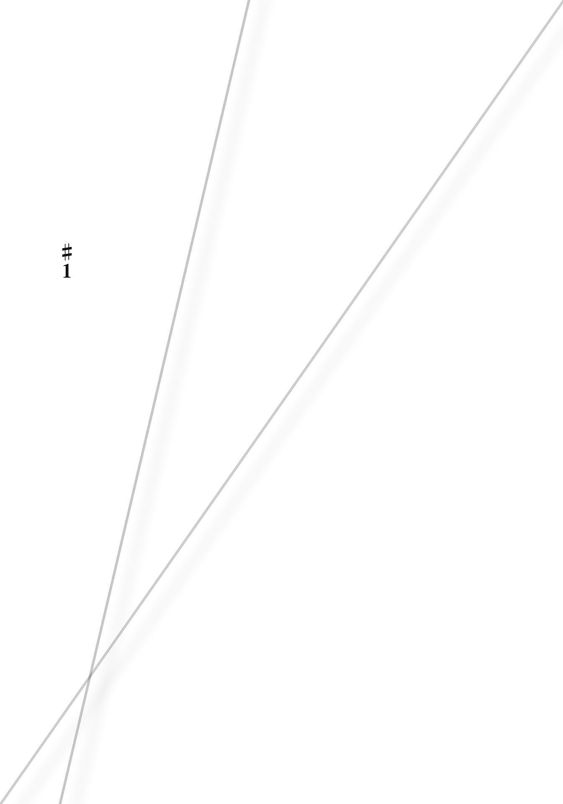
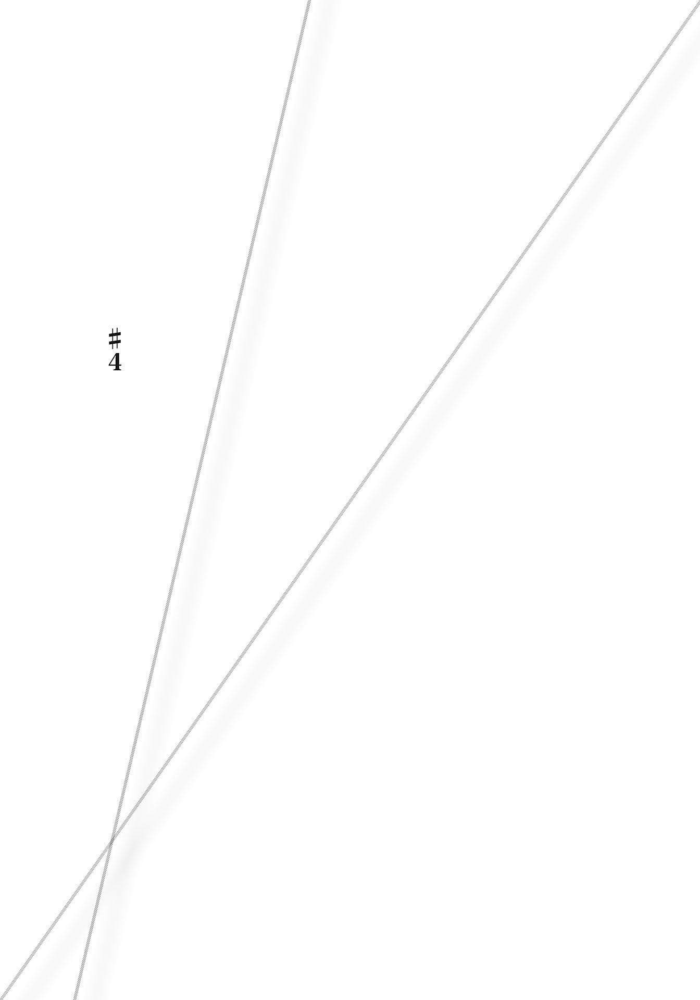
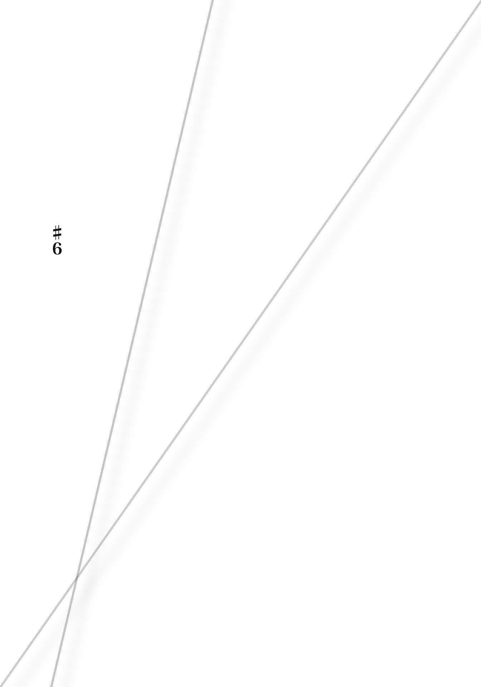
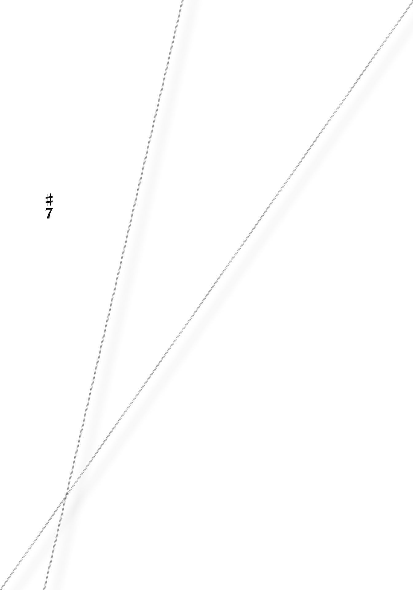
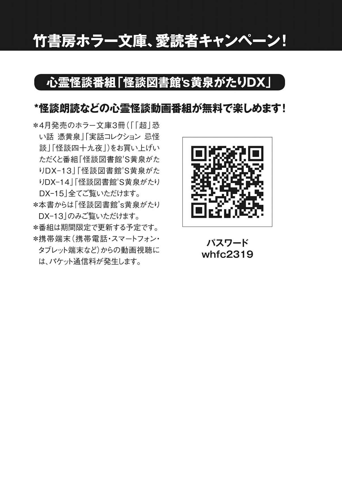

| 「超」怖い話 憑黄泉 「超」怖い話シリーズ (竹書房文庫) | |
| 久田樹生 | |
| (2016) | |
本作品は縦書きでレイアウトされています。
また、ご覧になる機種により、表示の差異が認められることがあります。
一部の漢字が簡略字で表示されていることがあります。
※本書に登場する人物名は、様々な事情を考慮してすべて仮名にしてあります。また、作中に登場する体験者の記憶と体験当時の世相よう心がけています。現代においては若干耳慣れない言葉・表記が登場する場合がありますが、これらは差別・侮蔑を意図する考えに基づくものではありません。
カバー写真／平野太一
ドローイング／担木目鱈
♯０
根深い恨み、というものがございます。
後ろから常に狙われているようなもので、実に恐ろしい話です。
捉えどころも形もない〈恨み〉は我々にとって対策のとりようもない代物とも言えます。
迂闊に近寄ることは避けたいですが、正味の話、目にも何にも映らないのですからどうしようもありません。
尊い人の中には沢山の人に恨まれることもあるようですから、余計に危険です。
自ら人を恨むという気持ちは一体どこから来るのでしょうか？
上手く気持ちに折り合いを付けられないから、心で人を攻撃する。
羊を生け贄にするように、誰かを犠牲にしてでも自分だけ幸せになりたいから妬む。
去るものを引き留めたくて、執着する。
虜にしたい相手に対し、邪な気持ちを向ける。
射貫くような感情の矢を向けてしまうほどの怨嗟の心情とは一体なんでしょうか。
いろいろな事情が絡んで、恨みというものは膨らんでいきます──。
これから始める〈憑 黄 泉 〉にも、人々の何かが収められています。
恨みもあるかも知れませんし、違うものかも知れません。
記録を進める内、次第にそれが何であるのかすら分からなくなったものもあります。
正直に申せば、ただ記すしかないものすら存在しています。
多分、それらの答えは読んで下さる皆様に委ねる方が賢明でしょう。
さあ、ページをめくって下さい。
できれば、順番通りに読み進めることをお奨めします。
ゆっくり、少しずつ、飲み込むように。
著者

「闇を舞う」
幼い頃、田島さんは母方の祖父母に預けられていた。
彼女が小学校へ入る前、一年くらいの間だったと思う。
両親が離婚調停に入ったことが原因だったのは、後に分かったことだ。
祖父母の家はテレビの民放放送が二局しかないような田舎だった。
裏には杉深い山がどっかり座っている。
自分と同世代の子供も居ないし、遊びに行く場所もない。
いつもいじけてばかりで祖父母には迷惑を掛けた。
それでも二人は孫である彼女に優しく接し続けてくれた。
とても冷え込んだ朝方、田島さんはふと目を覚ました。
柔らかい毛布に包まれたまま誰かに抱かれていた。
祖父だった。
空が薄明るくなり始めていた。何故か外にいる。太陽が眩しい記憶がなかったから、まだ出ていなかったのだろうか。
傍に祖母の姿は見えなかった。
場所は庭だ。祖父母の家の裏手側である。
祖父に呼びかけたが、答えはない。
彼は遠くの山を優しげに見詰めている。
釣られるように視線を辿れば、斜面に生えた木々の間を何かが飛んでいた。
一羽の真っ白な鳥だった。
くちばしと首が長い。全体的にすんなりとした形をしている。白く輝くような翼を大きく広げ、空を滑るように飛翔している。
──そこからの記憶はない。
目が覚めれば、いつも眠っている布団の中だった。
後に、祖父母へ訊ねれば、「夜が明ける前に外へ連れ出したこと」と「白い鳥」を一緒に眺めたことは本当だと微笑んだ。
目的や理由も教えてくれたはずだが、覚えていない。
それから間もなくして、祖父が亡くなり、彼女は母親の元へ戻った。
祖父母の家に行く前に住んでいたマンションだ。
すでに父親は家から居なくなっていた。
そのまま小学校へ上がり、母親と二人で暮らした。
母子家庭と言うこともあり、田島さんは他の子供より自立する必要があったと思う。
ひとりで留守番から始まり、仕事で居ない母親の代わりに家事もこなせるようになった。それはとても自然なことだった。
中学二年に上がる前、彼女は再び祖父母──正しくは祖母の家を訊ねた。
このときは母親と二人だったが、それは金銭絡みの相談があったからだろう。
夜遅い時間まで掛かったので、その夜は泊まった。
翌日になっても話は終わらず、田島さんは先に自宅へ帰るよう命じられた。
どうしてなのかは分からない。
家に戻るとすぐに母親から電話が入った。
『今日もこっちに泊まるから。帰りは明後日』
了承し、その晩はひとりで眠った。
寒さで目が覚めた。
何故か自室の窓を全開にして、その傍に立っている。
地上八階から見下ろす外は薄暗い。遠くの空が薄紫に染まっている。
夜明け前の景色だった。
アパートやマンションの間を縫うように、何かが飛んでいた。
一羽の白い鳥だった。
美しい姿は白鷺を思わせる。いや、そのままなのかも知れない。
寒さも忘れ、目を奪われる。鳥は微かに羽ばたいては、舞うように滑空していた。
夜明け前の蒼い空気のなか、そこだけ切り抜いたように真っ白だった。
ああ、なんという綺麗な鳥だろう。そんなことを考えていると、昔、祖父に抱かれて見たあの光景を思い出す。あのときもこんなだったな、と。
どこまで飛ぶのか。こんな街中のどこに巣があるのか。
見届けてやろうと目を凝らせば、忽然と姿が見えなくなった。
どこへ消えたのか。見失ってしまったことが解せぬまま、辺りを探す。
唐突に家の電話が鳴った。
祖母の訃報を告げる、母からの連絡だった。
その日から十二年経つ。
夜明け前に飛ぶあの白い鳥は二度と見ていない。
「にわとぃ」
何十年も昔のことだった。
ある山間に小さな地区があった。
山に囲まれているせいか、四方八方から圧迫されるようで息苦しく、昼なお薄暗い。
男は山仕事をする者や猟師が多かった。または賃金の良い危険な仕事を請け負う。
女は子を背負い、行商に回る。それか猫の額ほどの土地を耕し、僅かばかりの糧を得る。
皆、貧しかった。
そこに〈ちゃーぼう〉という中年男性が住んでいた。
並の男性より背が高く、骨太い。その身長をもてあましたように猫背で、坊主頭。いつも薄ぼんやりした表情を浮かべている。
継ぎ当てだらけの作業服を年がら年中着て、首から手ぬぐいを下げていた。
性質は大人しく、子供や動物に優しかった。
彼は何故か小学校までしか出ておらず、年老いて寝たきりの母親と二人暮らしだった。
住む家は借家であったが、ハッキリ言ってしまえば物置に毛の生えたようなものであり、人が暮らせるような代物ではない。持ち主が憐れみから住まわせてやっているだけだった。
そもそも先天的な問題があるのか、ちゃーぼうは物覚えが悪かった。
他人から用を言いつけられても覚えられないし、もちろん釣り銭計算などもできないから、商売も向かない。
幸いなことに体力があったから、日雇いで親子二人の糊口を凌いでいたのだろう。
このちゃーぼうのことを〈にわとぃ〉と悪し様に呼び、馬鹿にする人間もいた。
にわとぃ、は鶏のことである。
「にわとぃは、三歩歩けば全部忘るるがよ。じゃかい、あいつはにわとぃんビンタよ」
ビンタとは頭のこと。つまり鶏並みの頭という意味だった。
しかし、ちゃーぼうはそれが自分への悪口であることすら理解できなかった節がある。
にわとぃ、こっちへ来い、ここでこれをとにかくやれ。それならお前みたいな頭の持ち主でもやれるだろう、そんな風に命令をされても、彼はいつもの表情を崩さずに黙々と仕事をしていた。
たまに賃金すらごまかされていたようだったが、それにも気付かないことも多々あったらしい。得をしたと、雇い主は自慢げに周りへ話した。
それでもちゃーぼうは不平不満は漏らさず、ただただ働いた。
老齢の母親を食べさせなくてはならない。そのことだけは忘れなかったからだろう。
母親自身はちゃーぼうが鶏呼ばわりされることに、怒りを露わにしていた。
「こん子はそげんやなか！ にわとぃやなか！ 優しい、仏んごたる子よ！」
だがその言葉は逆効果であり、近隣の人々は余計に母子を笑い物にした。卑しい奴らよ、何が仏んごたるか、ずうずうしい、と。
そんな彼を助ける人はあまりいなかった。
皆、貧しく、自分たちのことで手一杯だったからだ。
野焼きの時期だっただろうか。
鶏を飼っていた家で大騒ぎが起こった。
「うちンにわとぃがおらんごなったが！」
五羽飼っている鶏のうちの二羽が忽 然 と姿を消したという。
蛇や猫、野犬の仕業ではないかと話し合ううちに、こんな証言が持ち上がってきた。
「ちゃーぼうがにわとぃを抱えて、山へ入っていく姿を見た」
目撃したと近所の子供たちが言う。
皆、彼らに案内されるままに山を探せば、木の根元に鶏の羽と僅かな血が見つかった。
どうもその周辺で解体したようだ。肉だけではなく内臓や骨の類は持ち去られたのか。それとも動物が咥えていったのだろうか。現場には欠片もなかった。
盗まれた側はちゃーぼうを責め立てた。
お前がやったのだろう、早く白状しろ、と数名が角材で殴りつけた。
いくら叩いても「おれァ、しらねェ」だけしか言わない。
「どうせお前はにわとぃよ。だから盗んだこつも忘れたんやろが」
「俺ァ知っとるとぞ！ お前、にわとぃやら何やらに悪戯しよったんやろが？ このイロキチゲよ！ 性根を叩き直してやっとよ！」
仕置きとばかりに折檻を続けた結果、ちゃーぼうの頭が割れた。
酷い出血を見て我に返ったのか、皆、動きを止めた。
ちゃーぼうはそのままふらふらその場を離れると、どこぞへと消えていく。
そしてその晩、ちゃーぼうの住んでいた小屋が燃えた。
火を消し止めた跡からは焼死体などは出なかった。
が、代わりにあの鶏の羽毛が見つかった場所で、ちゃーぼうの母親が事切れた状態で打ち棄てられているのを、山に入った人間が発見した。
殆ど衣服を身につけておらず、首の骨が折れていた。
股関節辺りも破壊されていたのか、両足がおかしな方向へ広げられていた、らしい。
ちゃーぼう本人はどこにも姿がなく、どこへ行ったのか定かではなかった。
それから間もなくして、地区では異様なことが連続で起こるようになった。
まず鶏を含む家畜が疫病に罹り次から次へと死んだ。
次に小学生くらいまでの子供達が連続で麻疹などによって高熱を出す。
そして、ちゃーぼうを打ち据えた連中と鶏泥棒騒ぎを起こした家、泥棒したところを目撃したと騒いだ子供達が特に酷い不幸に見舞われた。
事故や病気などで障害を負ったり、中には亡くなる者すら居た。
これをして〈ちゃーぼうの祟り〉だと恐れる人が出たのも無理はない。
口々に「あの連中が悪いが。そのせいで病が流行っち、おまけに牛馬も死ぬがよ」「それだけじゃなかよ。あの子供達が嘘ば言うちょったんじゃないかつ言うもんもあるがよ。鶏盗ったのは子供の親じゃった、とか」、など噂し合う。ただし、真実は不明だった。
中にはあのちゃーぼうの母親の遺体があった山で、〈ちゃーぼう〉や〈ちゃーぼうの母親〉を見たと明かす人も数名いた。
ちゃーぼうの姿を目にした人曰く〈杉の木林の間に立っていた〉。
それは〈まるで鬼のような裸の巨体に、あのぼんやりした顔が付いており、酷く違和感がある姿〉であった。また、ちゃーぼうの母親は〈枯れ木のような裸の姿でしゃがみ込み、林の間を鶏のように手を広げながら跳ね回っていた〉らしい。
「じゃっどん、そら、ちゃーぼうもひっケ死んじょることになるが」
「じゃろ。ちゃーぼうはもうひっケ死んじょっやろ？」
ちゃーぼう達の祟りを鎮めなくてはならない。
地区の住民は皆でなけなしの金を出し合い、小さな石碑を建てた。
ちゃーぼうとその母親の供養を願ってのものだった。
それが功を奏したのか、それから彼らの姿を見ることも、地区に不幸が起こることも格段に減った、という──。
これは佐山さんが亡くなったお祖母さんから聞いた話だ。
彼女は幼い頃から何度も繰り返し聞かされた。
お祖母さん本人はこの地区の出身であったが、大人になり外の土地へ出た。それ以来一度も戻っていない。
「出て行く前くらいには、ちゃーぼうの石碑は荒れ果てていた。石が割れて倒れていたし、それを直す人は誰ひとりいなかった」
実はお祖母さんも山で鬼のようなちゃーぼうの姿を見ていた。
本当に見上げるほどの背丈であった。
一糸まとわぬ姿で、生っ白い肌がぶよぶよして見え、とても気持ち悪い。
それはふらふら山の中を徘徊しており、気がつくと居なくなっていた。
「見たことを後悔するほど、厭なものだったよ」
この話は、いつもこの言葉で締められた。
それから時が経ち、お祖母さんは亡くなった。
彼女が病室で亡くなる前、うわごとでこんなことを呟くのを、佐山さんは聞いた。
〈そうよ、そうそう。私が見たちゃーぼうはそれくらいの大きさだったよ〉
薄く開けた目は、白い天井の上の方へ向けられていたように思う。
お祖母さんが住んでいた地区はすでにない。
元々食い詰め者やすねに傷のある人間が集まった場所で、ちょっとした集落に毛の生えた程度だったから当然だ、とは生前のお祖母さんが言っていた。
しかしそれを含め、どこからどこまでが真実なのか分からない。
ただし、お祖母さんの顔に僅かな麻疹の痕が残っていたことは確かである。
「つい、先日のこと」
青木さんは神戸へ出張していた。
夏休みを返上してのもので、心身共に疲れてしまう。
だから、作業を終えた後に取引先から誘われた食事も、彼は早々に辞した。
最近肥り気味であったことも理由のひとつではあったが。
四十代前半、健康診断の結果が気になる年頃なのだ。
ビジネスホテルへ戻り、ベッドへ腰掛けた。
「......ぉおっ」
低く声が出た。
突いた右手が思ったより深く沈み込んだように感じてしまったためだ。
丁度枕の近くであった。
何度か掌で押してみたが違和感はない。今は普通のクッションになっている。
何か気になってしまうが、どうしようもない。
仕方なくシャワーを浴びた。髪の毛を拭きながら、またベッドに腰掛けた。
今度は尻が大きく沈み込んだような感覚だ。
ズブズブ、柔らかな泥に嵌まる、と例えればいいか。
目を丸くして立ち上がった。
尻が乗っていたところを調べるが、やはりただのマットレスだった。
二度も似たことがあれば、首を捻る他ない。
（まさか、な）
馬鹿な想像が浮かぶ。
この部屋が曰く付きだからおかしなことが起こる。見えないところに御札が貼り付けられており......。ありがちな話をすぐに頭から追い出した。
自分は最近体重が増えた。それが原因だ、と。
が、少しすると疑念が戻ってくる。
気休めだと壁に掛けられた絵や椅子、机など調べたが何もなかった。
あとはベッドだが、動かせそうにない。
残るとなれば、マットレスだけだろう。
シーツを引っ張り出し、マットレスを持ち上げた。
重さのせいか、それともどこかに引っかかっているのか。あまり持ち上がらない。わずかに隙間が空いたくらいだ。
そこから白い何かがちらりと覗いた。
一瞬御札かと身を固くしたが、ただの紙だった。
破かないように引っ張り出してみれば、何かが印刷されている。
コピー用紙、Ａ４程度だろうか。枚数は一枚だけだった。
印刷されたものは、あるサイトのページだ。インターネットで公開されている何かのコンテンツなのかも知れない。
内容は何故か日航機百二十三便墜落事故に関する物。
高天原山系にジャンボジェット機が墜落した、あの大事故である。
一部に図が入っていた。
事故機の航跡だ。他、コックピット・ボイスレコーダー（旅客機に搭載されたブラックボックス内にあるもので、航空機事故、事件捜査の際、旅客機のコックピット内の音声を録音するもの）を文字起こししたものであった。
前の宿泊客が悪戯に残していったか、何らかの理由でここに隠し、忘れていったか。
どちらにせよ、部屋の清掃が行き届いていないことに変わりはない。
（明日、フロントに注意しておかないと）
コピー用紙をテレビ台脇に放ったとき、突然テレビがオンになった。
もちろんリモコンも本体のスイッチも押していない。
──あの事故から三十年......。
流れ出したアナウンスと映像は日航機百二十三便墜落事故についてだ。
事故後三十年後の特集であるようだった。
（何なんだ、これ）
おかしかったベッド。挟まれていた日航機事故のコピー用紙。勝手に点いたテレビ。そこから流れる事故から三十年の特集。偶然にしては不自然すぎる。
自然と身震いが起こった。
チャンネルを変える。出来るだけ明るい内容のところを探した。
視線の先に入るコピー用紙が気になるが、もう触れたくない。
無視をしながら近くにある椅子へ腰掛けた。ベッドへはもう座りたくもなかった。
この部屋では眠れない。そう言いたいところだったが、あいにく夏の休日のせいかホテルは満室だった。他もそうだろう。今更移動はできない。
それに大の大人、中年男がこれだけのことで大騒ぎしたら恥ずかしいようにも思う。
我慢するほかなかった。
一晩中椅子の上だったせいで、一睡もできなかった。
翌日、宿を引き払う際はコピー用紙も何もかも放置した。
また、フロントに何かを訊ねることもしなかった。
そのまま仕事先へ行き、全てを忘れるように作業に没頭した。
ただ、休憩時間、取引先の担当者と雑談をしていたときだ。
こんな話題を振られた。
「そういえば、昨日、ほら、日航機事故の日やったやないですか......」
担当者が続ける。
僕のね、友人の親戚に事故関係者が居るんですわ、と彼は暗い顔で教えてくれる。
それが事故の犠牲者なのか、日航側なのか聞かなかった。
聞きたくない、が正しいだろう。本当に彼の知り合いに関係者が居るのかどうかも分からないが、それを訊ねることすらしたくなかった。
適当に相槌を打ち、話題を変えたことは言うまでもない。
事故後三十年。
今もまだ何も終わっていないのかも知れない。
青木さんはそう思った。
「林道行」
門馬さんは山で野良犬の集団に追いかけられたことがある。
二年ほど前の秋、彼はオフロードバイクで林道をひとり楽しく走っていた。
休みの朝、突然思い立っての行動だったので、単独行になったのだ。
そこは初めて入った林道で、自宅からやや離れている。
入り口には鎖が掛かっていたり、進入禁止の看板はなかったから多分大丈夫だろうと判断して入った。
もしよい道であるなら、オフロード仲間へ教えたい。
だから路面などの状況を調べながらゆっくり進んだ。
何度目かの倒木を避けている最中、後ろから何かが近づいてくることに気がついた。
振り返れば犬の集団だった。
そいつらは正しくは野良というより、野犬と称した方が正しい風貌だろう。野生化しているのは一目で理解できる。
野犬に追いかけられるのは、林道を走っているとよくある話だ。皆犬に困ったら山に棄てに来るからである。犬にとっても誰にとっても迷惑だ。
（噛まれたくないな）
慌ててアクセルを開けたが、不慣れな林道で速度が出せない。
犬たちはすぐに追いつき、隙あらば飛びかかろうとしてくる。
チームのように統制が取れたその動きは非常に恐ろしかった。
中には身体の大きな洋犬も混ざっている。噛みつかれたらただではすまないはずだ。
牙が何度も足下を掠め、ヘルメットや身体を横から飛び出した枝が叩く。
這々の体でなんとか振り切ることができた。
ほっとして停車し、持ってきた水分を摂る。
周囲を見ればとても山深い地点に居る。左右に木々が生い茂り、視界がすこぶる悪い。
一本道だったはずだからこのまま戻れば問題ないはずだが、当然野犬の群れへ再度突っ込むことになる。それは避けたかった。
スマートフォンで現在地を出せば、道の表示がないところに居る。
先に進んでどこへ出るかもハッキリしない。地図を拡大したり縮小したりを繰り返す。
（......どっちかというと前へ進めば県道へ近くなるか）
一か八かだ。林道の先へ進む。道はどんどん狭くなっていく。立ち並ぶ木も更に密集してきた。見上げれば空は細い筋のようにしか覗かない。
辛うじて道があるからまだ不安はなかった。自分より以前に似たようなオフローダーが通ったであろう二輪車の轍 もある。まだいけると判断できた。
途中、下りが続いた。
不意に左手側の景色が開ける。
そこは石だらけの河原だった。
穏やかな流れの川はそこまで幅が広くない。見た感じ深さも足首くらいだろう。
対岸も同じような河原になっていた。
少し休むことにして、河原へ降りた。川を調べ、バイクのまま渡れることを確認する。地図アプリ上ではここを横断しても県道へは出られそうな感じだった。
持ってきた携行食を少し食べ、時計を確認する。
午後一時前になっていた。
足腰が少々疲れていたので石の上に座り込む。
筋をほぐしているとき、白い煙が空に一本上っていることに気がついた。
焚き火だろうか。位置は対岸方向で、割と近い。
（キャンプ場でもあるのかな。でも、地図ではそんなものないんだけどなぁ）
試しに近づいてみることを決めた。
バイクで川を渡る。オフロードだから下を擦ることもない。
向こう側の道も似たような感じで細い。また二輪車が通ったような痕跡もある。
ということは誰かが常に通っているということだ。
煙を目印に走り出したが、木が邪魔になった。
大体の感覚で進むと左に逸れる脇道を見つける。そこへ入ってみた。枝払いがされているのか、走りやすい。
少し進むと突然視界が開けた。
家があった。
木々の合間にぽっかり空いた空間に、ぽつんと建っている。
第一印象は、田舎の農家。焦げ茶色した木造の母屋で、近くに家畜小屋や鶏小屋が寄り添うようにある。周囲は庭になっており、綺麗に掃き清めてあった。所々に植えられたであろう背の低い木や草花がちらほら見える。
煙はその庭で燃え尽きかけた焚き火から出ていた。
バイクを降りて調べてみれば、新聞のチラシやダイレクトメールのような郵便物らしき燃えさしがある。
（ああ、これだったのか）
だとしたら住民が居るはずだ。道を訊いてみることにした。
サッシの引き戸になっている玄関から声を掛ける。
無反応だ。戸を叩いても誰も出てこない。
住んでいるのが老人であれば耳が遠い可能性もあるから、もう少し大きな声でと半分怒鳴るように呼びかけた。
しかし、物音ひとつ返ってこない。
外壁に付けられた電気メーターは動いている。冷蔵庫か何かを稼働させているのだろう。少なくとも空き家ではなさそうだ。とはいえ返事がないことにはどうしようもない。
仕方なく、庭をぐるりと回り家畜小屋を見た。
人どころか、牛も馬も姿がない。中はとても清潔で、アルミパイプらしき柵があった。床はコンクリートが打ってあり、そこにポリバケツや飼料の袋などが置いてある。壁には三つ叉フォーク、スコップが整然と掛けられていた。
よく見れば柵に付けられたえさ箱に飼料が入っている。全く減っていない。
鶏小屋も空っぽで、えさ箱だけが用意されていた。
周囲を見て回ったがやはり誰も見つけられなかった。
もう一度母屋を訪ねようと歩いていると、庭の一角に沢山の轍が交 錯 している場所があった。見た限り、二輪車ではなく四輪車。軽自動車程度のタイヤの細さだ。
農作業用に使っているのだろうか。
再び玄関を叩こうと手を伸ばすと、戸に隙間が開いていた。
手を掛ければ思ったよりスムーズに開いていく。
中は少し広めになっており、三 和 土 はグレーのタイルになっている。なんとなくリフォームしたような感じを受けた。
上がり框は板張りでよく磨かれており艶があった。
そのまま奥へ向かって廊下になっており、左右に障子や襖、ドアなどがある。
廊下の途中にテレビのキャラクターものの玩具が幾つか置いてあった。
一番目立つのは特撮ヒーローの変身ベルトだろう。
見た感じ最新のものだ。最近家電量販店で見かけた覚えがある。
小さな子供、それも男の子が居るのか。
「こんにちは」
奥へ向かって呼びかけた。少し待ってもう一度挨拶したが、やはり返答がない。
勝手に上がり込むこともできず、どうしようもないなと外を向いた。
そのとき、背後から電子音が聞こえた。
廊下にあるベルトが明滅し、何事か音声を発している。
もちろんそこには誰も居ない。
訳もなくぞっとしてしまい、慌てて外へ出た。
戸を閉じないといけない気がして、それだけは済ませる。
バイクに跨がった。厭な予感がした。エンジンが掛からないなどのトラブルが起こったらどうしようか。セルを回す。掛かった。
ほっとして走り出す。悩んでいる暇はなかった。賭けで先へ進むより、来た道を引き返すほうが賢明だ。途中野犬が居ても突っ込めばいい。
川を渡ろうとしたとき、やけにタイヤが引っかかる感じがした。
加えて、真横から何かに押されている感覚もあった。例えば、水の強い流れがダイレクトに掛かっているような。
なんとか渡りきり、元の道へ戻った。そして野犬に襲われた方角へ引き返す。
前方から強い風が吹き付けてきた。
身体全体を押し返すようなもので、ヘルメットごと首を持って行かれそうだ。
酷く冷たいその風は体温も同時に奪っていく。
（変だ）
インナーからアウターから何から外気対策を講じている。
秋とはいえバイクで走るのだから、それなりに冷えることは予想していたからだ。
それなのに急激なこの冷えは異常とも言えた。
風はますます強さを増す。
唐突に前へ進めなくなる。アクセルを開けても車体が苦しそうな振動を繰り返すだけだ。例えるなら、強固な壁に前輪を押しつけた状態で前に進もうとしているような感じか。
ギアを下げて前進する力を強くしても、状況は変わらない。
しかし、降りたら駄目だ、前に進む意思をなくしたらいけない、こんな直感があった。
どれくらい風と闘っていただろうか。
じわじわ前に進み出した。
風が弱まる。今しかないと暴走気味に近い走り方をする。
枝、倒木、石、その他諸々を自分でも信じられないほどのタイミングで避け、どんどん進んだ。止まったら絶対にここから帰れないような恐怖があった。
前方に覚えのある風景が見えてくる。
この林道入り口だ。
減速し、左右から車などが来ていないことを確認し、一気に街中へ向けて逃げた。
もう、何の邪魔も入らなかった。
その夜、オフロード仲間数人を集め、事の顛末を話して聞かせた。
ひとりになるのが怖かったからだ。
全員が「それ、逆に面白いな」「明日も日曜で休みだからそこへ行こう」と笑って予定を決め始める。
門馬さんは怖いから行きたくないと正直に言うが、彼らは別の理由を想像していた。
「そんな家とか本当はなかったからじゃないの？」
ここまで言われては後に引けなくなる。
明日、午前八時集合、八時半出発を決めてその日は解散した。
翌朝、あの山へ出掛ける。
総勢七名のオフロード部隊だ。こうなれば門馬さんも心強い。
何の障害もなく、あの林道へ入った。
野犬に注意と言い含めているので、全員がゆっくり進む。どこも見覚えがあった。倒木。石。張り出した枝。全て昨日のままだった。
そして道幅が狭くなり始める。が、すぐに行き止まりになってしまった。
進行方向には木が生い茂り、これ以上進めない。轍もそこで先細りになって消えていた。
「門馬君、どういうこと？」
「門馬さん、話と違いますやん」
仲間は文句しか言わない。やはり嘘だったんだと罵られた。
地図アプリで確認するが、道のない山の真ん中にポイントされている。
その後、いろいろ探してみたがどうしてもあの河原にすら辿り着けず、意気消沈して来た道を引き返し始めた。
門馬さんは最後尾をがっくりしながら走る。
途中、先頭が手を上げ全体に止まれと指示した。
「ほら、これ、こんなのあったっけ？」
林道の真ん中に、数頭の野犬が死んでいた。中にはあの大きかった洋犬も居る。
どれも強い力で引き千切られたか、腹部を踏み潰されたかしたような状態で、胴体真ん中から内臓が飛び出していた。辺り一面血の海だ。
誰がこんなことをしたのか。いや、どうやったらこんなことができるのか。
自分たちがここに入った後、何者かがやったとしか思えない。周囲を警戒したが他に誰かが居る痕跡も気配もなく、結局誰の仕業か不明のままだった。
全員が酷い臭いと犬の姿に気分が悪くなっていく。
放置したまま走り出すと、進行方向から強い風が吹き始めた。
何故か酷い鉄の臭いも混じり、ヘルメットの内部に溜まり出す。。
なんとか林道から出られたが、皆一様に疲れ切り、休憩で入ったファミリーレストランではなかなか口を開こうとしなかった。
飲み物を数回おかわりして、ひとりからやっと言葉が出てくる。
「......あそこ、もう行かない方がいいよ」
全員が頷いたことは言うまでもない。
門馬さんは今もオフローダーである。
もちろんあの林道へは二度と近づいていない。
実はあのときのことで今も解せないことがある。
ひとつは、あの家から出る道が一本しかなく、その上とても狭いので軽トラックでも通ることができそうになかったこと。それなのに四輪車の轍があったこと。
また、庭や家の臭いについてだ。
家畜を飼っていればそれなりの獣臭が残っているのが当たり前だし、そもそも玄関とはいえ他人の家に足を踏み入れたら独特の臭いに気がつかないはずはない。
人間は「他人の家の臭い」に敏感なのだから。
あの家周辺で臭いの印象がまるでないのは一体どうしてなのだろう。
重ね重ね残念なのは、あの焚き火の中にあった燃えさしを持って帰らなかったことだ。
郵便物などがあったのだから、正体を探る手立てにはなったはずだ。
しかし、逆に持ってこなくてよかったとも思っている。
どちらの選択が正しかったのかは、今も分からない。
「いぬ きたる」
瀧本さんの家はずっと犬を飼っている。
彼女が幼い頃から家に犬が居ないことがなかった。
現在彼女は二十七歳になっているが、何かと犬と過ごした記憶が多い。
家族の記念写真に必ず飼い犬の姿が入っていることからも窺い知れる。
父親曰く「少なくともある時代から瀧本家は犬と共にあった」らしい。
そもそも瀧本家は由緒正しき血筋ではないと伝えられている。
知りうる限りだと先祖は小作人だったり、商家の丁稚奉公だったりといった所謂〈市井の人達〉に過ぎない。
それでも一応〈本家〉はある。
瀧本家嫡男の血筋が残っている家をそう称しているに過ぎないが。
その本家が犬を飼い始めたのが確実なのは昭和十何年かからだろう。
口伝えに残っている話があるからだ。
大東亜戦争前から白犬を飼っていて、名前はそのまま〈シロ〉であった。
性別は雄。当然血統書もないから雑種であろう。
凜々しい顔の犬で、身体は若干ずんぐりむっくりであった。
彼は当時の瀧本家があった近くのお堂裏手に棄てられていた。
幽かな子犬の鳴き声に誘われて行ってみれば、丸められたサラシの上に小さな仔犬がちょんと寝そべっていたのだ。
真っ白な和 毛 で、目も開いていないほど小さい。
見つけたのは瀧本家の長男の元に嫁いだ人、要するに嫁である。
午後、ひとり使いに出た帰り道のことだった。
嫁は仔犬特有の愛くるしさに思わず連れて帰ろうかと思った。
しかし流石に飼いたいと言える立場ではない。後ろ髪を引かれる思いでその場を後にした。元々犬好きの彼女にとってそれは辛い選択であった。
だがしかし、瀧本家の門を潜ったとき、思わず驚いてしまった。
あの白い仔犬が玄関の前に寝そべっていたからだ。
思わず抱き上げてみるがやはりあのお堂裏に居た仔にしか思えない。
どうしてこんな短時間に来られるのか。
あそこからここまでの距離を考えても、仔犬の足でてんてこてんてこ歩いて先回りできるものではないはずだ。
慌てて来た道を引き返せば、果たしてお堂の裏に仔犬はおらず、サラシだけが残っていた。となるとやはりこの仔は先程の仔犬であろう。
どうしても放っておけなくなる。
どうしようか悩んでいるところへ、帰りが遅いと心配した夫がやって来た。
事情を話せば「すぐにこの犬を飼おう」と彼は断言した。
「これも縁だ。そもそもお堂に居たのだから、それこそ仏縁に違いない」
そして、白い仔犬は瀧本家に来て、シロという名前を貰った。
シロは利口な犬で、言ったことをすぐに覚えた。
更に家族にはよくなつき、外敵には吠える。番犬としても優秀だったのである。
家族全員に可愛がられ、特に長男である夫とその妻は我が子同然に扱っていた。
夫は愛用の手ぬぐいを裂き、シロの首輪の一部にしてやったほどだ。
また、シロは面白い行動する犬でもあった。
知らないうちに綱を解き、自分勝手に外へ出ていく。
どこへ行ったかと思えばあの自分が棄てられていたお堂に行っており、参拝するが如く頭を垂れている。その姿は近隣住民によく目撃されていた。
「シロは神仏を敬うことが分かっておるんやろなぁ」
周りの人々は感心していた上、シロが悪人以外吠え掛からないことを知っていたから、単独で歩いていても誰も厭な顔をしなかったという。
しかし、シロは大東亜戦争が終わる直前に突然居なくなった。
繋いでいた綱が解けており、どこかへ行ってしまったようだった。
いつものようにお堂だろうと考えていれば、全く戻ってこない。
慌てて周辺を探したが、どこにもシロの姿はなかった。
周りの人に訊ねても、シロを見たという人は誰ひとり出てこない。
それ以来、シロは戻ってこなかった。
もしかしたら食肉や毛皮にするため誰かが盗み、連れ去ってしまったのだろうか。誰ともなくそんなことを口にしたが、悲しみが増すばかりである。
ただでさえ瀧本家の長男である夫は戦争へ行っている。
そんな状況で皆不安に苛まれている最中だった。
妻はふと思った。
夫が戻ってきてシロが居ないと言えば、どれだけ嘆き悲しむだろうか、と。
終戦後、夫が帰ってきた。
こちらから切り出す前に、彼はシロはもう居ないだろうと訊いてくる。
何故かと逆に質問すれば、こんな話を聞かせてくれた。
「俺が外地で味方とはぐれ、どうしようもなくなったときがあった」
薄暗がりの中、草むらに潜んでいると犬の鳴き声がする。
見れば真っ白な犬が居た。それがどう考えてもシロにしか思えない。
顔つきも、体型もそっくりだ。それに、自分が与えた手ぬぐいも首にある。
シロか。お前なんでこんなところにと思った瞬間、あ、まさかシロが死んだのではないか、それでここまで飛んできてくれたのではないかと衝撃を受けた。
しかし目の前の犬は現実の存在にしか見えない。
恐る恐る草むらを出て近づくと、シロとおぼしき犬は少しずつ逃げる。
その様子はこっちへ来いと言わんばかりだ。後を追えばある一定の距離を取って離れる。シロは尻尾を振っていた。
夢中で後を追った結果、いつの間にか自軍陣営近くまで来ていた。
シロは知らぬ間に姿を消していた。幾ら探しても、どこにも居なかった。
「シロが俺を導いてくれたんだ。それがなければこうして戻ってこられていないだろう」
瀧本家はシロに感謝をし、改めて涙した。
そして、夫の話を聞いた日、シロが使っていた食器に幾ばくかの食べ物を入れ、彼がいつも繋がれていた場所に供え、家族全員で手を合わせた。
せめてものお礼のつもりだった。
しかしその晩である。
外から仔犬の鳴き声が聞こえる。
起き出してそっと庭を見れば、月明かりの下、シロの食器の所に仔犬が居た。
生後三ヶ月くらいだろうか。黒毛であったが、人間で言う眉の所が白い毛になっている。
その仔犬はシロにと供えていた食べ物をあらかた食べ尽くしていた。
外に出ても仔犬は逃げ出さず、満足そうな顔をしている。
声を掛ければじっとこちらの顔を見かえすので試しに「シロ」と呼びかければ、尻尾をぶんぶん振り、数度鳴いた。
ああ、これはシロの生まれ変わりに違いないと再びその仔を飼うことに決めた。
しかし黒毛だからシロというのもあれだと、クロと呼ぶことになった。
シロ改めクロはそれでもよかったらしく、すぐにクロという名に慣れた。
それ以来、瀧本家本家では飼っていた犬が居なくなると、少し経ってから仔犬が来るようになった。仔犬が来るのは、前の犬が消えて遅いときで半年。早いときで翌日だ。
興味深いことは、仔犬は必ず家の敷地内に迷い込んでくる点である。
どこへ引っ越そうが、どういうところであろうがそれは変わらない。
毎回犬種や性別は違う。雑種であることは変わりないが、どの仔も利口だった。
そもそも居なくなる犬も犬で、鎖に繋いでいようが何であろうが気付かないうちに姿を消す。記憶に残っている限り、自宅で亡くなる犬は一頭も居なかった。
瀧本さんも三度、いつの間にか犬が居なくなった場面に遭遇している。
何故、犬が去るのか。また、どうして仔犬がやって来るのか。
瀧本家ではこんな仮説を言い伝えている。
「家に一大事があるとき、犬が身代わりになってくれているかも知れない」
戦中にあったエピソードもだが、それ以外にも何かしらそれらしきことがあった。
例えば昭和中期以降、瀧本家の人物で山で道に迷った人物がいたが、その人の先導をしてくれたこともある。もちろんその時間に家から犬が姿を消していた。
また、犬達が来始めて以来、瀧本の家には特に目立った不幸がない。
何かしら起こっているのかも知れないが、特にこれというものが見当たらないのだ。
ただ、近年だとこんなことがあった。
瀧本さんの父親が癌と診断され、要再検査となった。
その晩、飼っていた犬〈チョキ〉が姿を消した。
朝になって気付いた家族はやはり周囲を探す。「犬が居なくなったら、新たに仔犬がやって来る」といえども、それまで一緒に暮らした愛情はあるのだ。
それに、もしかしたら見つかるかも知れないではないか。
これまでどの犬が居なくなっても、同じ思いで探し回った。多分、これまでの瀧本家全員似たようなものだったと思う。
父親も自分の身に降りかかった癌という不幸すら忘れて、懸命にチョキを探した。
だが、やはり発見することはできず、チョキは戻ってこなかった。
そして一ヶ月ほど後の昼間、母親がチョキの犬小屋で仔犬が寝こけているのを発見した。
柴犬っぽい、まん丸な雰囲気の仔犬だった。
その日、父親の再検査結果が出ていた。
癌の疑いは綺麗さっぱり消え失せていた。
今も瀧本家には犬が居る。
とても利口で可愛い雌の犬だ。
彼女がいつ出て行くか分からない。
できうることなら、居なくなって欲しくない。
だから、家族皆、毎日が幸せであるよう努力している。
そうすれば、犬は出て行かない。多分、きっと。
もちろん犬には、精一杯の愛情を注ぐ。
いつ居なくなっても後悔しないように──。
「石壁の裡」
西田君は夏の沖縄をバイクで放浪したことがある。
大学に入って二年目のことだ。
気楽なひとり旅であり、また、費用を極限まで節約した貧乏旅でもあった。
那覇などを避け、あまり賑やかではない場所を選んだ。
海辺にテントを張り、魚を釣る。釣れなければ買い置きの食物を食べた。
また、泡盛などを昼間から舐めては酔う。眠くなれば適当に日陰を見つけて寝た。
その場所に飽きれば移動し、また新たな場所でキャンプを始める。
こんな事を繰り返した。
荷物やバイクが盗まれることがなかったのは多分、素朴な地域を選んだからだと思う。
会う人会う人、皆親切でフレンドリーだった。
八月の中旬、彼はある海岸をキャンプ地に定めた。
あとはいつものよう自由に過ごす。
その日も午後からほろ酔いで砂浜から釣りをしていた。
「にいちゃん、キャンプか」
唐突に声を掛けられた。
振り返ると中年男性がそこに居る。地元の人と同じく日焼けした肌だが、顔つきが違う。どことなく薄い造作だ。笑顔そのものは人なつこいものだった。
彼は良い物があるとまた近寄ってきた。
今日獲ってきた〈ぐるくん〉だ、沢山ある、揚げてやるから喰え......と誘う。
ぐるくん。沖縄に来て何度か聞いた魚の名前だ。
男の後をついて行けば、沖縄らしい石壁に囲まれた、低い屋根の家がある。
玄関を潜れば、瓜実顔の女性がひとり家に居た。
男はその人を妻だと言った。
庭に向けて解放された縁側に高校生くらいの男の子が座っている。
顔が男の妻に似ている。多分息子だろう。
会釈するがあまり社交的ではないのか無視をして、どこかへ行ってしまった。
まあどうでもよいだろうと家に上げて貰えば、男がどんどん食べ物を勧めてくる。
言葉に甘えてご馳走になった。
久しぶりに白い米も食べられて嬉しかったことを覚えている。
ただ、珍しく酒を呑ませてこない。
沖縄に来たら、やたらとアルコールを勧められていた。
遠回しに「貴方は呑まないのか？」と聞けば、酒は絶対呑まないと首を振る。
彼は数年前に関東から移住してきたという。
「だからここで暮らすには少し困る」とのことだった。
にいちゃん、また昼に飯を食いに来い。明日、十四日な。それなら仕事の都合で居るから、とありがたい申し入れがあった。
承知し、また明日の昼に訪問する約束をした。
翌日、昼過ぎに起きた。
昨日の約束を果たすため、男の家を目指す。
しかし、幾ら歩いても辿り着かない。
道を間違えたかと引き返すが、殆ど一本道の上、家も多くあるわけではない。
あのとき、少し酔っていたから間違えるのだろうか。
電話番号も何も聞いていないから連絡も不可能だった。自分は携帯を持っていたのだから、連絡先の交換くらいすれば良かったと後悔しても遅い。
一度砂浜まで戻り、改めて男の家を目指す。
途中、さっき気付かなかった分岐点があることに気付いた。
もしかしたら、こちらの脇道かも知れない。さっき通っていない方の道を上っていくと覚えのない家を見つけた。
男の家ではなかった。
沖縄的な開放感のあるもので、低い石壁の裡 に広い庭がある。
そこで十数人の人たちが宴会を開いている真っ最中だった。
三 線 の音がして、幾人かが踊っている。
（もしかしたら、あの人が混ざっていないだろうか）
男が居ないか眺めている内に、その中の数人と目が合った。彼らは西田君を宴に手招いてくる。断る間もなくグラスに泡盛を注がれた。
一片の氷が入れられており、なかなか口当たりが良い。これが古酒 というものかと感動していれば、今度は料理を出され、箸を握らされる。
見れば庭の一角に豚料理が沢山並んでいた。
皿の上にある皮付きの豚肉はそこから配膳されたのだろうか。
茶色い皮がとろりとして旨そうだったので遠慮せず口に運んだ。
思った通り、ゼラチン質の食感とほろりと解ける赤身部分がなんとも言えない。
酒を呑む。次第に楽しくなってくる。
ありがとう、美味しい、旨い、と繰り返せば、皆は笑顔で頷いた。そして、また酒の瓶を差し出しては杯を重ねさせる。
頭を下げながら、違和感を覚えた。
誰も話しかけてこないのだ。
よく聞けば歌声も笑い声もない。
響いているのは三線と手拍子くらいだろう。
（もしかしたら、誰も喋れないのか？）
理由はどうであるか知らないが、それを聞くのはなんとなく気まずかった。
この朗らかな雰囲気を壊すような予感があったからだ。
（まあいいや、悪いことではない）
夢中で呑んで食べてを繰り返す内、男のことを忘れてしまった。
数時間楽しんでいると日が暮れだしたのでお礼を言い、席を立つ。
小さな折り詰めをくれたので、ありがたく貰った。
いい加減酔いも回っている。足下に気をつけながら砂浜へ戻った途端、安心したのかその場で倒れてしまった。
目が覚めると満天の星々が広がっている。
起き上がればそこは砂浜ではなく、道の上だった。
振り返れば見覚えのある家屋がある。あの〈ぐるくんを食べさせてくれた男〉の家だ。
持ち歩いていた携帯を見れば午前三時。
やっと見つけたと喜ぶ反面、こんな時間に訪ねるのもよくない、そんな冷静な思考も浮かぶ。室内の明かりも消えていることだし、明日また改めて謝罪しよう。そんなことを決め、テントへ戻り眠った。
翌朝、暑さで目が覚めた。
二日酔いで気持ちが悪い。携帯で時間を確かめようとしたが、残念ながら充電が切れている。節約して使っていた電池式充電器を繋ぐと、朝八時すぎだった。
しかし予想しないことも表示されていた。
昨日の日付なのだ。
八月十四日。
そんなことがあるはずがない。今日は十五日のはずだ。
男と約束したのが「明日の十四日、昼」だったことも覚えている。
（じゃあ、昨日、道に迷ったとか、宴会のことは夢だったのだろうか）
ふと脇を見れば、あのとき貰った折り詰めがある。
開けてみれば、皮付き豚肉や他の料理と餅が詰められていた。
匂いを嗅げば、少々傷んでいる。
食べられないだろうとテント傍にあった草むらに廃棄し、改めて考えた。
今日が男と約束した日であれば、もう一度訪ねるべきだろう。
その途中に昨日の宴会をしていた家も探してみないといけない。
日付の謎を解く鍵はそこにあるはずだった。
改めて道を行く。しかし、どこにもあの分岐点がない。
調べる内、獣道のようになった手入れされていない古い道を見つけた。
昨日はもっと綺麗な道だったはずだ。だが、これ以外の脇道はなさそうだった。
草を漕ぎ漕ぎ先へ進めば、石の壁は見つかった。とても古びている。ただ、内側に建家などはなく、草木が密集し荒れ果てていた。
ここに居ても仕方ない。改めて男の家へ向かった。
今日はすんなり着いた。
男は庭に居る。
「にいちゃん、早いな」
笑っているところへ訊ねてみた。
約束は今日ですよね、と。男はそうだと頷く。
昨日のことをしどろもどろになりながら説明したが、男は「酒に酔っていたからだろう。酒は人間を惑わせる」と少し嫌悪感を顕わにした。
とりあえず家に入れと誘われる。
玄関へ入れば、男の妻が居た。
ああ、今日、息子さんはと口に出せば、男とその妻は首を捻る。
息子は居ない。あれはこっちに来る前の年に死んだのだと暗い顔になった。
しかし仏壇もなければ、遺影もない。
前回見たのは近所の人だったのだろうか。
昨日居たのは誰ですか、奥さんに似ていたから息子だと思った、もしかしたら他人のそら似ってやつですかねと続ければ、男と妻はあからさまに不機嫌な態度へと変わった。
もう帰れと男は西田君を家の敷地内から追い出した。
その強い態度はとりつく島もない。
訳も分からないままテントへ戻り、改めて草の中へ目をやれば、やはり棄てた折り詰めはそこにある。零れた中身もそのままだ。
どう考えても夢や勘違いではない。では、あの一日は何だったのか。
男の誘いや、息子の存在、あの家での宴はどういうことだったのか。
思い起こせば、あの宴そのものがおかしい。
誰も話さないのに、あの満ち足りた空気や賑やかさは一体。
西田君はなんとなく、今日が旅の潮時だと自覚した。
荷物を纏め、またバイクとフェリーを使いのんびりと本州へ戻った。
それから数年後、西田君は沖縄へ足を運んだ。
ぐるくんの男と、あの宴の場所を探してみたくなったからだ。
やはり分岐点から選んだ先は石壁だけの荒れ地だった。
また、ぐるくんの男とその妻の姿は見つけられなかった。
家があったはずの場所は、家屋が取り壊され、石壁だけが残されていた。

「はくさま」
いまはもうないけれど。
ある話をするとき、石岡さんのお祖母さんはいつも同じ言葉で始める。
彼女はもう聞き飽きているけれど、きちんと相槌を打つ。
内心「ああ、はくさまの話だな」と思いながら。
お祖母さんがこちらへ嫁いで来る前に住んでいたところは、農村地帯である。
各農家は害獣と戦っていた。畝を破壊されたり、作物を食べられたりなど大きな被害をもたらされるからだ。農家にとってそれは死活問題でもあった。
害獣には猿、猪などあるが、その中に鼠もいる。倉に保存しておいた種籾やその他のものが被害に遭った。僅かな隙間をくぐり抜け、障害となるものは囓り取る。鼠取りも仕掛けていたが、焼け石に水だったとしか言いようがない。だから鼠は特に嫌われていた。
だが、ある大きな農家では鼠を大切に扱っていたという。
その農家──北村の家では鼠は護り神だと称していた。だから絶対に殺さない。
殺したら家そのものが傾くからと言い伝え、家族達は徹底していた。
家の奥には神棚があり、そこに木製の仏像と鼠の像が並んで祀られている。
その鼠の方を〈はくさま〉と呼び、拝むのだ。
北村の爺曰く。
「はくさまは遠い昔、北村の祖先が願を掛けて来て貰った」
元々北村家は農家ではなく、それなりの出自であった。それがある事がきっかけで失脚。遠く離れたここまで逃げてきて、身分を偽り、農を営むことで追っ手の追求を逃れた。
ただ、閉鎖的な農村で上手く立ち回る事ができず、一時期村八分状態に追い込まれた。
当然何の協力も得られなくなり、道端の草を取ることすら邪魔をされるようになる。
そこで頭を下げればよいものの、北村の当主はそれをよしとせず、ある事を行った。
俗に言う〈まじない〉で、何者かに願を掛けたのだ。
途端に北村の家へ厭がらせをしていた家に不幸が舞い込み始めた。
口がきけなくなる者、手足が曲がってしまう者などが出てきてしまう。また一部では酷い疫病すら流行りだした。
そしてどういうことなのか田畑の作物が枯れ始めた。
〈これは北村の家がやっているらしい〉
噂はすぐに伝わり、それが真実と知るや否や、皆北村家へ謝罪を申し入れた。
そして赦して貰えるよう懇願する。
北村家の当主は〈まじない〉を変えた。
効果は抜群で、枯れかけていた作物は元に戻り、数々の不幸は去って行った。
それから、北村の家はそのような力があると恐れられるようになった。
逆らえばまじないで酷い目に遭わされる。
だから周りは北村家を粗末に扱うことを止めた。
これをきっかけとし、北村家はその地で比較的大きな農家となった。
一説によれば〈北村家がまじないをかけた〉噂を流したのは、北村家そのものであったとも言われる。自分たちに有利に事を運ぶためであったのは言うまでもないだろう。
このときまじないで願を掛けた相手が〈はくさま〉である。
いつからその名が付いたのか、すでに分からない。
この北村家に頼むと、鼠よけの札をくれることがあった。大人の親指くらいの木札で、何かの文字と図柄が入っている。鼠を避けたい場所へこの札を貼れば、効果は覿面だった。
石岡さんのお祖母さんも実際に札を見たが、確かに貼ってから数ヶ月は鼠が出なかったと記憶している。
札は〈はくさま〉の札で、鼠達が畏れ敬い、避けていくからだと北村家は説明していた。
ではこのはくさまとは一体どんな存在なのだろうか。
人々が訊いたところによれば、鼠の神様で背丈は成人男子ほど。
真っ白い身体で、人語を解す。願を掛ければすぐに効くが、礼儀を失すると怒る。
だから気をつけなくてはならないという話だった。
石岡さんのお祖母さんは幼い頃、この北村の娘と友達だった。
農作業の合間、よく仲良く遊んでいたがそんなときこの娘がこんなことを教えてくれた。
「うちなー、ほんとうは、いもうとなんよ」
生まれてすぐに死んだ姉がいる、ということだった。
お祖母さんが親に訊ねれば、彼らはすぐにそれを認めた。
「北村の家は第一子の女児が死ぬ」
北村家の血を引く女性が産む最初の子は毎回女の子だった。
そして必ず生後一週間以内に死ぬ。
第二子からは性別も男女どちらかになり、皆健康に成長していく。
外の家に嫁いでいてもそれに例外はない。
だからお祖母さんの友人である北村の娘は生き、その姉は亡くなった。
「これな、はくさまの仕業と言うことだわ」
はくさまは人間の女を嫁取りする。
北村の当主は願を掛けるときこんな約束をした。
〈我が血筋に初めて生まれる子が女児であれば、はくさまに嫁がせる。願いを叶えよ〉
だから北村の家の血縁に初めて生まれた女児はすぐ死ぬ、と。
母親の胎内で死産にならないのは、一旦この世に生を受けさせなければ〈はくさま〉が嫁に取れないからだともいう。
噂だと親たちは話を閉じたが、そうではないような気がして仕方がなかった。
時が経ち、北村の娘は他家に嫁いだ。お祖母さんの友人の娘だ。
そのうち子を産んだ。初産は女児で、少し目を離したとき、命を落とした。生後三日目のことだったらしい。それまでの赤ん坊は健康そのものだった。
これをして、石岡さんのお祖母さんは〈はくさま〉のことは本当だったのだと感じた。
時代と共に離農する家が増えていき、その集落は人が居なくなった。最後まで残っていた北村の家も離散し、今は跡形もない。
はくさまはどうなったのか。
北村の血を引く人が初産を迎えるとき、現在どうなっているのか。
全ては闇の中である。
「歩き続ける」
ニートで、いつも時間だけはあった。
大室さんは苦笑いでこんなふうに言う。
彼女が会社を辞めた理由は、上司や先輩の理不尽な命令に端を発する。
それは仕事上のシステムを無視した内容であったから、業務上の不具合が必ず出てくることは予想できた。
だから彼らに分からないよう上手く立ち回り、問題が起きないように処理したのだ。
それが気に食わなかったのだろうか。
今度は人格否定を始めとした暴言や、物理的厭がらせへ変わってきた。
俗に言うパワーハラスメントである。
「上が命じたことをそのままやれないのは、会社規定に反する。それを見逃してやって指導してあげているんだからありがたく思え」
「ビジネスマナー、ビジネス礼儀を教えてやる。お前は礼儀がなっていないから」
どれも身勝手な言いがかりであり、納得はできない。
会社上層部へ相談をしたが、今度はそれが火に油を注ぐ結果になった。
パワハラに加え、セクシャルハラスメントまで加わって来る。
証拠を揃えても、会社は動いてくれなかった。
逆に大室さんを社内から排除する動きに変わっていく。
この頃になると、精神的に追い込まれ、その影響は身体にも及んだ。
元がバレーボール経験者と言うこともあり、長身で筋肉質だったのだが、体重が一気に落ちた。加えてホルモンバランスを著しく崩し、髪や肌、その他がボロボロになっていく。
枝毛が増え、梳かすだけで髪の毛が切れたり抜けたりする。
どうしようもなくなって切った。子供の頃以来のベリーショートだった。
爪は波打ち、よく割れた。マニキュアも何も塗れない。手入れをしようにも薄すぎて駄目なのだ。また指先そのものも逆むけなどで荒れた。
肌は化粧水程度なら問題ないが、化粧品によっては赤く腫れることすらあった。だから毎日ナチュラルメイク以下のほぼすっぴんにせざるを得なかった。
この頃はスカートを穿いていなければ性別不明だったという。
彼女は実家から遠いところで独り暮らしをしていたが、心配させないため親には黙っていた。
会社外の友人知人が様々なフォローをしてくれたが、それすら鬱陶しさを感じてしまう。もうおかしくなっていたのだろう。自分から関係を切ってしまった。
それもよくなかったと思う。
会社の理不尽と戦う気力が消え失せ、自主退職という形で辞めた。
雀の涙ほどの退職金が出た。
が、それすら上司と先輩に〈この守銭奴が。お前のせいで会社が被った被害を考えれば、受け取るなんてできないはずだ〉などと悪し様に吐き棄てられた。
大室さんは無職になった。
心療内科へ行くことが怖かった。
何か酷い診断が下されれば、自分が〈真っ当な人間である〉資格すら奪われそうな気がしたからだ。ただの妄想、強迫観念でしかないのだが、当時はそう考えていた。
とにかく、自分で復活しなくてはいけない。早く心身共にまともな状態へ戻し、友人達へ謝罪をし、元通りの人間関係を築かなくてはならない。
時間はある。
早朝はジョギング、午前中は掃除や洗濯。午後になったら外へ用事を済ませに行く。用事がなければ、図書館などへ足を運んだ。
食事は自炊で朝と晩の二回にし、食費を浮かせた。
夜は十時くらいに寝てしまう健康的な生活を心がけた。
自らを律するためでもあった。
だが、次第にそれが義務のようになってしまい、「やらなきゃ。一度でも失敗したらわたしは駄目人間になってしまう」と思い込み、自らを追い込んだ。
それがよくなかったのだろうか。
体重も健康もなかなか戻ってこない。
一日中身体が怠く、暑さ寒さの感じ方も鈍くなり、汗が出ない。また、よく目眩に見舞われた。自律神経に問題が出始めていたのかも知れなかった。
そんな日が続く中、ある夜だ。
唐突に目が覚めた。
起き上がり、時計を確認すれば午前十二時になったばかりだった。
ベッドに入ってから二時間しか過ぎていない。
ぼんやりしていると頭の隅に何かが浮かんだ。
言葉でも具体的な映像やイメージでもなかったが、何故か意味が伝わった。
〈自宅アパート前の道から一番近い少し大きめの十字路へ行く〉
〈そこを起点としてとにかく真っ直ぐ北へ歩け〉
〈行き止まりはない。最後、行き着いた先のところで待つ〉
このような内容だったと思う。突然、やる気が湧きだしてくる。
外へ出たい。言われたとおりのことをしたい。どうしてもしたい。
矢も楯もたまらず、大室さんは立ち上がった。
歩けと言うことだから、歩きやすい格好がよいだろう。
上下ジャージを身につけ、足に馴染んだランニングシューズを履く。
スマートフォンなどを入れたボディバッグを背負い、最後にキャップを被った。
外へ飛び出せば、身体にも力が湧いていた。
言われたとおりに十字路へ行き、スマートフォンでコンパスを表示させる。
（北へ。ただ一直線に。そうだったな）
真っ暗な夜の街中を悠然と進みだした。
幾ら歩いても疲れない。気力は充実しており、一歩ごとに力が満ちてくる感じだ。
足の裏、土踏まずから少し爪先側へずらした辺りがとても暖かい。いや、ときには心地よい涼しさも感じた。不快さは全くなかった。
何時間も歩く内、周りが薄明るくなってくる。
それを見上げれば、右手側の空が薄明るいラベンダー色に変わってきていた。
ずっと向こうには雲が浮かんでいる。
その一部を溶かすように太陽の輝きが差し込んで来た。
そして、ある場所へ行き着いた。
そこは神社の鳥居前だった。
参道を進むと拝殿がある。
そっと賽銭を取り出し、お詣りをした──途端に、全身に疲れが襲ってきた。
とても立っていられない。
流石に神社内で力尽きてはならない。迷惑になる。
力を振り絞り鳥居を出て、一番最初に目に入った公園のベンチに横たわった。
その瞬間、一気に深い眠りに落ちた。
暑さで目が覚めた。
自分が汗だくであることに気がつく。
すぐ近くで蝉が大合唱をしている。
その鳴き声が更なる汗を呼ぶようだった。
考えてみれば、久しぶりに大汗をかいている。暑さを感じ取っている。
ぼうっとしながら考えれば、女の自分がこんなところで眠っていて無事だったのは幸運だろうか。いや、こんな格好だったから男の人だと思われたのだろう。
それでもバッグも何も盗られていないのだから、やはり運がよい。
時間を確かめれば、丁度昼前。
（......お腹空いた）
健康な食欲だと感じた。
足全体が痛い。靴の中は肉 刺 だらけだった。身体の前と後ろも、おしりも筋肉痛だ。
帰りはタクシーじゃなければいけないだろう。番号を調べようとスマートフォンを見た瞬間、着信があった。
実家の母親からだった。
『あなた、大丈夫なん!? 』
焦った口調だ。訳が分からない。
理由を訊ねれば、昨日の夜中、祖母が突然起き出して大騒ぎしだしたらしい。
「孫が大変やから、拝めと仏さんがいうんや！」
夜中の十二時から仏壇に手を合わせ始めるので、父母が問い詰めた。
祖母は拝むことを止めず、口だけで答えた。
夢に仏さんが出てきて、孫が今いろいろ大変やから、お前が拝め。こっちはこっちでようけするから、お前は拝め、と言われた、と言う。
何が大変かは分からない。
祖母的には「仏さんが言うておるんやから！」で信じきっていた。
父母は何か気になって、娘の携帯に何度も掛けたが出ない。
『やけぇ、お祖母ちゃんが言うてること、ほんまやないかって心配したのよ』
娘の部屋へ行く、と父親は車を出した。
高速を使っても八時間以上掛かる距離だ。
母親は残り、電話とメールを続けろと命じていった。
『あんたどこにいるの？』
事情を説明するのも億劫だった。
こちらから父親へ連絡してみるからと、電話を一度切った。
スマートフォンに残った着信履歴は今日の午前十二時少し過ぎた頃から、繰り返し何度も残っていた。メールも何十通も未読である。どれも実家からだ。
しかし着信したことを一切覚えていない。
途中コンパスを使っていたし、時刻も確かめていたことは確かだ。
それなのに、今の今まで気がつかなかったのは理由が付かない。
首を捻っていると、目の前を見知った顔が歩いて行く。
父親だった。
声を掛けると飛び上がらんばかりに驚いている。
お前、こんなところでどうした？ 痩せてるやんか、なんでや？ と矢継ぎ早に質問してくるので、余計に疲れる。
車に乗せて貰い、逆にどうしてあの公園に来たのか訊いた。
「お前の家に行く前、トイレに行きたくなったんやが、コンビニも何もない。そのとき、頭の隅っこに〈あっちにある〉って何か浮かんだんや」
公園を見つけたので、車を止め、歩いていたら......というわけだった。
今度はこちらの事情を説明することになった。
会社のこと、辞めたこと、心と体の不調のこと。
そして夜中のこと、祖母や両親に起きたこと。こうして導かれるように会えたこと。
偶然とは言えないこの〈まるで救いのような一連の出来事〉。
全て話し終えた途端、両の目から大粒の涙がボロボロ零れ始めた。
悲しいとか辛いとかそういう類の涙ではなく、ただただ出てくるだけだ。
父親は何も言わず黙っていた。
それから実家へ事情説明をし、一度地元へ帰ることが決まった。
と同時に父親と親戚が動き、あの問題のある会社への制裁も行われた。
が、大室さんにとってはもうどうでもよいことに変わっている。
再就職をした先は全員が人間的に素晴らしく、毎日の仕事が楽しくて仕方がない。
新しい趣味も始め、張りのある生活へ戻った。
「あなたの北に歩いた話も凄いけれど、お祖母ちゃんの夢もなかなか凄いね」
後に母親が感心していた。
先日、大室さんは結納を交わした。
新しい職場の縁で出会った素晴らしい男性だ。
今の彼女は笑顔の似合う、柔らかな線のすてきな女性に戻っている。
因みに、彼女が北へ歩き行き着いた神社の主祀神は大 国 主 命 である。
「牛の夢」
中沢さんは胃弱だった。
彼女がそれを意識したのは小学校四年生の頃だ。人と比べて自分が如何に食が細く、また、消化能力が低いか自覚できたのだった。
だから身体は小さく、痩せていた。その年齢の平均を下回っていることが当たり前であり、身体検査がとても苦手だった。
結構男子にチビガリと馬鹿にされていたからだ。
ある日、祖父が田舎からやって来て、一緒に枇 杷 を食べた。
果物は好きだったからとても嬉しかったが、やはりひとつか二つ食べたら満足する。
なんとなく自分の悩みを祖父に相談したら、うんうんと頷いた。
「祖父ちゃんに任せろ」
翌日、祖父は帰っていった。
それから七日目の晩だった、と思う。
夢を見た。
真っ白い牛が居る。とても大きい。普通の牛のイメージより、一回りは巨大だ。
短い角が生えていて、鼻輪は付いていない。
牛は中沢さんのお腹へ向けてしきりに鼻を擦りつけてくる。
くすぐったくて、暖かくて、くすくす笑ってしまう。
そこで目が覚めた。
周りが明るい。すでに時計のアラームが鳴る少し前だった。
この頃すでにひとりで眠り、朝は自分で起きることになっていた。
ぼんやりベッドに座る。いつもなら食欲も何もないはずなのだが、お腹が鳴った。
初めてのことだった。
居ても立ってもいられず、朝食の席へ着く。
驚くほどトーストや牛乳が美味しかった。幾らでも食べられそうな気がした。
いつもの倍ほど食べ、漸く落ち着いたほどだ。
父も母もそれを見て驚いている。
「そんなに食べて大丈夫なの？」
分からない。でも、いつもみたいにお腹は苦しくなかった。
学校へ行ってからの給食も、自宅での夕食も人並みの量食べられる。
やはり先生もクラスメートも吃驚した顔を浮かべていた。
夜、祖父から電話が来た。
『どうや？』
祖父が言うには、牛の神様に一週間拝んでおいたという話であった。
『孫の胃が大丈夫なよう、美味しい物を美味しく沢山食べられるように、とな』
思わず興奮して、祖父にあの牛の夢のことを話した。
祖父は馬鹿にせず、全て聞いてくれる。
やっぱり神様は言うこと聞いてくれたんだなぁと笑っていた。
以来、中沢さんの胃は丈夫になった。
とはいえ、一気にそうなったわけではなく、成長と共に徐々に、である。
最初のあの日のような感じはただ一度だった。
大人になった彼女は、例の祖父が拝んだという牛の神様の所へお礼へ訪れた。
そして、その夜、またあの白い牛が夢に出てきた。
前と違って鼻を擦りつけては来なかったが、今度はその背に乗せてくれた。
とても暖かく、そして安心できる乗り心地だった。
だから彼女は、近々また良いことがあるのではないかと期待している。
「横田」
昭和の時代である。
海老原家があった地区の川向こうで、家畜を殺す人達が居た。
街中より隔離されたような一角で、人が食べるために牛や豚を屠るのだ。
肉以外の部分、例えば皮はその近くで加工されていたし、内臓はただ同然の扱いで市場に流れた。そういう時代だった。
当時、海老原家の息子はその川向こうの人間と付き合っていた。
名を横田という。
小学校の頃、何故か馬が合い、とても仲良くなったのだ。
交友があることが公になるとよくないと言ったのは、横田だ。
彼は年の割に全てを悟っていたのだろう。
だから隠れて付き合っていた。
彼らが中学を卒業するとき、離ればなれになった。
海老原の息子は地元に残るが、横田は別の土地へひとり出るという。
理由は聞けなかった。
明日の夜、夜行列車で行くと横田は教えてくれた。
見送りに行くと言えば、彼はそれを固辞した。
変わりに今日の夜、神社で会おうと提案してくる。
すぐに承知して、夜中会いに行った。
これまでの友情の礼として、大事にしていた石を携えて。
山で拾ったこの石は琥珀色と白色が縞模様になっており、とても綺麗な物だった。
横田へ贈ったがこんなよいもの要らないと突き返される。
それを押しつけるように渡した。
もし必要ないのなら、将来返しに来いと言い添えて。
ならばと横田が提案する。
俺が二十五歳になったら、ここから少し離れた場所の神社に行くから、エビちゃんも来てくれ。日にちは俺の誕生日、正午だぞ、と。
約束を違えぬよう、ちゃんと覚えておけと互いに笑い合った。
別れる少し前、横田はこんなことを教えてくれた。
──エビちゃん、俺がここを出て行くのは、家畜を殺す家に居たくないからだ。
家畜は殺せば殺すほど、俺らに乗ってくるのだ。
その証拠に、月一で必ずあいつら、来るんだ。
夜中に家の周りをぐるぐる回るんだよ。
頭がなかったり、腹が断ち割られたりした姿で、鳴きながら回るんだ。
恐ろしいけれど、俺ら、見なくちゃいけないんだって。親父とお袋が命令する。
真っ暗闇の時間に牛豚の声が聞こえたら、雨戸を開けて、外を見ろ、て。
見たくねぇのに、見ろ、て。
本当に居るんだ。牛も豚も元の大きさで、でも、死んでる姿で。
そいつら、見る度に違う姿なんだ。
偶にな、牛とか豚が人間の皮被って歩いているんだ。
そんなとき、あいつら人の言葉を喋れるみたいでな。
俺らに何やら言って聞かせるんだが、歩きながらだからぶつ切れだし、難しいことだし、何言っているか分からんのよ。親父もお袋も俺と同じく学がないから。
本当に、恐ろしいんだよ。
だから、俺はここを出るんだ。出たらもう見なくていいだろ？ ──。
横田は外へ出ていった。
海老原家の息子は、十八になってから家を出た。勘当に近い家出だった。
この海老原家の息子こそ、海老原さんの祖父である。
彼が二十歳になった頃、横田の話を含めて教えてくれた。
海老原さんは当然訊ねる。
横田さんと会えたのかどうかを。
祖父は苦笑いで答えた。
「会えなかったよ」
横田が二十五歳になった日の正午前、件の神社で待っていた。
有名なところだから参拝客が多い。
目を皿のようにして探したが、横田の姿はない。
日が暮れるまで待ったが、結局会えないままだった。
がっかりしながら駐車場へ戻ったら、車のボンネットの上に何かが置いてある。
あの横田に渡した石があり、その下にビニールテープで紙が固定されていた。
横田は来ていた。
それも祖父の車を知っていたとするなら、正午前にこの辺りに潜んでいたのだろう。
それなのにひと言も声を掛けずに居なくなっていたことになる。
石を取り上げ、紙を剥がせば裏側に汚い字で手紙が書いてあった。
ひらがなが多く、短いものだ。
えびちゃん、ごめん、そんな内容だった。
大事に持って帰って、きちんと読んだ。
謝罪と共に、こんな感じのことが書いてあった。
牛と豚は逃げても追いかけてきたよ、のような内容だ。
やるせない気持ちにしかなれなかった。
それからも横田とは直接会えないままだと祖父は言う。
「でもな......俺は横田を見たことは何度かある」
例の約束からずっと後、テレビの中で、だ。
最初見たときは驚いた。
ある事件の取材フィルムの背景、野次馬の中に横田らしき人物が立っているのだ。
昔の面影が残っているから、間違いではない。
特徴的な耳の形も、アバタの跡も残っている。
絶対にあれは横田だと思った。
それ以来、横田はテレビの中で何度か会えた。
どれも事件や事故などの映像で、興味本位の群衆に紛れている。
周りと違う、真剣な表情だから目立っていることこの上なかった。
分からないのは、日本全国いろいろな場所であることだろう。
横田は一体どんな仕事をしているのか、どうして様々な場所に居るのか。
ひとつとして分からなかった。
海老原さんの祖父は、最近もテレビの中で横田を見かけた。
地上波デジタル放送に変わり、鮮明な映像の中だ。
自分と同じように年を取った横田だったぞと笑う。
やはり事件映像の中だった。
「横田、まだ毎月、牛や豚が来ているのかね。あの映像じゃ分からんな」
祖父はどこか懐かしそうな顔だった。
海老原さんは祖父と約束した。
もし一緒にテレビを見ているとき、横田の姿を見かけたら教えて貰うのだ。
が、現時点でその約束は未だ果たされていない。

「捨て子」
高田さんは赤ん坊の頃、一度棄てられたことがある。
ただし、すぐまた彼女の両親が拾いに行ったのだが。
古来より〈生まれた赤ん坊をいったん棄てて、拾い直すと元気に育つ〉などの言い伝えがある。それを模した行動だったのか......と言えば少々違う。
彼女の場合、事情が違っていた。
産後、母親が高田さんを連れ病院から戻ってきたときだ。
訪れた母親の母親──高田さんにとって、母方の祖母がこんなことを言い出した。
〈この子はこのままだとまともに育たないし、幸せな人生にならない。一生苦労するだろう。一度棄てて、預かって貰わないと駄目だ〉
突然すぎて、その場に居た全員が目を丸くした。
理由を訊けば、前日の夢見が悪かったからと言う。
「その夢の中に死んだ夫が出てきて、そう教えてくれた」
夫とは高田さんの祖父に当たる。
彼は若くして亡くなっており、また、その死に方も少しおかしかった。
朝、いつまでも起きてこないと思ったら、布団の中で冷たくなっていたのである。
まるで眠ったまま逝ったような状況だったらしい。
その祖父が何を告げたのかと言えば、かなり具体的なことであった。
ひとつは棄てるときの面子、日付、時間、方角。
そして場所。棄てるとき、赤ん坊の頭を向ける方向。
更に、棄ててから何分後に拾えという指示まであった。
非常に馬鹿馬鹿しい内容であったから、高田さんの両親は最初拒否をした。
そもそもそんな短時間に、何に預かって貰うのだ。
しかし祖母はいつまでもしつこく食い下がる。
「あの人が言ったの。〈向こう〉が預かるって」
向こうとはなんだと訊き返せば、口ごもる。祖母は泣き出し始めた。
こういう人ではなかったのにと、実の娘である母親は困ってしまう。
「まあ、それくらいならやってもいいんじゃないの？」
周りのとりなしで、仕方がなく言うことを聞く羽目になった。
棄てる日が来た。
二月中旬の、ある寒い日の朝だった。
まだ暗い時間で、参加するのは高田さん、高田さん両親、祖母である。
寒さにげんなりしながら、わざわざ買ったコンパスを片手に東北東へ歩く。
近くにあった公園、そこで一番太い木の根元に高田さんは置かれた。
頭は西南西に向ける。寒さ対策に厚い毛布でくるんでいるが、かなり心配だった。
棄てて五分待てと命じられたので、じっと我が子から目を離さなかったらしい。
時間が来たらすぐに拾い、家へ急いで戻った。
祖母は「よかった、よかった。これで大丈夫だ」、そう繰り返す。
納得いかないまま娘の様子を見た。高田さんは大人しく眠っている。
きちんとベビーベッドに寝かせようとしたとき、両親はあるものを見つけた。
「あれ？ この子、こんな所に黒子ってあったっけ？」
彼女の髪の生え際に、胡麻粒より少し小さな黒い点が二つ並んでいた。
泥や砂だろうか。指で払っても取れない。やはり黒子のようだ。
生まれてからの写真を見ても一切そのようなものはない。
棄ててから出てきたとしか思えなかった。
そんな短時間で黒子ができるものか分からない。
両親は首を捻るほかなかったが、祖母はそれを見て安堵の表情を浮かべている。
「この黒子はこの子を護る。必要なくなれば、消える。そう夫は夢で言っていた」
それからの高田さんは目立った問題もなくすくすく育った。
あの黒子はずっと共にあった。
しかし、二〇一五年。二十九歳の時、急に消え失せる。
本当に気がつかないうちに、綺麗さっぱりなくなっていた。
それからというもの、何故か沢山の男性から愛を告白されることが増えた。
どれも相手として素晴らしい人たちばかりだ。
が、これまでこのような経験のない彼女からすれば、一歩引いてしまう。
でも、最近これはと思う人がひとりだけ出てきた。
不器用で実直な感じの体格がよい男性で、頼りがいがありそうだ。
彼女に、近いうちに彼氏ができる、かもしれない。
「名」
宍戸さんの父親は昭和四十九年の寅年生まれだ。
彼女は父親からこんな話をよく聞かされたという。
「由乃、お父さんの名前、寅夫か虎夫になるところだったんだぞ」
父親は宍戸家の長男として生まれた。謂わば跡継ぎである。
喜びの最中、名付けのことでひと揉め起こってしまった。父親の父親──要するに宍戸さんの祖父は息子の名前を〈寅夫〉或いは〈虎夫〉にすべしだと主張した。
「跡継ぎが生まれたら、その生まれ年の干支に関係した文字を名に組み入れること」
これがそれまで宍戸家の慣習であったのだ。それは何故か。
〈跡継ぎの名を干支に纏わるものにすれば、大成し、家はますます栄える〉
遠い昔に旅の六部を世話したとき、礼として教えて貰ったことが発端である。
以来その通りにしてきた宍戸家はそれなりに栄えた。
だから名付けについて無視をするわけにはいかないのだった。
それを知る家族は特に反対をしなかったが、ある人がこんなことを言い出した。
「一応、姓名判断とかした方がいいのではないか？」
父親のお祖母さん、即ち宍戸さんの曾祖母である。
当時、曾祖母はそういう類のことを非常に気にしていたのだった。
曽祖父はすでに他界しており、その曾祖母の発言権は家族の中で大きなものになっている。祖父自身も押し切られ、同意をした。
が、この話を耳にした数名の親族がやって来て異を唱えた。
「もし姓名判断が悪かったらどうするのだ？」
「干支に纏わる文字を使うなと言われたら、それに従うつもりか？」
喧々囂々と一同が騒ぎ立て、一向に話がまとまらない。夜中になり、明日の夜また来ると親族は帰っていった。
が、彼らは来なかった。それぞれ原因不明の病気で動けなくなったからだ。
何か名付けの問題と関係しているのではないかと曾祖母は主張した。
名前の件に含め、これらを訊ねるため、彼女の見知った僧侶を家まで招く。
役所への提出期限が迫っていたので、結構無理を通して来て貰った。
僧侶は生まれた赤ん坊の顔を見るなり、「寅夫、虎夫はよくない」と断言する。
寅や虎の文字を入れることが問題であり、それらを加えた名前にすると、家を喰らい尽くした後に、自分すら喰う。結果宍戸家を完全に潰すことになる、らしい。
その証拠に、寅や虎を入れろと主張した親族が怪我や病気になっただろう、とも言う。
まだ誰も何もそんなことを話していない時点であったから、同席した者は一様に驚いた。曾祖母が教えていた可能性は、その時点では誰も気付かなかった。
「そうですか。しかし、そうだと宍戸家の決まりを曲げることになります。どうしたらよいでしょうか？ 何か問題がない方法があるでしょうか？」
僧侶に曾祖母が改めて訊けば、すぐに代案を出してきた。
〈寅の文字を分け、ここから由を抜き出して使えば良い。それなら干支の一部を何とか組み入れられる。また、由を使った名付けは父親がやりなさい。これで問題はない〉
だから、父親の名前に由が入れられた。
また、帰る前に仏壇で僧侶は何事か拝んでくれた。
それから数日を待たずに、病に伏していた親族は快方へ向かった、という。
曾祖母が裏で何か暗躍していた可能性もあるが、やはりおかしな事ではあったと思う。
だから、父親の名前は寅夫でも虎夫でもなくなった。
ただし、宍戸さんの弟は彼が生まれた干支から名前を取った。
彼もまた、ある僧侶に相談した後に名付けられている。
そのおかげか、宍戸家は今も安泰である。
「そんと、ふーふー」
高坂さんは海外を放浪していたことがある。
今より十年以上前、彼が二十代の頃。
俗に言うバックパッカーであろうか。有名な本〈深夜特急〉に憧れたのが事の始まりだ。
タイやインドなどの他に中国にも足を伸ばし、旅を楽しんだという。
所持金が尽き掛けたのは上海だった。
切り詰めても一ヶ月持つか持たないか。
帰りの旅費は確保してあるとはいえ、不安が募る。
そろそろ旅も潮時だと感じ始めた頃、あるひとりの男に出会った。
安宿近くの小汚い食堂で飯を食べているときだ。
テーブルを挟んだ椅子に、突然誰かが座った。
男だった。
自分と同じくらいか。年若く、どこか陰がある。
雑な服装で、筋肉質な身体が見て取れる。背が高い。無造作に伸ばした髪と無精髭が野性味を感じさせた。
細く鋭い目はどことなく厭世的な雰囲気を湛えている。
それなのに喋り掛けられた。
が、聞き取れない。少なくとも公用語である北京語に近いように感じられたが、そもそも高坂さん当人が会話ができるようなレベルではないからそれも怪しかった。
仕方なく英語で話せるかと訊ねれば、相手は頷く。
結構綺麗な発音で男は喋り出した。
「お前は日本人だろう？」
だから声を掛けた。俺は日本人が好きなんだ。上品だからな、と笑うのだが、口元だけだ。目は全く変わらない。ジョークなのか判断すら付かなかった。
男は「そん」と名乗った。
テーブルに何度か書く真似をし、そんが松という文字を当てることを知った。
姓なのか名なのか言わないから分からない。
松は飲み物を奢ってくれ、何やら延々と喋り続けた。
今となってはどのようなことを会話したのか詳細を思い出せない。その合間に繰り返す「日本人は上品だ、洗練されている」が印象に残った。
明日もここへ来い。この時間なら居る。お前ともっと話がしたいと松は強い口調で誘ってくる。特に悪いことをされたわけでもないので、約束を交わした。
自分の名を教えれば、松は何か発音しづらいようだった。
いつも持ち歩いていたメモ帳にペンで「高坂」と書いて見せた。
だったら〈ガオ〉と呼ぶ、そう彼は宣言した。
高はガオと読むらしい。
翌日、約束の時間に店へ行けば、松は先にテーブルへ着いていた。
こちらに気付くと「ガオ、ガオ」と大声で呼ぶ。
松は昨日と同じく「日本人は上品だ、洗練されている」を繰り返した。
そのうち、飲み物が酒類に切り替わると、彼は更に饒舌になった。
北京語らしきもの、英語、そして何故か日本語まで混ざり出す。そのどれも淀みないのでそれなりの教育を受けた人物ではないかと感じた。
「松は上海の人なの？」
「違うよ」
彼は元々北京生まれだと笑うが、何か嘘の匂いを感じさせる。
時間が過ぎ、また明日ここでと松は千鳥足で帰って行く。
その日からほぼ毎日、この店で松と酒を呑むことになった。
彼はその度にご馳走してくれた。
ありがたく奢られ、一日の食事はその一食だけにし、財布の紐を締める。
もう少し上海という街に居て、松と付き合っていたかったからだ。
ただ、松に関しては少々首を捻ることもあった。
何度か「上海案内とかしてくれないか」と頼んだこともあったが、常に無理だと断られる。そして、どういうわけか分からないが、昼間には絶対会ってくれなかった。この界隈を歩いても彼の姿を見ることがない。
それなりの事情があるのか、それとも生活エリアが違うのかもしれなかった。
また、連絡先を訊ねても「俺がここに来るのだからいいだろう。俺は約束を違えたことがあったか？」と怒り出す。
必然的に松に会うのは夜、この店だけと決まったようなものだった。
松と出会って四週間目、遂に金銭的余裕がなくなった。
「今日が最後だ。明日には日本へ戻るため、移動を始めるよ」
松に告げれば、彼は悲しそうな顔を見せた。
初めて素直な感情が顔に出たと言える。
「そうか。ガオは帰るのか」
松は少し何か考え事をし、ポケットから小さな紙包みを出した。
開けば、中に小さな彫り物が入っている。
落花生くらいの大きさをした虎だった。
色は白に近い薄緑だから、多分翡翠というものか。
彫りは浅く、全体のバランスも歪でさほどレベルが高いものではない。
松はそれを指に摘まみ、こんなことを教えてくれた。
この虎は俺が大事な人から貰った。
元々身体が弱かった自分を護るものだと言われて渡された。
値打ちがあるようなものではないが、長年持ち歩いた大切なものだ。
「これをガオに渡すから、今から俺が書くアドレスに持って行って、そこに埋めてくれ。場所は日本だから。お前ならできる」
いやまて、日本も広い。俺が住んでいるのは関東だから、とんでもなく遠いところとか無理だぞ......そう反論するが我関せずだった。
メモ帳とペンを渡せと頼まれ、手渡した。
松はすらすらと住所を書く。
それも日本人がよくやる表記だ。都道府県名、市町、番地などの順番である。
おまけに漢字以外のひらがなやカタカナまで使っていた。ただ郵便番号はなしだ。
更に次のページに図を描く。
家の敷地内らしきもので、その一部にバツを付けた。
バツの横には〈木〉と入れられる。
「ここに行って、このバツのところに虎を埋めてくれ」
住所は関西で、どちらかというと大阪市内から結構外れている。
関東住みには遠い。気軽に足を運べないだろう。
断るのだが、松は必死に頼んでくる。
「お願いだ。ガオが頼りなんだ」
勢いに押され、つい頷いてしまった。
紙に包み直された虎を受け取りつつも、いつになるか分からないし、おいそれと約束を果たせないが、それでもよいか念を押した。
松は嬉しそうに承諾の意を示した。
その晩、上機嫌の松に付き合い、強か酒を呑んだ。
途中からの記憶は薄い。
店を出るとき、松に握手を求められたことを薄らと覚えているだけだった。
それから日本へ戻った高坂さんは友人宅へ転がり込み、再就職をした。
資格を持っている分、職に困ることはなかったのだ。
毎日が忙しく、あの松と約束した虎のことは忘れてしまった。
そして新たに部屋を借り、引っ越しを終える。
荷物の中からぽろりと転がり落ちた紙包みを見て、ああ松のアレだと思い出した。
懐かしいバックパッカー時代の荷物からメモ帳も取り出す。
松の文字でアドレスもちゃんと残っていた。
しかし関西である。
とても行っている暇はない。すでにあるプロジェクトにも関わっている。
良心の呵責からか、虎をテレビ台に置いた。忘れないようにするためでもある。
ただし、紙に包んだままだった、が。
それから半年以上が過ぎたが、虎はテレビ台に放置されたままだった。
どうしてなのかこの時期、自宅に置いた酒が急激に減ることが増えた。
ウイスキーは封を開けて三日で半分。
焼酎は四日くらいか。日本酒は全く減らなかった。
とはいうものの、呑んだ覚えがない。
勝手になくなったとしか言いようがなかった。
そして、久しぶりにできた彼女が初めて部屋に泊まったときだった。
夜中、叩き起こされた。
出た出たと震えているから何がどうしたのか訊ねれば、お化けだと叫ぶ。
落ち着かせようとするがパニックだ。
明かりを点け、服を着るなり外へ出ようとする。こんなところで眠れないらしい。
慌てて一緒に部屋を出、近くのファミリーレストランへ連れ込んだ。
詳しい話を聞きたかったからだ。
「あの部屋、お化け出る」
彼女は心地よい疲労の中、ゆったり微睡 んでいた。
しかし何かが騒がしいなと目が覚めた。
横を見ても、高坂さんが軽い寝息を立てているだけだ。
そんなとき、逆側から何か声らしきものが響いた。
横になったまま振り返れば、そこに誰かが立っていた。
テーブルを挟んだ向こう側、テレビの前辺りだ。
それは小柄な人間であり、例えるなら〈古い写真で見るような、昔の服を着た中国人〉らしい。それもかなり質素なデザインで長い袖だ。頭にピタッと密着した帽子がある。
細い目と薄い唇で頬骨が出た輪郭。表情はない。多分男。でも女の可能性もある。なで肩で、全体的に滑らかな身体のラインだった。
その人物は身じろぎせずに佇んでいるだけなのだが、そこから声が発されていた。
〈ふーふー、ふーふー、ふーふー、ふーふー〉
少し濁ったような、それこそ中国語のようなイントネーションがあった。
やはり男女どちらの声か分からない。
目の前のことがあまりに現実とかけ離れているので、ぼんやりしてしまった。
考えてみればかなり照度を落とした間接照明なのに、この人はハッキリ見えている。
青白い肌も、青色がかったグレーの服も、黒い帽子や靴も全て見て取れる。
そこで改めて異様な状況にあることを自覚した。
「そして叫んだら消えた。その後、起こした」
この一件で彼女と別れた。お化けの出る部屋に住むような男と付き合っていられないからという理由だった。
高坂さん自身はそんなものを見ていないが、彼女の態度を見る限り本当なのだろう。
彼は中国人に関して、このような仮説を立てた。
あの翡翠の虎が関係しているのではないか、と。
いつまでも約束を果たさないから、痺れを切らして警告に出てきた。そう考えれば辻褄が合わないこともない。
とはいえ出てきた中国人は少なくとも松ではない。
松は背が高いし、肩幅もある。
仮にその人物が松なら、それは彼が死んでしまったことを示しそうだ。余り考えたくないが、その可能性も否定できない。
どちらにせよ、そろそろ虎を埋めに行かなくてはならない時期が来たのだろう。
高坂さんは、有給を取り関西へ足を運んだ。
アドレスの示す場所までレンタカーで移動したが、なかなか見つからない。
やっと辿り着いたかと思えば、そこは住宅街の中にある一軒の空き家だった。
壁で囲まれており、門の所には工事現場で使うような黄色と黒のロープがダラリと張られている。管理会社の看板が下に落ちていた。
ロープを跨いで入れば、モダンな造りの平屋建てがあった。
スプレーの落書きや割られたガラス、散らばったゴミが目に付く。
尻の辺りが落ち着かない。
何か周辺から沢山の視線に晒されているような感覚だ。
慌てて松の指示するバツの場所を探した。
木があった。そこまで背は高くない。大きめの葉っぱが茂っていた。
その根元に埋めろと言うことだろうか。
考えてみれば掘る道具を持ってきていなかった。
仕方なく手近な石や枝で浅く土を掘り返し、そこへ紙包みのまま虎を入れた。
土を被せ、これでいいだろうと外へ出れば突然声を掛けられた。
どこにでも居そうな中年女性二人組だ。何か怒っている。
話を聞けば、この空き家には不法侵入者が多数あり、近隣住民が迷惑を被っているということだった。
さっきの視線はこの人達だろうか。断言できないが違うような気もする。
女性達は関西弁で捲し立ててきた。
浮浪者が住み着く。不良がたまり場にする。心霊スポットだと騒ぐ連中が来る。
だから侵入してきた人間を見かけたら警察を呼ぶと警告しているらしい。
慌てて謝った。
正直に〈虎を埋めに来ました〉などと言えるわけもなく、咄嗟に嘘を吐く。
ここは過去知人が住んでおり、旅行に来たついでに様子を見に来たのだ、という内容だ。
中年女性達は少し疑った後、何か納得したような顔に変わった。
彼女曰く「この家は元々両親と娘二人の四人家族であった。その娘のひとりが〈どこかで生きとったらあなたくらいの歳やから、その人がお知り合いなんか？〉」。
生きていれば、が気になったので質問で返した。
十数年以上前にこの家はおかしなことがあった、そう答えが返ってくる。
父親が自宅玄関で変死。
母親は自死という話だったが、実際は他殺ではないかと近所では噂があった。
下の娘はその母親の傍で死んでいた。無理心中と言われたが、信じられていない。
また、長女である娘は生き残っている。
母親と妹が亡くなったときは彼女が中学生の頃だ。が、通夜が終わった直後から行方不明になった。
その中学生が高坂さんの年齢に近いのではないか、という話であった。
思わず血の気が引いた。
そんな家に侵入し、あんな出来事があった虎を埋めてきたのか。
だいたい松はどんな理由があってこんなことをさせたのだ。
厭な気持ちになり、中年女性達に適当な理由を付けてその場を後にした。
関西行を決行してから、自宅の酒は減らなくなった。
そして新しい彼女ができたが、部屋で怪しい中国人を見ることもなかった。
虎の件を松に報告したかったが、手紙も何も送り先が分からない。
約束は果たしたから、これ以上何もできないぞと心の中で告げるだけだった。
ただし、気になる点が二つ残った。
ひとつは部屋に出た中国人が口にした〈ふーふー〉だ。
中国語だろうと調べてみれば、福福でふーふーと読むらしい。だが、虎も〈ふー〉であり、ふーふーで二文字だとすれば、虎虎である。
これは威勢が良い・元気を示すと共に残忍、凶悪の意味もある。
元彼女の口ぶりだけではピンイン（中国語の発音）などが分からず、正しいかどうかは不明だ。が、受け取った翡翠の虎を思えば、虎で〈ふー〉ではないかと妄想してしまう。
またもうひとつは松とあの家族の関係だ。
実は現地で出会った中年女性から、あの家族の名字を聞かされていた。
それは〈松〉が付くものであった。
もし、松が日本人であるなら......と一瞬思ったが、矛盾は残る。
何故なら、失踪したのは娘だからだ。
いや、その娘が男装していたなら。しかし体型などはどう見ても男性だった。
上海へ松を探しに行くか。それは止めた方がよいのか。
すでにあれから時は流れた。
松とふーふーのことはなかったことにすべきではないかと、高坂さんは思っている。

「あつまよりきたる」
遠い昔、小さな郷があった。
そこでは少女が居なくなることが稀に起こる。
神隠しであろう、山人の仕業であろう、働き手にするだの、嫁にするだの囁かれた。
が、相手が誰であろうと人攫いに変わりはない。
里の者総出で〈かやせかやせ〉と探したが、ついぞ見つかることはなかった。
実際は人買いや人攫いである事が多かったことが後に分かっている。
貧しい時代だった。
時は移り昭和の高度経済成長期。
その郷があった場所は小さな町となっていた。
そこでこんなことがあった。
周辺で一番働き者で器量よしと評判の女性が忽然と姿を消した。
彼女は以前に夫と死別しており、子供はない。
実家が相手を見繕ったので再婚すべしという話が出た矢先に行方知れずとなったのだ。
年寄り達は過去の〈神隠し、山人〉を思い出し、口々に騒ぎ立てた。
当然時代が時代である。
流石にそんなことはあるまいと、皆は言う。
新しい夫を嫌って、逃げたのだとまことしやかに噂された。
再婚相手とされた男は頑強な身体であったが、幼い頃の病気が原因で顔面の一部が崩れていた。だから直視するのも厭がる人間が多かったことは確かだ。
女性が失踪してから、この男は山で首を吊った。
男の家から女性の実家はたいそう恨まれることになった。
それから三年ほどした一月、松が開けた頃に件の女性が実家へ帰ってきた。
前よりも美しく、また、垢抜けた身なりとなっている。
そしてひとりの赤ん坊を連れていた。男の子だった。
女性が言う。
「私はある方と縁があり、子を産んだ。それがこの子だ。が、どうもそこの姑と上手くいかず、事あるごとに叱責される。夫も味方してくれず、こうして戻って来た」
正月を終えたところで、これまでの酷い仕打ちにどうにも我慢ができなくなった、と。
訊けば相手の家はここよりずっと東にある大きな街のものであった。
あの再婚相手のことも未だ根深く残っていたが、女性の実家は娘を受け入れた。
それから間もなく、二月中頃である。
その町は大吹雪に見舞われた。珍しいことだった。
風雪の激しさからか、送電が不安定になっている。
線が切れてしまえば、町全体が真っ暗になることが予想に難くなかった。当然、どの家も不安だったはずだ。
あの女性の実家でもそれは変わらなかった。
両親と娘、その息子の四人が身を寄せ合っていると、何かが聞こえる。
戸を叩くような音だった。
風や雪が立てた音か、近所の者だろうか。
父親は土間を降りると戸口まで行き、念のため声を掛けた。
「誰よ？」
「......」
幽かだが、確かに人の応えがあった。
戸を開けかける寸前、殊更ハッキリとした声が外から響いた。
〈あつまよりきたる〉
男の声だが聞き覚えがない。どことなく訛りがあった。関西風で少し柔らかく感じる。
部屋の中に居る家族にも聞こえたほどであったから、どれくらい大きな声だったか。
驚いた母親と子を抱いた娘も玄関まで来た。
父親は後ろを振り返り、手振りで指図する。
土間にある焚き物割り用の手斧を持ってこい、だった。
言うとおり、手渡すと父親は再び外へ向けて声を掛ける。
「誰よ？」
〈あつまよりきたる。あつまよりきたる〉
声とほぼ同時に電灯が消え、一瞬暗闇になる。
ほんの何呼吸かの後、光が戻った。
父親が勢いで戸を開ければ、風が雪を巻き込みながら吹き込んできた。
外は猛吹雪で誰も居なかった。
一体あの声はなんだったのかと家族が訝しむ中、突然娘が騒ぎ出した。
「子供が息をしていない」
必死の蘇生も功を奏さず、息子は死んだ。
原因不明の死であった。
以来、娘は亡くなった息子と、あの自死した男を弔って一生を終えた、という。
その間、一度だけ子供を産んだ。
相手は分からない。
その子は娘であり、女性にそっくりであった。
そして娘は大人になると同時に東京へ出て、消息不明となった、という。
──これは、わたしのね、もう死んじゃった親友から聞いた話よ。
親友はその女性のお隣に住んでいたの。
少しだけ年下で、よく可愛がって貰ったらしいわ......。
二月の寒い時期になると下川さんのお祖母さんが繰り返し語った話である。
「半農半猟」
半農半猟という暮らし方がある。
文字の通り、半分農業を、半分は狩猟業を営むことだ。
この話もその〈半農半猟〉に纏わるものだろう。
漆谷さんのお父さんが旅先で体験したことである。
以下、お父さんを漆谷さんと表記する事をここで断っておく。
漆谷さんは若い時分、日本全国を何年か転々としていた。
昭和から平成に跨がった辺りだ。
高校を卒業してから就職した会社はすぐに辞めた。それから日雇いやトラック運転手の助手、長距離の移動販売などを繰り返す。
ある程度まとまった金額を手にすれば移動先で仕事を辞し、気ままな旅人になった。
時には中古の自転車や原付バイクなどを購入し、山間の集落などを訪れたという。
稀に廃村らしきものがあり、その朽ちかけた住居内にテントを張って何日も過ごしたことすらあった。
丁度昭和から平成へ変わった年の三月だった。
雪が降らない暖かな地方を放浪していたときだ。
漆谷さんは小さなバイクに乗っていた。
俗に言うスーパーカブというもので、燃費も良く長距離を移動できるから選んだものだ。
昼前くらい、丁度山間へ入った途端にちらほらと雪が降ってきた。季節外れであり、また、雪が珍しい地域なので驚いてしまう。
身体に新聞を巻き付け、寒さに耐えながら走り続けた。
気温が下がり始め、このまま夜を迎えると路面が凍るだろうことは想像に難くない。
四輪である自動車よりも二輪車であるバイクは余計に危ないことは明白だ。
街中へ引き返せない場所だったので、進みながら一晩の宿にできる場所を探した。
だが、どこにも見当たらない。
左右はガードレールであり、その向こうは杉林が広がるだけだ。
走る内、夕刻になった。焦りが生まれる。
一晩中走るか、野宿をするか。逡巡していると、トタン屋根の小屋が目に入った。
近くに椎茸を栽培するほだ木が組まれ、立てられていた。
小屋の中を見れば、椎茸小屋であろうか。下は土が剥き出しだが、なんとか寝袋で眠ることができそうなスペースがあった。
ガードレールの隙間からカブを引き込み、小屋の傍へ寄せておく。
流石にここで焚き火はできない。光源がないから、少しでも明るい内に寝る準備などをする必要があった。
ブロック形の固形食料とスポーツドリンクを食事としたが、やはり身体が冷える。
小屋の中で敷物を敷き、寝袋にくるまっても底冷えが容赦なく襲ってきた。
眠気がやって来ない。震えていると、遠くからエンジン音が聞こえた。
ディーゼルエンジンだ。トラックのものだろうか。
その音が小屋の前で止まった。
まずい、と思った。
外にあるカブが見つかったのかもしれない。
人の持ち物である小屋に不法侵入しているのだ。言い訳は不可能だ。
ドアが開き、閉じる音が二回した。二つの足音が聞こえる。
身構える中、小屋の戸が開いた。
懐中電灯の光で目が痛い。
「なんをしよる？」
男性の太く訛った声だ。
視力が戻る。懐中電灯の照り返しのお陰か、二人の男が立っているのが見えた。
ひとりは体格はよく、もうひとりは痩せっぽちだ。
漆谷さんは言い訳気味に「バイクで山越えが難しそうだから、ここを無断で借りた」と自分から説明した。
体格の良い方から大きな声で笑われた。豪快な感じがする。
「ここは辛いやろ。我が家へ来い」
男に誘われ外へ出てみれば、トラックのライトで彼らの姿がよく分かった。
二人とも山仕事をするような服装だった。大きい方は中年で、細い方は若い。
あれよあれよという間にカブはトラックの荷台へ積まれ、ロープで固定される。
そして運転席に年嵩の男、真ん中に荷物を抱えた漆原さん、助手席にもうひとりの男が乗り込む。煙草と汗、アンモニア、獣の臭いが混ざったような空気で満ちていた。
男達はそれぞれ下の名前を名乗った。
年長の方がダイユウで、若い方がダイスケという。
父子であり、五十何歳かと二十数歳だった。
農業の傍ら、山へ入り山菜や獣を獲って自分たちで食べるか売るかするのが生業らしい。
「肉と皮が売れる。シシ、鹿、その他」
息子ダイスケはぶっきらぼうな口調で、訛りがそこまで酷くなかった。
シシが猪のことを指すとその時初めて知った。
どれ程走っただろうか。
トラックは大きく揺れる荒れた路面に入った。左右にくねくね曲がりくねった道がいつまでも続く。ガードレールは途中からなくなっていた。ライトに照らされた範囲だけでも左側が急峻な崖になっていることが見て取れた。
（最近、新道が増えて、こんな道少なくなっているのに）
落ちるのではないか。漆原さんは生きた心地がしなかった。
やっとのことで辿り着いた場所がどんな所か暗くてよく分からない。
目の前に明かりが漏れる家がある。
粗末な木造の二階建てで、所々トタン板で補強されていた。
目が慣れてきて分かる。ここは山のすぐ傍であり、他に家はなさそうなところだった。
庭というか、家屋の前にあるスペースに太い鉄柵で作られた小屋があり、その中で何かが蠢いている。
シシ追いなどをさせる猟犬の小屋だとダイユウが教えてくれた。
家の入り口を開くと土間と台所で、暖かい空気と共に悪臭が鼻を衝く。
他人の家特有の臭いにトラック内部にそっくりな悪臭が混ざっており、若干息苦しい。
何ヶ所かに白熱球や蛍光灯の光源があるが、何故か薄暗かった。
一段上がった場所に畳敷きの部屋がある。
真ん中に炬燵があって、そこに三人ほど大人が座っていた。
中年女性が二人と若い女性がひとり。
中年女性はそれぞれ名乗らされたが、よく覚えていない。便宜上モトエとナオとするが、二人は従姉妹同士であった。
モトエがダイユウの妻で、ナオは居候である。
どちらも田舎住みの中年女性らしい不躾さが見てくれにも態度にも表れていた。
若い女性はキョウコだ。これは覚えている。知り合いの名前と同じだったからだ。
田舎の高校に勤める事務員のような雰囲気がある。
彼女はダイスケの許嫁で、つい先日からここへやって来たと聞かされた。
炬燵を勧められたが、足を突っ込むことを戸惑った。
汚いとか気持ち悪いとかそういう感覚が勝ったからに過ぎない。しかし失礼に当たるだろうからと、思い切って足を入れれば内部は掘り炬燵になっていた。下に練炭の小さな火鉢がひとつ置いてあり、思いのほか暖かい。
「今夜はこん部屋で眠れ」
俺らは二階で眠るから。そう言いながらダイユウは焼酎を呑み始めた。
一升瓶から直接湯飲み茶碗に手酌だ。茶碗は汚れていた。
何故かダイスケとキョウコは炬燵から出て、部屋の隅に座っている。
屋内とはいえ、ここは土間と続いているから寒い。しかし二人はじっと耐えている。
あまりあからさまにならないよう見回せば、古くさい茶箪笥くらいしか家具がない。
電話もテレビも見当たらなかった。
米屋のカレンダーが掛かった壁に木枠の窓が填め込まれている。磨りガラスだった。
あと隣の部屋との仕切りに四枚ほどの襖が閉じられているようだ。
声を出しているのはダイユウだけで、他の人たちは静かに俯いている。
夜が更けて、女性達が電灯を消し始めた。
すぐに真っ暗になる。風呂は入らないのだろう。
そのまま彼らは隣の部屋へ入っていく。上へ登るような木が軋む音が聞こえるから、二階への階段があるようだ。
寝袋に潜り、炬燵の脇へ横たわる。
上の方で何かドタンバタンと暴れるような音が始まった。
その度に顔へ砂のようなものが落ちて来る。横を向いて耐えた。
やがて騒音は止み、やっと眠りにつけた。
翌朝、ダイユウに叩き起こされた。
腕時計を見れば六時前である。窓はまだ暗い。
起き上がれば土間では朝飯の準備をしている様子だ。
出てきたものは鍋ひとつで、雑炊のようだ。
しかし何が入っているかすら分からない。蒸れた汗のような臭いだ。
家族は茶碗、漆谷さんには何故か湯飲みに注がれた。
食べられない。しかし喰え喰えと強いられる。
一口飲み込んだが、腥 さでそれ以上食べられなかった。
謝って残せば、湯飲みの中身は再び鍋へ戻される。
朝飯が終わった。
ダイスケが先に外へ出ていく。ダイユウと一度山へ行くらしい。
罠に獣が掛かっていないか確かめるためと、シシを撃つ予定のようだ。
「女どもは近くにある畑で作業する。お前は適当に遊んでおけ」
ダイユウがそう言うが、もうここから出て行きたくなっていた。そのことを話せば、彼は脅しつけるような強い口調で引き留めてくる。
昨日のような人当たりの良さは微塵もなく、暴力団員が恫喝するような態度だ。
彼は猟銃をこれ見よがしに見せびらかせる。
正味の話、逆らえば殺されるのではないかとすら思えるほどだった。
「シシん肉を喰わせるから、それから出ていけばいい」
ダイユウは焦れてきたのか、そのまま外へ出ていった。
あっと思い出して後を追いかければ、ダイユウとダイスケはトラックで走っていくところだ。その荷台にはカブが載せっぱなしであった。
漆谷さんはそのまま待つしかなくなった。
カブが戻ればすぐに出られるよう、荷物だけは纏めておく。
後はやることがないので、周辺をぶらぶらした。
庭の猟犬小屋を見れば、普通車が一台入りそうなくらいの大きさがある。
しかし肝心の犬が居ない。トラックに乗せられ連れて行かれたのだろうか。
家の裏へ回ればすぐ下は川になっていて、生ゴミや動物の骨らしき物体が大量に棄ててある。生活排水もここへ垂れ流しになっていた。
また、そこには木製の小さな祠があったが、横倒しになっており、壊れていた。
遠くを眺めれば、ここが山と山の間に流れる川の傍に建てられたものだと理解できる。
川沿いを下流に向けて歩いてみるが、行けども行けどもどこかへ出る様子がない。
荒れた道は細く、トラック一台がやっと通れるくらいだろう。
タイヤの轍が二本残されていた。
それを辿ってもう少し、もう少しと進んでみても道に変化がない。
飽きてきたので引き返す。今度は上流側へ行くと自然石でできた墓が大量に並んでいる場所を見つけ、とても厭な気持ちになった。
家の前まで戻ってみて、あることに気がついた。
（畑ってどこだ？）
足で行ける場所は殆ど入った。
残りは山側だが、獣道すら見当たらない。それに畑ならもっと耕しやすい場所へ作るのではないか。水や肥料、作物運搬などに便利にしないといけないはずだ。
時計は二時になっている。
考えてみれば、女性達はどうやって出て行ったか。
残った雑炊の入った鍋や農機具を持って、歩いて裏手へ行くのを見送った。
裏手にあるのは川と墓くらいだろう。
混乱の中、考える。
（多分、自分には預かり知れぬ道があり、そこを使っているのだろう）
そういうことにして、残しておいた固形食料とスポーツドリンクを摂った。
結局、ダイユウとダイスケ、女性達が戻ってきたのは日が暮れる頃、申し合わせたような同刻だった。
ダイユウは謝る。
「シシが獲れんかったわ。代わりに兎や」
大きな黒いビニール袋を女性達に手渡している。かなり重いらしく、彼女たちがよろけてしまったほどだ。
漆谷さんはカブを下ろしてくれとダイスケに頼んだ。彼は厭な顔をしたが、一枚の分厚い板を持ってくるとトラックの荷台に立て掛ける。
これを使って自分でやれ、ということだろう。
荷台へ上がれば泥や液体で汚れている。
そして鉄っぽい臭いが漂ってきて、靴裏がベタベタと貼り付いた。
獲物の血であろうか。
倒しそうになりながらカブをトラックから降ろした。
カブにも液体の飛沫が飛んでおり、汚れている。
荷物を荷台へ括り付けていると、ダイユウから呼ばれた。手には猟銃があった。
「獲ってきた兎を煮たから喰え」
こんなに短時間で用意ができるものか。
驚きながら土間へ入れば、鍋の中に骨付きの肉がたくさん入っている。
形や大きさは鶏の手羽中に似た筒状であるが、灰色と肌色を足したような色だった。
醤油の匂いの間から、汗まみれのまま放置したシャツと焦げた人毛を足したような悪臭が香ってきて、それが鼻の奥にへばりつくような感じがする。
およそ食欲をそそるような代物ではない。
ダイユウたちは炬燵の周りに座り、昨日使っていた茶碗に肉をこんもり盛った。そして黙々と食べ始める。
食べ終わった骨は土間に投げ捨てられた。驚いているとダイユウが笑う。
「犬どもの餌にするから、あとから拾うけぇ」
お前も早く喰え喰え、そう促される。
漆谷さんには何故か豆腐の空きパックが茶碗代わりに与えられていた。
透明の青いプラスチックパックだ。
手を出さずにいれば、ダイユウが肉をパックへ入れてくる。
食べたくない、が正直なところだ。
横目でダイユウの表情を盗み見れば、不機嫌さを隠しもしていない。
仕方なく肉をひとつ指で摘まんだ。
自分の親指くらいの骨付き肉だ。やはり手羽中に似ている。
色つやの悪い肉の所々に黄色い脂肪が付いていた。表面の一部は皮のようだが、つるりと滑らかな表面をしている。豚足に似ていた。ただ細く短い毛が僅かに残っていた。
「喰わんや！」
ダイユウが怒気を込めた声を上げた。
思い切って肉を前歯でこそげ取る。
噛む。しかし一向に解れない。硬いというより、厭な弾力がある。そればかりか噛めば噛むほど口の中がぬるぬるしてきた。おまけに酷い臭気が鼻に抜けてくる。
（これは本当に兎の肉か？）
兎の肉は獣肉と鶏肉の中間に近く、臭みもなく美味しいと聞いたことがあった。
が、少なくともこれはそのような味ではない。
長い時間が掛けて、やっと一本食べ終えた。その間に鍋の中身はほぼ空になっている。
ぐったりしていれば、横からダイユウがパックに手を出してきた。
漆谷さんが食べ残した分をダイスケに食べさせる。
手の中にある骨は棄てろと言うので、土間へ投げた。改めてみれば、白く細い骨が大量に散らばっている。喉の奥から何かが上ってきそうになった。
女性達が骨を集め外へ出て行く。
ダイユウは焼酎を呑みながら「今日も泊まれ」、そうはっきり命じた。
腕時計はまだ八時前だ。
いえ、今から出ます、ありがとうございましたと答えるが、頑として首を縦に振らない。
「なら朝早く出ればええやろ」
有無を言わさない態度で、逆らえば何をされるか。もう一泊することになった。
やはり誰も風呂に入らず、二階へ行く。また上の方で騒音が始まった。
漆谷さんはじっと耐えた。
しっかり目を開け、耳を澄まし、タイミングを計る。
誰もが深く眠ったであろう時間まで待ち、そっと外へ出た。
カブを押し、川に沿って歩く。後ろを振り返るが、誰も気がついていないようだ。
（ここならもうエンジンを掛けてもいいだろう）
ダイユウの家からかなり離れたであろう場所でカブを走らせ始めた。
舗装していない道だから何度か上下に跳ね、転びそうになる。
やはり行けども行けども風景が変わらない。
そのとき、ふとミラーに何か光が映った。
後方から迫る二つの光は、どう見ても車のライトだ。
それも、高さなどから判断してトラックだろう。
やって来た方向から考えれば、誰がそこに乗って運転しているかすぐに想像できる。
必至にアクセルを開けるが、どんどん距離が縮まってくる。
逃げ切れない。そのように判断した漆谷さんはカブを乗り捨て、大事な荷物だけ持ったまま横にある山側、木立の中へ入った。
身を低くし、できるだけ音を立てないよう奥へ奥へ進もうとした。が、真っ暗なので何が何やら分からない。一か八かでその場に腹ばいとなった。
これだけ暗ければ向こうも見つけ出せないだろう。残されたカブでこの辺りが探されるかも知れないが、そのときはそのときだと覚悟した。
トラックが止まる。
ひとり降りてきた。大声が聞こえる。
声の主はダイユウのようだった。
おい、どこぞ、出てけぇ、殺すぞ、等の物騒な怒鳴り声であった。
息を潜め、じっと様子を窺っているとダイユウはようやくカブを見つけたようだ。
「ここらにおるんか！」
出てこい。こっちに来い。これを繰り返す。行く訳がない。
そのうち、ダイユウの居る辺りから大きな音が聞こえた。
どう考えても発砲音だった。
何度か銃を撃つ音が聞こえ、その次は硬いもので金属を叩いているものへと変わった。
予想できるのはカブを壊そうとしていることか。逃げられないように移動手段を奪うつもりなのだろう。
それでも我慢を続ける。
ダイユウが再び叫んだ。獣の咆吼にそっくりだった。
どうして奴はこちらに入ってこないのだろう。普通なら大体の目星は付くだろうし、そこまでこちらに執着するならこの辺りをくまなく探すはずだ。
突然、光が目を直撃した。
「いた」
ダイユウが声を上げた。いつの間にか懐中電灯を使っていた。
まずい。来る。漆谷さんは勢いで立ち上がり、奥へ向かって走り出した。
足下が見えない、進行方向が分からない。そんなことを悩む暇はない。
どれくらい滅茶苦茶に走っただろうか。
何かに躓 いて転んだ。転倒したまま荒い息を吐いていると急に気が遠くなる。
気絶なんてしたら捕まる。
気持ちを奮い立たせ、四つん這いで進めば何か明るくなっている場所が見えた。
道路に立てられた街灯のようだった。それにガードレールがある。
転がるように道路へ出れば、アスファルトだった。
向こうから二つのヘッドライトが近づいてくる。一瞬身を固くしたが、エンジン音が普通車だ。トラックではない。
大きく手を振り、道を塞ぐ。急ブレーキを掛けられた。
若い人が好むような車だった。
大声で助けを求めた。
運転席から顔が出てくる。男のようだ。
「生きている人か？」
訊ねられたのでそうだと答えれば、驚いた顔のまま若い男が降りてきた。
「血塗れだから幽霊だと思った」
血塗れ。我に返って腕を見れば、切り傷だらけだった。枝などで切ったのか。
男は一度車に戻り、ティッシュを箱ごと渡してきた。
顔も血だらけだから、拭いた方がいいという話だった。拭いながら救助を求める。訳も全て話した。男はまた車へ戻る。置いて行かれたらどうしようかと落ち着かない。
男と女性が降りてくる。助手席に居たようだ。こちらも若かった。
「それってどこ？ 戻ってみようよ」
男女は興奮した口調だった。
断りたい。だが、そこへ行ったら後は街まで送ってやると交換条件を出された。
渋々承知し、後部座席へ乗り込む。
道なりに走って行くが、該当しそうな脇道がない。
「この道はよく通るけれど、そんな場所は知らないもんなぁ」
三十分ほど探したが何も出てこない。
男がもしかしたらと言い出した。
「旧道かも知れない」
昔、山から材木を運ぶために開かれた道路があるらしい。
そこはガードレールもない川沿いの道で、確かに舗装もされていないという。
男は車を切り替えし、その旧道へ入っていった。
途中から街灯とガードレールがなくなる。
そのまま進んでいると、男女が同時に声を上げた。
道の真ん中にカブがあった。
外に出て確認すれば、グチャグチャに壊されている。
もしかしたらトラックで踏まれたのかも知れなかった。
げっそりしながら乗れなくなったカブを道の脇に寄せる。僅かにガソリン漏れしているのか、独特の臭いがあった。
車に戻れば、男はもう少し進もうと言い出す。断っても納得しない。
ダイユウが出てきたらどうするつもりなのか。相手は銃を持っているのだ。
しかし男は笑っている。
トラックよりこちらの車の方が早い。それに自分はドライビングテクニックもある。そう言い、忠告も聞かずに車を発進させた。
しかし行けども行けどもダイユウの家は見えてこない。
夜が明けてきたが、それでも辿り着かなかった。
あと少し走ったら諦めようと男が言い出した頃、突然新道へ出た。男が訊く。
「こんな道だった？」
違う。見覚えがない。大体、カブで真っ直ぐ走ってきただけだ。
「じゃあ、何か僕らに嘘を吐いている？」
そんなことはしない。そもそもそんなことをしてどういったメリットがあるのか訴えた。
多分、男女も厭な気持ちになったのだろう。
「戻ろう」
狭い場所であるから何度も切り返し、方向変換した。
戻り出せばあっという間にあのカブの場所まで戻る。
ふと見れば、自分が逃げ込んだ辺りに小さな石塔群があるのを見つけた。
古い自然石を積んだようなもので、明らかに人の手によって作られたものだった。
それから男女に駅のある街まで送って貰い、そこから他の場所へ移動した。
ダイユウが居たここからできるだけ遠く離れたかった。
そして、放浪の旅は二度としなかった。
またあんな事に巻き込まれたくなかったからだ。
漆谷さんはある場所で正職に就き、そこで結婚した。
それからひとり娘に恵まれ、今は幸せに暮らしている。
ただ、あの山を逃げ回るときに負った傷がまだ残っているという。
細長い切り傷が顔にひとつ、腕に二つだ。
さほど深くなかったはずなのに、治った後そこが少し盛り上がってきてそのままになってしまっていた。
また、一度だけあのダイユウの居た土地へ行ったことがある。
平成十年以降のことだ。
心に整理を付けるためである。
このときは中型のバイクで訪ねた。狭い道でも大丈夫なように、という意図からだった。
街並みはすっかり様変わりをしており、新しい道も増えていた。
近隣住民に訊き、旧道を探し当てる。
が、昔日の記憶と全く違っていた。
途中でトンネルがあり、そのまま隣県へ通り抜けることができたのだ。
ダイユウの家はおろか、新道にすら繋がらない。
道そのものを間違っているかと言えば、そうとも言い切れなかった。
あの石塔の残滓と、カブの残骸を道の脇に見つけたからだ。
石塔群は殆ど破壊され、倒されている。ひとつだけ無事なものが辛うじてあった。これが目に入ったから発見できたと言えるだろう。
傍にあったカブはタイヤが朽ち、パーツの殆どが錆だらけだ。あと何故かエンジンやナンバーなどが綺麗になくなっている。当時、廃車手続きしていたので問題なかった。
ただ、明らかに誰かがこの石塔近くまでカブを運んだ形跡があった。
とはいえ、ここがあのとき逃げ込んだ草むらということになるだろう。
正直なところ、カブが自分の物だったか確認しようがない。余りに時間が経ちすぎていることと、ナンバーもないことから分からないのだ。
しかし、石塔があり、傍に朽ちかけたカブがあるのは偶然だろうか。
少しゾッとしつつ、そこを後にした。
漆谷さんの娘さんがこんなことを教えてくれた。
お父さんが眠っていると、稀に魘されているときがあるらしい。
寝室から廊下まで聞こえるような声で、叫ぶこともあった。
〈ダイユウ ダイユウ それだけは止してくれ〉
聞いている方も厭な気持ちになるような訴えである。
翌日、起きてきた父親の顔は非常に疲れており、まるで別人に見えるほどだ。
彼は、今も何かに囚われ続けているのかもしれない。

「勝ち負け」
青木さんは元パチプロである。
パチプロとはパチンコで収入を得る人のことを指す。
スロットもやっていたから、スロプロでもあった。
しかしあるときを境に止めた。
理由は幾つかある。
遊興費として用意する種銭のことを毎日毎日細かく考えている自分に厭気がさしたこと。
またこれまでの収支を改めて計算して、明らかにマイナス支出であること。
そして、あとひとつ。
それは知り合いであった、ある二人の男が関係している。
青木さんがその二人に出会ったのは、あるスナックだった。
お気に入りの女性がスタッフとして勤めている店だ。彼女と仲良くなりたい、その一心でパチンコ店が閉まった後、足繁く通っていたのである。
そこを訪れる度に必ず見る顔があった。
金原と堀という名前の男達だった。
金原は四十代前半。堀はあと少しで三十歳らしい。
聞けば、金原は会社経営者であり、この店のママに出資をしているという。
パトロンという奴だろう。確かに金原は如何にも金を持っていそうだ。
堀は金原の会社に勤める社員だと名乗ったが、どうも違うように感じた。
金原が兄貴分で、堀は弟分の雰囲気がある。
会社経営どころか、きな臭い世界の臭いを漂わせていた。
だが、そのうち彼らと仲良くなり、食事や旅行へ行く仲になった。
その旅行の時に分かったのだが、金原は背中に入れ墨を背負っていた。
和彫りの龍で色鮮やかだ。
雲を突き抜けるように身体をくねらせ、天に向かって昇る勇壮な姿だった。
金原曰く。
「これを背中に入れてから、向かうところ敵なしや。会社経営もなんもかもな」
彼の持論では、会社経営も人生も賭け事で、詰まるところ勝ち負けである、だった。
昇り龍は〈全て上り調子にしてくれる験担ぎ〉と言う。
そんな金原に心酔しているのか、堀もいつか龍を彫りますと宣言していた。
春の頃だったろうか。
スナックへ行くと、堀が独りで居る。
珍しいなと声を掛ければ、彼は龍を彫ったと言う。
自慢げに腕まくりをして、右腕をこちらに向けた。
確かに昇り龍がそこにあった。
腕の外側、手首から肘の間に彫られている。
が、俗に言うタトゥーであり、和彫りと違って精緻さに欠ける。
「これ、金原さんのヤツを真似したんだ。でも、なんか怒らせちゃって」
堀の腕を見るなり、お前は間抜けな奴だと怒鳴られたようだ。
金原が言うには、お前のは昇り龍じゃない、と。
よく考えてみれば、肘側に尻尾が来ているから腕を下げれば龍の頭は下を向く。
堀は金原から「もうお前とは一緒に居られない。昇っとらん龍を入れたお前と居ると負け人生になりそうや。会社も辞めろ。俺の前から消えろ」と宣告されていた。
金原の性格からすれば納得できるが、余りに験担ぎを信頼しすぎている。
しかし二人の間を取りなしてやる義理もない。
曖昧に相槌を打っていれば、堀は誰に向けるわけでもなく、話し続ける。
「ここに来れば金原さんに会えるだろう？ 誠心誠意謝って、赦して貰いたいんだ」
しかし堀が居ることはママが金原に電話して伝えていたので、彼が居るとき店に来ることは一度もなかった。
何ヶ月も経つ内、次第に堀は元気を失っていった。
「運が悪いことしか起こらない」
「最近、内臓に病気が見つかった」
徐々に痩せ細り始め、髪の毛が抜けていく。まだ若いはずなのに、初老のような姿へ変わり果てていった。
そして、最後に彼と会ったときだった。
「タトゥーを消す金もない。だから、焼きます」
これがなくなれば、きっと金原さんも元通り俺を認めてくれると笑っている。
その表情はまるで子供のようで、心に引っかかった。
焼くなんて止めておけと忠告したものの、それから堀を見ることは二度となかった。
スナックに戻ってきた金原が〈堀は行方不明になった〉とだけ教えてくれた。
詳細は語られなかった。
数ヶ月後、金原やスナックのママ、スタッフと温泉へ旅行に行った。
ふと金原の背中を見ると、以前と違う点がある。
龍の頭の上に、赤黒い横線が一本増えているのだ。
新たに彫ったというより、蚯蚓腫れや痣、火傷の跡に近い。
訊けば、知らないうちに出てきたのだと金原は顔を曇らせた。
背中だから自分で見ることはなかなかなく、いつの間にかこんなことになっていたのだ。
ママに教えて貰って気がついたのだと言う。
それからというもの、金原は何をしても上手くいかなくなった。
金回りは悪くなり、スナック経営から手を引いた。
同時にママも他のパトロンへ乗り換えたようだった。
次第に見 窄 らしくなってくる金原は、青木さんを頼ってきた。
一緒にパチンコを打ち、なんとか金を儲けようとしていた節がある。
しかし少し金が入れば競輪や競艇で使い果たした。
ハイリスク・ハイリターンだと嘯 く金原はすでに以前のような人間ではなくなっていた。
間もなくして、金原も姿を消した。
最後辺り、彼はこんなことを口にしていた。
「昇り龍の上に痣が出てきてから、おかしくなった」
堀の祟りやろか？ と。
確かにあの時期を境に金原は落ちぶれていった。
青木さんは思う。
龍の頭上に現れた火傷跡に似た線と、〈腕を焼く〉と言っていた堀に何か関係があるのではないか、と。
彼はこの頃すでに賭け事以外にも、いろいろなものに厭気がさしてきた。
種銭問題や収支だけではなく、この金原の落ちぶれた姿に恐れをなしたのだ。
このまま付き合っていたら、累がこちらに及ぶのではないか。
だからパチプロを止め、当時付き合いの会った人間達と関係を絶った。
青木さんは今、タクシー運転手をしている。
厭な客も居るけれど、地道にやっていけば、それなりにやっていける。
だからもう賭け事とか勝ち負けとかから無関係に生きるのだと言い切った。
「対極」
中村さんは大病を患っていたことがある。
彼は手術を重ね、なんとか命を繋いだ。
完全によくなったわけではなく、通院を続けなくてはならない。
加えて、金銭的なことやその他のことで悩まされる日々が続いていた。
借家の更新が迫ってきていた。
契約更新料など余裕がない。だがそんなことも言っていられない。
契約上の問題だ。
お金の問題はそれだけではなく、頭痛の種が沢山あった。
（妻や、就職で出て行った子供にまた迷惑を掛けるな）
気分も体調も悪い。座っているのも辛くて、リビングの床に仰向けに寝転んだ。
ぐったりしながら、ふと家の天井を見上げる。
我が目を疑った。
人間の胴ほどもある、太く長いものが浮かんでいたからだ。
それは豚肉のようにくすんだ薄桃色だった。
全体が半透明で、表面がぬるっとして見える。
左右に蛇行しながら、つり下げられた蛍光灯など無視して進んでいた。
いや、進んでいると言ってもどちらに向けてか分からない。ただそう感じただけだ。
両端は壁を通り抜けている。
なんとなく映像作品で見た龍を思い出す。何故か蛇とは思わなかった。
頭も尻尾もないのに、どうしてそんなことが浮かんだのかも分からない。
「気持ち悪いッ」
瞬間的に叫んでしまった。
声に反応したのか、その長い物体はすーっと潮が引くように消えていく。
時間にしてどれ程だろうか？
目の前にあったものが本当だったのかすら自分でも信じられなかった。
夕方、パートから戻ってきた妻に、お金のことと、おかしなものを見たことを話した。
彼女はふうんと興味なさげな声で答えただけで、信じていないようだった。
しかしそれからすぐに妻は動き始めた。
彼女の実家に金を借り、あっという間に引っ越しを決める。
契約更新前に、さっさとこの借家を出てしまった。
それからの中村さんは完全に健康を取り戻した。
お金の問題もほぼクリアしている。
後に、彼の妻はこんなことを教えてくれた。
「わたしは変なものは見ていなかったけど、薄々家が悪いんじゃないかと思っていた」
下水のような悪臭が常にあったし、中村さんが入院していたときは家の内外でおかしな音が続いていた。
だから、あのとき話を聞いて「それが原因ではないか？ ここを出ないとわたし達は死ぬかもっと不幸になる」とすら考えてしまったという。
結果的に引っ越しは正しい選択だった。
それから中村さんは少しずつ貯金し、つい先日妻に感謝の印を送ったという。
小さな宝石が付いた、ネックレスだ。
夫婦仲が更に深まったのは言うまでもない。
しかしあの宙に浮かんでいたものが何だったのかは未だ不明である。
◆
石井さんが家を建てるときだ。
彼が建設予定地を探しているとき、こんなことがあった。
当時、不動産業者を通じて土地を購入することを決め、打ち合わせを重ねていた。
ある程度絞り込んだあと、改めて妻と見て回ることを決めた。
一度見ただけでは分からない事もある上、ひとりで決めることでもない。
よく晴れた土曜日、当たりを付けておいた土地を巡る。
その中の一ヶ所で、どういう訳か二人ほぼ同時に同じ事を口に出した。
「ここ、なんかいいね」
ただの感覚だが、土地の中心から何か心地よい風が吹いてきていた。
それだけではなく、近くに立つだけで気持ちが落ち着くような感覚もある。
周りも建設中の家が多かったが、特にこの土地が目を惹いた。
多分ここで決まりだねと頷きあったが、まだやることはある。
雨の日に再び見に来ることだ。
水はけなどもチェックしておかなくてはならないだろう。
とはいえ余り悠長なことを言っていられない。
雨待ちをしている時間はないのだ。
「ああ、明日雨が降ってくれたらなぁ」
そんなことを呟きながら、その土地を後にした。
翌日、天気予報を覆すかのように雨が降った。
それも大雨だ。
慌てて準備をし、あの土地に車を向ける。
到着し、傘を差して見て回ったが特に水はけに問題はないようだった。
側溝もきちんと機能している。
これならオッケーだねと妻に話しかければ、彼女は一点を見詰め目を丸くしている。
視線の先を辿れば、買おうとしている土地の中心部だった。
思わず石井さんは声を上げた。
一瞬だったが、何かがすーっと天に向けて登っていったからだ。
しかしそれはすぐに消えた。
一秒にも満たないほどの時間であったが、何か長いものが〈縦にうねりながら〉上がっていったことが見て取れた。
それは黒っぽい金色だった、と思う。妻も同じものを見ていた。
急に強かった雨足は弱まり、あれよあれよという間に晴れ間が差してくる。
雲は一気に流され、すかっと抜けた青空が広がった。
妻の言葉通り、ここに家を建ててから全て調子が良い。
悪いことが起こっても、何事かがあり、救いが入る。
石井さんは今、新しい家族を迎える幸せを噛みしめている。
「帰結」
中森さんが住む地域は、寺社仏閣が数多い。
だから、住民の殆どは地元の神社や寺を信心していた。もちろん神仏に纏わる伝承も枚挙に暇がないといえる。あまり興味がない彼女が知るだけでも両手で数え切れないほどだ。
このような土地柄のせいで、俗に言う新興宗教、カルト宗教信者などは入り込めない。よしんば住民として入り込んだとしても、最終的には追い出されてしまうのが常だった。
彼女が婚約をした頃だったか。とある家の前に、突然五色ののぼり旗が立った。
周辺住民が「一体これは何を目的としているのか」と訊いてみれば、吉日だからと答えが返ってくる。しかし、そんな日ではない。
何が吉日かと更に問えば、曖昧な言葉ではぐらかされた。
この家の名は、幕という。
幕家には風采の上がらない中年男性がひとり住んでいる。
両親に先立たれた彼は、四十六歳の今でも独身のままであった。
背だけが高い貧相な外見だ。いつも吊るしのスーツを着て、猫背で会社へ通う姿を見る。
出世とは無縁で、すでに閑職へ追いやられているという情報もあった。
言われたことすらまともにこなせないから、が大方の予想だ。
どもり口調で挨拶する姿をして「ああ、あれだと結婚なんてできないね」そう言う住民も多かった。
しかしこの五色ののぼりが出る前後から、幕家にひとりの女性が出入りし始めた。
年の頃は三十代後半くらいだろうか。美人ではないが、さして悪くもない。十人並みだ。
長く伸ばした髪を少し暗い茶色に染め、颯爽と歩いている。
やけに姿勢が良い。着ている服はスーツやカーディガンが多く、割合きちんとしている。が、どこか僅かなだらしなさも感じさせた。
元から他人が余り訪問しないのが幕家だ。営業で訪れた保険外交員ではないかと噂されたが、どうも違うらしいと誰かが言う。
「あれ、幕の内縁（の妻）みたいだ」
狭い町内、あっという間に話は広がり、近隣住民全員驚いた。
うだつの上がらないはずの幕の元に女性が来るなど青天の霹靂でしかない。
嘘だ、何か勘違いだと騒いではみたものの、それは本当のようだった。
朝の散歩中、女性が朝早い時間に幕の家から出てくる姿を見た。
夜中、タクシーで自宅まで帰るとき、幕と問題の女性が仲睦まじく腕を組んで歩く姿を目撃した......などの情報が多々出てきたのだ。
「まあ、どちらにせよ、悪いことではない」
静かに見守っておこう、それが住民の総意のようになった。
が、更に驚くことが立て続けに起こった。
ひとつは幕の家にいろいろな人間の出入りが激しくなったことだ。
あれだけ人の往来がなかった家に入れ替わり立ち替わり老若男女がやって来る。
そのどれもが知らない顔で、地域外からの来客であることは明らかだった。
また客の数に比例するかの如く、幕の外見や態度に変化が始まった。
猫背ではなくなり、いつも胸を張っている。
髪の毛を後ろになでつけ、仕立ての良いスーツを着、自信満々な表情で闊歩する。
挨拶をすれば鼻でせせら嗤うような口調で返してきた。言葉遣いもぞんざいになったが、どもりなどは殆ど見られなくなっていた。
自信に満ちあふれたその姿はまるで切れ者の実業家に思えるほどだ。
一体何が彼をそうさせているのか。
変化のタイミングなどから考えれば、幕の家に女性がやって来てからだ。
だったらそれが原因であることは明白だろう。
女性の素性は分からなかったが、名前だけは誰かが訊いてきた。
名字は〈久保田〉で、東京からこちらの地域に引っ越したのだと名乗った。
久保田と言うことは、まだ幕とは入籍していないことになる。
幕との関係は〈良い友人〉として付き合っており、新しい土地で不慣れな自分をフォローして下さっている、素晴らしい男性だ、ということだった。
これを納得する人間も居れば、怪しいと感じる人間も居た。
特に女性達はこの久保田の言動に不自然さを覚えていた。
「何かあるに違いない」
情報を集めようという矢先、あっさり彼女の正体が判明した。
久保田はカルト宗教の信者であった。
幕の家に来る理由は、その宗教を頼りにする他の信者から判明した。
彼らが近隣住民を勧誘し始めたことがきっかけだ。
幕はこの地域の支部長に任命されていた。久保田はそのパートナーだ。
宗教の名前は聞いた事がないから、まだ小さな団体なのだろう。
狙いは信者を増やすための基盤を作ることだった可能性がある。
彼らは二言目には〈我らは龍神の加護を得ている〉、だから皆に龍神の功徳を等しく分け与えてやるのだ、と嘯いていた。
当然周辺住民はそれを赦さない。土地には昔から根付いた寺社があるのだから。
次第に幕達は孤立し、彼の家には元からの信者が屯するだけになった。
その信者達はやけになったのか、幕をリーダーとして祀り上げていく。
幕に〈師〉という尊称を付けた名刺を作らせ、周りに配りまくった。
その上、幕は親から貰った名前を棄てた。
名乗りだしたのは、神仏に纏わる漢字を使った仰々しいものである。
そして幕一党は家の庭に祠を建てたり、周辺の神社やお寺を荒らし始めた。
それは殆ど破壊行為であった。
更に〈我らの龍神は高い位であり、我々に仇なせば罰が当たるぞ！〉と脅しすら掛けてくるようになったのだからたまらない。
この脅しはカルト宗教やモラルのない霊能者などに多い手法だ。
それも神仏の名前を出し、ほぼ恫喝に近しい態度を取る。
中森さんはこれまでもこのような連中をよく見ていたので、うんざりしていた。
ある、雨の降る日だった。
幕の家から神棚と仏壇が廃棄されるのを中森さんは目にした。
家の前に止めた軽トラックに幕と信者はそれらをぞんざいに投げ込む。
御札や榊立て、位牌、幕の親族のものらしい遺影も運び出された。
軽トラックは荷台に何も被せず、走り出す。
多分粗大ゴミ集積所などに持って行くか、何処かで処分するのだろう。
とても厭な気持ちになり、彼女は慌ててその場から遠ざかった。
しかし、間もなくして幕の家に変事が相次いだ。
まず、家が半壊した。落雷や風雨による被害だという噂だった。とはいえ、家の一部と庭の祠がピンポイントで壊れているのは不自然なことでしかない。
そして、久保田の失踪。
幕が警察に駆け込んだらしいが、行方は分からない。
姿を消す前、久保田が異常行動するのを沢山の住民が目撃している。
半裸で側溝に口をつけ、汚水を飲む。
他人の家を囲うブロック塀に体当たりを繰り返す。
電信柱に額が割れるほど頭突きをする。
叫びながら往来で排便する。
見つけ次第、信者の男達に担がれ、幕家に引っ張り込まれるのが常だった。
そして、ついにいなくなった。
信者もひとり減り、二人減りし、幕は以前のようなうだつの上がらないただの中年男へ戻ってしまった。
──が、ある日、自宅玄関前で倒れているのが発見された。
頭蓋が陥没骨折を起こし、意識不明の重体だった。
近くに脚立があり、そこから落ちたようだと警察は判断したようだ。
第一発見者が事情聴取などで長い時間拘束されたらしいが、その際耳にしたらしい。
もしかしたら、玄関のところにあるアレに関係するのかと皆囁きあった。
アレとは、幕家の玄関上の張り出しに乗せられた粗末な祠みたいなものを指す。
大きさは大きめの辞書くらいか。白木でできている。
丁度前の通りを睨むような形で取り付けられていた。
どうやって固定しているか分からないが、どことなく鳥の巣箱を思わせる。
中森さんも直接見たことがあった。気持ちのよい物ではなかった。
以来、幕本人は病院から戻ってくることはなかった。
そのまま他の親族へ引き取られたと聞いた。
家は取り壊しが始まったが作業員に不幸が相次ぎ、何度も業者が変わる。
更地になるまで長い時間が掛かった。
幕の家もあの巣箱状の祠も、跡形もなく消えてしまった。

「対」
藤岡さんには双子の妹が居た。
しかし、中学に上がる前にこの世を去ってしまった。
両親の悲しみは深く、なかなか癒えることはなかった。
また、姉であった彼女にとっては体と心の半分を引き千切られたようだった。
それから十五年が経つ。
藤岡家の庭には、二本の桜が立っている。
元々は〈双子の姉妹だから〉と二本並べて植えられたものだ。
左が姉、右が妹のためと父親が時間を掛けて選んできた苗木だった。
しかし、妹が亡くなってからというもの、右側の桜の成長が止まった。
幹が伸びることもなければ、花を付けることもない。
それでも枯れることなく根を張り続けた。
対するかのように左側は立派に伸び、毎年薄紅の花を咲きこぼれさせている。
春が来る度、対極のような二本の桜を眺めながら、両親はこんなことを言う。
〈まるであの子とあなたのようね〉
十二で成長を止めた妹と、女性として咲き綻ぶあなたのよう、と。
藤岡さんは次の桜が散った後、幸せな花嫁になる。
「忘れないで」
綾香は箕輪さんにとって高校以来の友人である。
初めて学校で知り合ってから、二〇一六年で十四年が経った。
その綾香が職場恋愛をした。
地元に誘致されたとある工業メーカーに就職してから三年後のこと。
彼氏は三歳上で勇 登 と言う。
元々彼女たちが住んでいた地域の出身ではなく、遠く離れた場所が故郷だった。
彼は趣味のサーフィンを追求するため、こちらに来たのだ。
「こっちで見つけた仕事も、サーフィンに都合の良いところにしたんだ」
彼はそう断言する。
確かに海沿いにあるこの街はサーフィンを始めとした海で行うスポーツが盛んである。加えて世界的な大会も行われるようになった。
そのせいか、日本国内のいろいろなところからマリンスポーツ愛好家が集ってくる。
中には勇登のようにこちらに仕事を見つけ、定住する者も多い。
毎日でも海に入りたいから、がよく聞かれる理由だった。
また綾香と勇登が勤める会社は二部制のシフトであり、早番遅番がある。
早番の時は午後から、遅番なら早朝から海に出られた。
それが勇登の言う〈サーフィンに都合の良い会社〉だった。
綾香と勇登が付き合いだした後、ある出来事が起こった。
勇登の両親が亡くなったのだ。
まだ若かったはずなのに、不慮の事故で命を落としたと聞いた。
葬儀から戻ってきた勇登は、これまでと少し変わって見える。
急に肉親を失ったのだから当然だろう。それでも周りの親しい人間達からすれば心配でたまらない。
彼自身は「これでもう故郷へ帰る理由がなくなった」と話していた。が、それは本心からの言葉でないだろうことは、誰の目にも明らかだった。
後に勇登は吐露している。
もっと親孝行をすればよかった。身勝手に遠い土地に来て、両親を心配させるだけさせて、そのまま死に別れた。せめて地元に戻って父母の墓の傍に居るべきではないか、と。
それから数ヶ月後、綾香は箕輪さんにこんなことを宣言した。
「私、勇登の故郷に行く」
勇登と二人、彼の故郷へ移り住み、ご両親の近くで弔いたいのだという。
元々勇登はいつか地元へ帰ると明言していた。
「親父達のこともあるけれど。ここの海と同じくらい自分の住んでいた街の海も好きだ。それにマリンスポーツをもっと盛り上げるため、地元に自分の店を構えることも考えている。例えば、海沿いにショップやカフェとか。海が好きな人が集まれる場を提供したい」
もちろんこちらでできたサーフィン仲間を呼び、場所を越えた交流も可能な一大スポットにして行きたいと言う思惑も持っていた。
だからこれを期に彼が地元へ戻ればいいと綾香は考えたようだった。
不謹慎な話、彼の手元には両親が掛けていた多額の保険金が入っている。
また、実家の家屋、土地などもそのまま彼が相続することになった。
税金などそれなりに問題があるだろうが、自分の店を持つ足がかりになるだろうと誰もが思ったのは否めない。
ご両親のお墓の件もあるけど、彼の夢の背中を押したい。
綾香が話してくれた言葉である。
以降、あっという間に勇登と綾香の間で話は決まった。
二人揃って退職し、勇登の地元へ引っ越していった。
箕輪さんの元へ、綾香から連絡が度々入る。
それで向こうの状況が大体分かった。
『勇登の実家は海から遠かった。彼、海が好きなのに、もう何日も行っていないよ』
『今日、ご両親のお墓へ行ったよ。代々のお墓で、やっぱり山の方だった』
『勇登は実家を処分することに決めたみたい。海の方でお店を持つなら、住めないし、住まないとなればいろいろお金とか問題が出てくるっぽい』
『思い出が詰まった実家を手放すのはやっぱり辛いみたい。どうしようか悩んでいる』
半年ほど過ぎてから、綾香からこんなメールが届いた。
『実家、手放しちゃった。今度から仮住まいで海の近くを借りることになりそう』
添付されていた画像は青い海と、小さな一戸建ての二枚。
今後住む予定になっていると書いてあった。
そこから自動車で三十分ももかからずに海に着く。サーフィンが毎日のように楽しめる場所だから選んだようだ。
現在、遺産などには手を付けず、これまでの貯蓄を切り崩しての生活をしているらしい。
店舗の候補などを見つけながら、各種資格を取ることが二人の目標になっていた。
頑張れ、いつかそっちへ遊びに行くと箕輪さんはエールを送った。
それからしばらく経った頃、確か秋口だった。
綾香から電話が来た。
また引っ越すという連絡で、住所などが変わること、一時期ネット回線などが途切れるので、何かあれば携帯の方へ入れてくれという内容だった。
開店のためかと訊ねれば、違うと答える。
『海の近くが駄目になったから』
土地や家屋の権利関連かと再び質問すれば、それも違っていた。
『勇登が、海、駄目になっちゃって。海岸近くに住めなくなったの』
耳を疑った。
勇登は海が好きで好きでたまらなかったのではないか。だからサーフィンのために故郷を出たし、こうして新たな夢のために実家を処分し、海岸線近くに店の準備をしていたのではないか。
詳しく訊けば、ここ数ヶ月の間にあった変化だという。
ある日、サーフィンをするため海に出掛けたはずの勇登が思ったより早く戻ってきた。
時計を確かめたが、出発から二時間弱しか過ぎていない。
顔が真っ青で、唇に至っては紫色になっている。
その日は快晴で、気温も季節から考えれば当たり前の範囲内だ。海に入った寒さで、という線は薄い。そもそも時間的にそれはないはずだ。
綾香が慌てて訳を訊ねれば、彼ははっきりこう口に出した。
〈海が怖い〉
彼が語るその訳は大体こんな感じであった。
まず、海のすぐ傍にある駐車場へ入った途端、違和感が襲ってきた。
いつも大体誰かしら居るはずの場所に一台の車もない。
たまたまこんなこともあるか、そう考え車を止めた。
それでも何か落ち着かない。
例えるなら、入っては行けない場所に入り、見咎められたような、か。
ただの気のせいだろうと運転席から降り、いつも通りウエットスーツの準備を始めたが不自然な感覚は更に強まっていく。
ボードを下ろしながらもう一度周りを見渡した。
海は青く、波もそこそこだ。
コンクリートの階段を降り、砂浜へ足を踏み入れた途端、進行方向から圧迫感を受けた。
大気の壁に押された感じで、思わず後ろに倒れそうになる。と同時に、足元が海へ向かって引っ張られる感覚が起こった。
思わず尻餅をつく。
訳が分からない。
何とか立ち上がったが、ボードに傷が付いている。がっかりしてしまった。
気を取り直して歩き出しながら、もう一度海へ目を向ける。
自分の目がおかしくなったかと感じた。
水平線の彼方が全てうねっていた。
白い波頭のようにも感じたが、やけに長い。いや、水平線が白い一本の線に見える。
何度か瞬きなどをするうち、それは消えた。
やはり目が変だったのか。彼はそのまま海へ進む。
あともう少しで水際というところで、再びおかしなものが目に入ってきた。
蛇だった。
無数の蛇体が、目の届く範囲全ての波打ち際を埋め尽くすように、のたくっている。
白く泡立ちながら絡み合う蛇たちは海蛇、だろうか。
地上に住まう蛇と明らかに違う柄やフォルムであることが、何故か分かった。
大人が手を広げたよりも長い身体。
斑、縞、ぬめりとした表面、鱗、黒、白、灰色の蛇たち。
こんなにゴチャゴチャと固まっているのに、どうして理解できるのか。
慌てて後退る。異様な状況の余り、海から目を逸らし、車の方へ走り出した。
途端に背中の方から厭なものが覆い被さってくる。具体的にこれだと言えない、ともかく厭なものだ。冷たく、重く、絡みつくような。
思わず振り返るが、そこには青々とした空と海しかない。
蛇は消えていた。
それでも、危険だ、ヤバい、拙いことだけは理解できる。
いや。違う。
そんなことよりもストレートな〈海に殺される。海で俺は死ぬ〉、そんなイメージが湧いてきた。溺れ死ぬなのか、それとも別の出来事なのかまでは浮かばない。
吐きそうになりながらボードを乗せ、車に飛び乗り逃げてきたのだった。
『それから、勇登、海に近づけなくなって』
海に向かおうとすれば、あの〈海に殺される。海で俺は死ぬ〉が頭に浮かぶ。
車からチラリと海を望むだけで、身体が震えた。
無理をして砂浜へ行けば、血の気が引いて立っていられなくなるほどだ。
ただし、水平線の異常や海蛇の集団を見ることはなかった。
否。それ以前に海そのものが直視できなくなっていた。
テレビや写真などは大丈夫であったが、生の、実際の海はどうしても無理なのだ。
『今、勇登はそうなっちゃってるの。見ていられないくらい落ち込んでて──』
あの海好きがここまで変わるとは思えない。何か他に理由があるのではないか。海の一件も何かを誤魔化すためではないか。
だから箕輪さんは何度か勇登と直接電話で話したことがある。
内容は綾香から聞いていたこととほぼ同じだった。違うところは所々本人が感じたこと、謂わば主観視点の情報が加わったに過ぎない。
『俺、海に殺されると思う。だから綾香と話した』
店をやること、海辺に住むことも諦め、山へ引っ込むつもりだと彼は言う。
仕事は内陸部で決め、慎ましく暮らそうと決めたようだった。
綾香と勇登が海から離れて間もなく、あの日が来た。
──東日本大震災。
未曾有の自然災害だった。
沢山の人々が自らの意図を無視され、命を閉じさせられた。
当時、綾香と勇登が居た場所は日本の東であったが、山が近い場所で海から直接被害を受ける可能性が低い所だ。
が、引っ越し先は地震による影響があったはずだった。
安否を気遣う箕輪さんは何度も連絡を入れたが、どうしても繋がらない。
携帯は通話もメールも無反応だ。また、その時期彼らはＳＮＳをやっていなかった。マリンスポーツから遠ざかったため、仲間達と繋がるアカウントを削除していたのだ。
どういう状況に置かれているのか、一切分からなかった。
震災後の混乱が落ち着いていない時期、箕輪さんの元へメールが届いた。
綾香からだ。
勇登と二人無事だが、いろいろと不自由をしているという内容だった。
親友達の無事に胸を撫で下ろしながらも、被災地のことを思えば素直に喜べない。
返信に「もし自分のできることがあれば、教えて欲しい」と入れた。
綾香からの返事は、物資関連をどうにかできないかと書かれていた。
住んでいる周辺はまだマシだが、海に近い所は困ったことが多い。綾香達は知り合いを通じてそこをフォローできないか今いろいろ動いていると言う。
箕輪さんはすぐに自分の近くに居る綾香の友人知人、職場の知り合い、勇登の元サーフィン仲間などと力を合わせ、できる限りの協力体制を作った。
道路など交通の問題ですぐには荷物も渡らないだろうと予想し、食品は保存食を中心にし、あとは服や医薬品、紙おむつなどの生理現象に関係するものなどを詰めて送る。
このやりとりの中、綾香はこんな文章を送ってきていた。
『もしかしたら勇登は、海が大丈夫になったかも知れない』
なんとか車を動かせる程度になったとき、彼は物資を渡すため、海側に住んでいた知り合いを訪ねていた。
当然途中、海の傍を通り過ぎる。
そのとき、気がついた。
以前感じていた感覚が悉 く失せていたのだ。
まだ浜辺までは行っていないからはっきり言い切れないが、勇登当人は「多分、前のような恐怖心が浮かばない気がする」と感じていた。
これを耳にした綾香は、ふと思ってしまった。
勇登が海を怖がったのは、何かに導かれた結果ではないのか、と。
あのタイミングで海への忌避感を持たなければ、内陸部へ引っ越しはしなかった。
多分、あそこに住み続けていたはずだ。
だとすれば、彼女たちは最も酷い形で被災していた可能性が高い。
『命を、拾わされた気がする』
そう言いつつも、綾香は素直に感謝はできないと続けた。
現地を見れば、そんなこととても口に出せない、と。
綾香も勇登も、あの海を目にする度、どうしようもない感情が湧く。
憤りや悲しみなど簡単に言い表せないもので、どう処理をし、如何にして整理を付ければよいのかすらはっきりしないものだった。
綾香も勇登も今住んでいるところに残り、自分たちにできることをやり続ける、そう決めたのだと教えてくれた。
それから何年か過ぎた。
桜が咲く時期なのに酷く寒かった日、綾香からこんな電話が入った。
──勇登が死んだの。
彼は自宅で亡くなった。
前日、眠る前に彼は綾香にぽつりと呟くように告げたことがある。
〈俺、ここでずっと生きていこうと思う。こっちで自分にやれる事、小さな事を続けるんだ。それが俺の役目だろう〉
それと共に綾香への感謝を口にした。
震災以来、元々こっちの人間じゃない綾香に対し彼は何度か「いいから地元へ帰れ」と繰り返していた。
それでも離れず、共に居てくれたことを本当は感謝しているのだと言う。
こんなことを改めて言うのは恥ずかしいと照れくさそうだ。
とても嬉しい言葉だった。
翌朝、綾香が先に起き、朝食の準備を済ませ呼びに戻ったときに異変が起こっていた。
勇登の顔が彼女が起きたときに見た表情ではなくなっていたのだ。
目と口を大きく開き、何かに驚いたような顔だった。
冗談なのだろうと声を掛けても反応がない。
いつまでふざけているのと布団をはぎ取れば、彼の身体は微動だにしない。
流石におかしい。確かめれば、呼吸が止まっていた。
救急車を呼んだが時すでに遅く、彼は事切れていた。
警察が入り、何度も同じ事を訊かれ、何時間も拘束される。
悲しみも何も感じる暇もないほどの混乱に巻き込まれた状態であった。
死因は俗に言う心不全、急性心臓死であった。
ただし、勇登は心臓に持病などなかったはずだ。
両親が居ない勇登の葬儀を出すのは、綾香がやることになった。
彼女はその時点でも何故か勇登と籍を入れていなかったから、そう言った部分でも多少のトラブルがあったようだ。
以前、箕輪さんは綾香に「どうして彼と結婚しないのか」、そう何度も訊ねたことがあるが、毎回曖昧に答えられた。彼女の言い分では〈お互いにそこは理解しているし、お互いの問題がクリアされてからじゃないと〉だった。今になっても教えてくれないところを見ると、本当に何か深い理由があるのだろう。
綾香のことが心配で、箕輪さんはすぐに現地へ飛んだ。
連絡を貰ったのが葬儀も何もかも終わった後であり、すでに勇登は荼毘に付されていた。
仏壇の下に設えられた祭壇に、彼の真新しい位牌と遺影がのせられている。
仏壇には彼の両親の遺影や位牌があった。
昨日、綾香の両親は帰ったと聞いた。
数日間一緒に過ごしたが、思ったよりも元気だと思ったのが正直なところだ。
無理をしているのだろうから、それが余計に痛々しかったと覚えている。
帰る前日、綾香はこんなことを教えてくれた。
「実は、勇登が亡くなる前の晩、もう少しおかしなことがあったの」
二人が眠りに落ちてどれくらいだっただろうか。
時間は覚えていないが、何かの音で目が覚めた。
家の外が鳴っている。家鳴りにしては激しいものだった。
軋むような音が断続的に続くが揺れはない。地震ではないのは明らかだ。
突如、勇登が魘される。と同時に家の軋みは止む。
彼を揺り起こせば、悪夢を見ていたと言う。汗だくだった。
彼は蛇の夢を見ていた。
海から沢山の海蛇が上がってきて、何もなくなった地上を這いずり回る。
そいつらは次第に内陸部へ来て、勇登と綾香の住む家まで来た。
そして全部が大きく膨らみ大蛇となり、家屋を外から次々に巻き込み、締め付けてくる。
いつの間にか海蛇の一匹が入り込んでおり、勇登の前に居た。
大きさは掃除機のホースくらいで、白と黒の横縞模様だ。
それがするりと口から入ってくる。
痛みが胸の所まで届いたとき目が覚めた、らしかった。
さっき自分が目覚めた理由を教えれば、彼はとても驚いていた。蛇の夢と僅かにリンクしていたからだ。
二人とも起き出し、真っ暗な中、外を調べたが何もない。
改めて眠ろうとしたとき、勇登がぼそりと謝った。
「ああ、厭な夢だった。ごめんな起こして。また明日な」
これが彼の最後の言葉になった。
綾香にとって、この一連の出来事は心に引っかかったまま残っている。
ただの夢で、家鳴りも偶々。予兆でもなく、ただの偶然。何もない、と思いたいが、あの勇登が恐れた海の件などと照らし合わせれば、無関係と思えなかったからだ。
「結局、〈海で俺は死ぬ〉のは違ったけれど、海に殺される、っていう言葉がね」
結果的に勇登は死んでしまった。
何もないとは断言できないと綾香は難しい顔をした。
そして、もうひとつ、と続ける。
勇登の死亡推定時刻は綾香が起きた時間よりずっと前だと判断されていた。
しかし、彼女が起きたときと起こしに行ったとき、その表情が変わっていたことがどういうことだったのか、説明が付かない。
死後硬直などで変化があったと言うことにしているが、その変貌が何を意味しているか、何を表しているかという点が釈然としないと綾香は淡々と語った。
もちろん箕輪さんにも答えようがなかった。
綾香は今も地元へは戻っていない。
ずっとあっちで、勇登とその両親を弔いながら暮らすのだという。
知り合いも増え、生活基盤は問題ない。
更に東日本大震災のこともあり、ここで自分にやれることを続けたいと口にしていた。
だから彼女の両親や友人である箕輪さんたちは戻ってこいと言えない。
そんな最中、綾香から電話があった。
『勇登が久しぶりに夢に出てきたの』
喜んだ口調だった。
夢の中の勇登は生きているときと変わらない。普通に二人で生活している体 だ。
しかし、夢から覚める間際に彼は唐突にこんなことを口走った。
〈俺のこと、忘れないで〉
こんなことを言う人ではなかったからこそ、かなり印象深い夢となった。
人は忘れる生き物だとしても、勇登のことは忘れないよと綾香は笑った。電話だったから、どんな顔をしてそんなことを話しているのか分からなかった。
忘れてはいけないことが沢山ありますよねと、箕輪さんはぽつりと呟いた。
「死因」
飼っていた馬に蹴られて死ぬ。
荷馬車に轢かれて死ぬ。
農耕馬を洗いに川へ入り、急に倒れてそのまま死ぬ。
馬小屋で首を吊り、死ぬ。
水野さんが教えてくれた〈水野家親類縁者の男性たち〉に関する死因の一部である。
彼が知りうる、大正から昭和に掛けての出来事だ。
最近もひとり命を絶った。
聞けば、競馬で負けが込み、借金まみれになったが故の自死であった。
祖父の弟の息子だった。
本当かどうだか定かではないが、水野家の男は馬に祟られている、らしい。
馬を飼っていたのに馬頭観音を粗末に扱ったからという話もあるが、真実かどうかはわからない。確かなのは〈馬絡みで命を閉じる〉男が多いということだ。
理由は知らない。そもそも馬以外の死因もあるのだから、全てを信じるのも憚 られる。
とはいえ、水野さん自身男性なので、馬に関連しそうなことから自分を遠ざけている。
現在、三十五歳を迎えた。
昭和中期に水野家は離農しているから、馬小屋もない。
彼自身、競馬もしない。馬に触れることもない。
子供たちが動物園などで馬の類に近づくときは、妻に任せる。いや、そもそもそういうときはなんだかんだ理由を付けていかない。
当然妻は怒る。迷信だろう、気にしすぎ、馬鹿らしい、と。
水野家のことを話しても、全く問題にしていない。
少しは気を遣って欲しいと思うが、それが普通の反応だとも理解している。
つい先日、事情を知る彼の友人が冗談めかしてこんなことを話した。
「最近考えたけれど、馬の絵が入った車とかに跳ねられて死んだりして」
競走馬を運ぶトラック──馬運車や、もしかしたら馬のエンブレムを持つ外車とか。
そんな風な軽口であったが、あまり笑える冗談ではない。
更にこんなことも別の人に質問されたことがある。
近くの人に午年の人って、居ないの？ と。
考えてみれば、家族には一人も午年が存在していない。
自分は申年だ。
妻は年下で寅年だからセーフだろう。
親類縁者はどうかと言えば、そこまで詳しくないが、どうだったか。
また、男で死んだ連中の没年は何年だろう。午年ではなかったか。
だから、水野さんは路上でそれらの車を見ると身構える癖ができた。
また、付き合う人間の干支まで気にするようになった。
想像すればするほど世の中には〈馬〉が関わるものが多く、どれも怪しく感じてしまう。
今、一番気になるのは干支であるらしい。
すでに前回の午年は越えている。
次の午年が、とても怖い。
「コレクション」
中学生の頃、川尻君達は少々変わった空き家を見つけた。
空き家と言っても廃墟ではなく〈賃貸住宅〉の看板が出たものだ。
いつから人が住んでいないのか分からない。
彼らが気がついたときにはそうなっていた。
建屋そのものは鉄筋コンクリート製で、割と現代的な建築の二階建てだ。
何故か屋根とベランダにパラボラアンテナが多数取り付けられ、撤去されていなかった。
二つあるベランダの片方、その手すりに三つ。
屋根には四つくらいあったと記憶している。どちらにせよ多すぎる。
家を囲むコンクリート塀も高く、外から完全に見えない造りになっていた。
どこか曰くありげな外観だった。
冬から春になりかけた頃、よく晴れた日曜日に川尻君達はこの家へ侵入した。
ネットなどで廃墟探検が流行り、各種書籍が多数出ていた頃だ。
「あそこ、調べに行こう」
きっかけは誰かの発案だったと思う。
全部で五人。全員クラスメートだった。
庭は枯れ草だらけで特に見るものはなかった。
できれば屋内へ入りたい。
各出入り口を全て調べたが、どこも施錠されており開かない。見様見真似で解錠できないかやってみたが、びくともしなかった。
が、友人のひとりが興奮しながらやって来た。
「開いた、開いたよ」
行けばさっき皆で散々試した勝手口のドアだった。
ノブを回せば苦もなく開いたと言う。
多分、何かの弾みで鍵が外れたのだということにした。
内部へ足を踏み入れる。
当然、土足だった。空き家の上、自分の家ではないのだから幾ら汚したっていいのだという身勝手な理由だった。
中はガランとしており、何もない。
リビングらしき場所へ行くが、埃が溜まっているくらいだ。
どうも自分たちの前にも誰かがここを歩いた形跡がある。
大きな足跡で、山歩きなどで履くような雰囲気の靴底の跡に見えた。
一階から二階へ上がり、例のパラボラアンテナがあるベランダに繋がる部屋へ入った。
和室になっていた。
誰かが真っ先に声を上げた。
そちらへ顔を向けると、押し入れがある。
引き戸が二枚とも外され、脇の壁に立て掛けてあった。
内部は丸見えになっており、上下二段、どちらにもおかしなものが置いてある。
俗に言う石仏、だろうか。
と言っても精緻な作りではない。石版を浮き彫りにしたような風だ。
自分たちが履いているスニーカー大のものもあれば、スケッチブック程度はありそうなものもあった。
が、表面が酷く傷んでおり、どんな形をしていたのか判別が付かなかった。
厚みはさほどないが、やはり石は石だ。押し入れの底が抜けないのだろうか。
「調べてみる？」
「なんか厭だ」
誰も手を出さない。触れたら罰が当たるのではないかと考えたからだった。
急に外が翳 ってきた。
雲が出てきたのだろうか。ベランダへ出て確かめることはしなかった。周りから丸見えになることもあったが、それより誰しも早くこの家から出たかったのだろう。
さあ、帰ろうかと声を出した途端、押し入れの上の段にある石仏が倒れた。
思ったよりも大きな音が立ち、全員飛び上がるほど驚いた。
もちろん何もしてない。
恐る恐るその石仏を見れば、背面に縦に並んだ文字がある。
彫り込まれているようだが、墓石のようにハッキリしていない。
それに逆向きなのですぐに読み取れない。
なんとかひと文字だけ〈馬〉と判別がついた。
「馬」
「馬だよな」
そんな言葉を交わしていると、今度は下の段にある石仏達が音を立て始める。
それは硬い床の上で石を左右に繰り返し揺らしたときに出るような音だった。
しゃがみ込むが、どれも動いていない。
前触れもなくひとりが逃げた。皆、後を追う。
入ってきた勝手口は何故か開かなかった。仕方なしに庭へ出るサッシ窓を開け、外へ飛びだした。誰かが庭に居てこちらを見ていたような気がするが、構っていられなかった。
それに、もし捕まったら学校や親へ通報されるだろう。
避けなければいけないことだった。
少し離れたスーパーの駐車場まで来て、やっと彼らは立ち止まった。
息が整うにつれて、興奮した口調が戻ってくる。
「誰だよ、最初に逃げたの」
「知らねー。誰だ」
「というかあれはなんだったんだ」
「誰も石を揺らしてないよなあ！」
続けて川尻君は庭に立っていた人物について話をした。
見ていたのは自分を入れて三人で、残りの二人は目にしていなかった。
また、目撃していた者もそれが「どういう外見の人だったか」はっきり覚えていない。
共通する情報は〈それはこちらをじっと見詰めていた〉だけだった。
見られていたとすれば、学校などへ報される可能性がある。
現場まで戻ってみたが、庭には誰の姿もない。
それぞれの記憶で「ここだった」という場所を指で指す。三人全員が同じポイントを示した。そこは枯れ草があるだけで、何者かが立っていた痕跡はひとつもなかった。
それから彼らはその家に近づくことはなかった。
数週間、通報されていないかだけを恐れていた。
喉元過ぎれば、異様な出来事など全く気にならなくなっていたのだ。
それから〈石仏が並べられていた家〉は解体され、新しい住居が建てられた。
川尻君達が大人になってからの話だ。
母親がこんなことを言っていた。
「あの家、入った人、大丈夫なのかしら」
訊けば、あそこが空き家になったのは住民が次々不幸に見舞われたからと言う。
住んでいたのは若い夫婦とその妻の母親だった。
生まれてきた赤ん坊は先天的な障害があり、足の形が変形していた。
そして一歳を迎える前に亡くなった。
続いて妻が心を病み、どこかへ入院したようだ。
妻の母親は庭で倒れていたところを発見された。
足が両方折れていたらしいが、そのまま痴呆へ移行し、結果施設で死を迎えた。
ひとりになった夫は妻の病院に近いところへ引っ越してしまった──。
初めて聞く話だ。
一連の出来事があったのは川尻君がまだ小学校低学年の頃だったと言う。
だから、記憶が薄いか、行動範囲外だったからか、元々興味などなかったかのどれだではないかと母親は説明する。
そこで川尻君は中学生の時、そこへ不法侵入したことを話した。
もちろん石仏のことも教える。
「そんなものがあったの？」
母親は若干深刻な顔へ変わった。
彼女が言うには、元々あの家は新興宗教に酷く傾倒しており、勧誘などで周りに迷惑を掛けていた家だった。
ある人から聞いた話では「どこからともなく石仏を持ってきては庭へ置いている。自慢げに見せびらかすのだが、整然と並べることはなく、適当に放置しているだけで罰が当たりそうだった」らしい。
どういう経緯で入手しているのかすら分からない。盗品ではないかと噂された。
それを見咎めたとて、彼らは「これは自分たちが持つべきだ」そう吹聴するだけであり、窃盗を肯定も否定もしていなかった、という話もある。
そういえばこんなこともご近所さんに聞いた、と母親は続ける。
例の家族が一体の石仏が増えたことを自慢していた時がある。
妻の出産数ヶ月前だ。
他の物と同じく庭に放置し、それを近隣住民に見せびらかす。
価値がある物だから、がその理由だ。当然、どういう経緯で持ってきたかは喋らない。
しかし子供が生まれた直後、大騒ぎを起こした。
自分の子が障害を持って生まれたことを、誰も聞いていないのに夫が言いふらしまくったのだ。うちの子に障害があるのは、最近持ってきた石仏のせいだ！ と言う。
「神に愛されたうちの子供がこんなことになったのは、悪いものが邪魔をしたからであり、その原因はあの紛い物の石仏のせいだ。自分たちは何も悪くない」
そう言って何体かの石仏を破壊し、何処かへ棄てた。
中には自慢していた一体も含まれていた、らしい。
それから徐々にいろいろな不幸が降りかかり、結局その一家の末路は悲惨だった。
「でも、一家離散した後は管理会社が入って清掃などをしているはずだから、二階に仏様の像とかあるわけがないんだけどねぇ」
母親の意見に対し、川尻君は反論する。
パラボラアンテナが残っていたから、片付けが完全ではなかったのではないか、と。
「そんなもの、なかったわよ。私、何度もあそこ通ったことあるもの」
それぞれの記憶に齟齬があった。
ただし、川尻君と一緒にあの家へ這入り込んだ友人達は全員同じものを見ていたことは確かだ。今も共通の思い出として残っている。
では母親と自分、それぞれ違う家のことを言っているのかといえば違う。
パソコン上で地図を出し、きちんと確認しあった。同じ場所を見ていた。
あの〈馬〉と彫られた石仏の正体はなんだったのか。今も不明のままだ。
今のところ、建て替えられた住居でおかしなことはないように思える。
ただし、住んでいる人から直接聞いたわけではない。
多分、と言う前提であることは、言うまでもない。
「鬱蒼として」
藪下さんには幼少の時のこんな記憶がある。
彼女が小学校に入学してすぐ、まだ給食がなくて下校が早かった日だ。
集団下校ではないが、ある程度同級生達と固まって通学路を歩いた。
燦 々 と降り注ぐ陽光が気持ちよかった事を覚えている。
途中でひとり減り、二人減りして自宅へ着いたときには残り数名だった。
門の前で手を振って、家へ入れば母親が待っていた。
専業主婦だったからであるが、自分がちゃんと帰ってくるか、よく心配していたと思う。
三時頃、何かがあって母親が用事があると出て行った。
「知佐 お母さんが帰ってきたら、おやつにしようね」
そんなひと言を残して外へ出て行った。
ひとり待つものの、ゲームなんかは買って貰っていないし、玩具で遊ぶ気持ちではない。
手持ち無沙汰になって、庭へ出た。
ぼんやり庭の花を見ていると、母親が戻ってくる。
案外早かった。じゃあおやつを食べられるのだ。
そんなことを考えていれば、母親が手を繋いでくる。
そのまま導かれるようにどこかへ連れ出された。その手はいつものように優しい。のんびり歩いて行く。
途中、マドレーヌのような焼き菓子を手渡された。
いつもなら歩きながら食べれば叱られる。だから母親の顔を見上げて、訊ねた。このまま食べてよいのか、座らなくてよいのかと。
微笑みながら、いいのよ、と返された。
ビニールを破き、一口かじればバターの良い香りと甘みがなんとも言えず美味しい。
夢中で食べた。空き袋は投げ捨ててはならないと教えられていたので、スカートのポケットに仕舞っておく。
春の空気の中、楽しい散歩を続けるうち、気がつけば見知らぬ場所に居た。
鬱 蒼 と木々が茂った森、だろうか。
周りの木は杉などではなく、大きな葉を付けた太い枝が四方八方へ伸びている。
根元や地面はフカフカした緑の苔や短い草で覆われており、道はない。
それでも母親は迷うことなく手を引き、歩いて行く。
上を見れば偶に青い空が覗くが、すぐに遮られた。
全体的な印象は外国の森、だろう。
傍に母親も居るからか厭な感じはなく、まるで物語の世界に入ったような気分だった。
散歩の終わりはそれからすぐだった。
森を抜けると何故か家の前であり、思わず驚いた。
「え、どういうところをあるいたの？」
そんなことを母親に訊ねた。
「え？ 普通の道を通ったのよ。ほら、知っているでしょう？」
どういうことなのか、理解ができない。
そのまま母親と玄関に入った。
下を向いて靴を脱いでいると、家の中から母親の大きな声が聞こえた。
「あれ？ なんで？」
顔を上げれば、廊下のずっと奥、浴室入り口近くで母親が驚いた顔を浮かべている。
しきりにリビングの方を気にしていた。
なんで？ は自分の台詞だ。
今の今まで傍に居たのに、母親はいつの間にそこまで歩いて行ったのだろう。
ふと下を見れば、草の汁で緑に色づいた母親のスニーカーがバラバラに脱ぎ捨ててある。
いつもキチンと揃えて脱ぐ姿しか見たことがない。
ふと気付けば自分の靴も一部が緑色に染まっていた。
母親が玄関の上がり框で何度も狼狽した声を上げる。
「知佐？ あれ？ おやつ、リビングで食べていたよね？」
知らない。
自分はお母さんと一緒に散歩して、マドレーヌみたいな焼き菓子を食べた。そのことを教えたが覚えがないと繰り返した。
考えてみればあれだけ歩いたのに、辺りはまだとても明るかった。
子供だった藪下さんにとって、よく理解できなくなってくる。
ああ、でも何か、おかしかったんだ......という記憶だった。
後にこのときのことを母親に話したことがある。
どういうきっかけが分からないが、ふと思い出したからだ。
平成二十七年の春で、就職祝いをして貰った翌日だったと思う。
お茶を飲みながら、印象に残っていることを中心に説明した。
母親はその日のことを覚えていた。
「......そうそう。そうだったのよねぇ。お母さんも今思い出した」
あの日、娘を置いて母親は用事に出掛けた。
近くの郵便ポストへ投函するだけだから、十分かからない程度のものだ。
戻ってきたら娘が玄関の前に立っていたので、リビングへ上がらせておやつを食べさせた。当時よく作っていたアイスボックスクッキーだ。
牛乳と一緒に美味しそうに食べていたから、嬉しかった。
そのとき、浴室に用事があって少し席を外している。どんなことだったかは忘れた。
浴室から出てくれば、娘が玄関で靴を脱いでいる。
それもドアを閉じるところだった。だとしたら、たった今扉を開き、入ってきたことになる。しかしそれはおかしい。
何故ならば、娘はリビングでクッキーを食べているはずだ。
そのことを訊いても不思議そうな表情でこちらを見上げる。
リビングを覗けば、空になった皿と飲みかけの牛乳のグラスがあった。
玄関を調べれば、自分のスニーカーが履き散らかされており、草の汚れがべったり付いている。娘の靴も同様で、どこでこんなことになったのか見当が付かなかった。
そして、娘が「棄てて」とポケットからビニールを取り出したので受け取った。
マドレーヌと印字されたシールがあり、菓子店の名前も入っている。
びっくりしたのはその店の住所だ。
飛行機の距離にあるもので、買ったこともなければ、聞いたこともないものだった。
どこで貰ったのと問い詰めたが「おかあさんがおやつでくれた」だけしか言わなかった。
「知佐の話と私の話、食い違いまくっているでしょう？」
その通りだ。とはいえ、それぞれの記憶に共通点はある。
一瞬、母親が話を合わせているのかと疑ったが、そのメリットはない。それに、あの頃確かに市松模様の手作りクッキーと牛乳のおやつを食べる機会は多かった。
しかし、何故今の今までお互いに忘れていたのだろう。
そして、あの二人の〈母親と娘〉は一体何者だったのか。
顔を見合わせても、答えが出ることはなかった。
因みに、藪下家近くに森はない。
今もあのとき歩いた風景は二度と目にできないままだ。
鬱蒼と茂った、あの森は。
「もののけの居る山」
大学時代の才賀君はよく旅をしていた。
オフロードバイクに跨がり、日本のいろいろなところを回るのだ。
時期は春から秋口が多い。
それ以外の季節に集中してアルバイトをし、旅費を貯めるのが毎回のパターンだった。
方向だけ決めて出掛けるときもあれば、何らかの目的を設定して出発することもある。
例えば「今回は東へ行こう」や「日本の名水百選を飲む」など、アバウトな計画が多い。
時には「北海道の時計台を自分の目で見る」という具体的なこともあった。
どちらにせよ、決めるのは彼自身だったことに変わりはない。
元号が変わってからの話で、平成三年頃だったはずだ。
才賀君は思いたったように旅立つことを決めた。
初夏だったので、海へ行きたい。
泳ぎたいから、北の方は除外した。水温が心配だからだ。
また、できれば未だ訪れたことがない場所が良い。
例えば、日本海側。それか瀬戸内海。もしくは......九州はどうだろうか。
九州と言えば太平洋側もあれば東シナ海もある。対馬海峡も気になる。
（南へ行こう。太平洋はすぐに見られるから、東シナ海側を目指そう）
ハンドブック形の地図を取り出し、ルートを考えた。
現在地からだいたい南西方向か。
荷物を纏め、出発したのは翌日の早朝だった。
途中、何度か仮眠を取り、国道三号線で鹿児島へ入ったのは二日目の昼だった。
その日はやけに暑かった。
南国だからなのか、それともたまたまなのか分からない。
海を楽しみ、観光地を巡りながら南下していった。
気がつけば鹿児島県内を巡って三日目になっていた。
居心地がよいせいだろうか。
出会ったライダーたちから「せっかくここまで来たんだから、佐多岬まで行ってみれば？ あそこは良い景色だよ」と勧めて貰う。
道を教えて貰えば、大隅半島の南端であるらしい。
ここからなら山越えコースで海沿いに出る必要がある。
礼を言って出発したのが午前十時過ぎだった。途中で昼食を食べなくてはと考えたことを強く覚えている。
山道に入ったが交通はスムーズな流れだ。
ストレスも感じることなく走る。ガソリンも入れたばかりだから心配ない。
ふと進行方向に脇道が見えた。
（方向的にこっちの方が近道になりそうだな）
ウインカーを出して、更に山側へ入る。が、これが間違いだった。
行けども行けどもどこにも出ない。道幅は狭くなり、山が深くなってくる。
乗用車がやっと通行できるくらいの荒れた道に変わった。
脇へ止め、時計に目を落とせばすでに午後三時を指していた。
空が俄 に掻き曇る。雷雲なのか、真っ黒だ。
避ける場所はなく、また、近くは杉木立になっているから落雷ポイントでしかない。
引き返すにはあまりに進みすぎていた。
雨が降るまで走り続ける他ないだろう、そう覚悟を決めた途端、今度は深い霧が出てきた。これまで出会ったことがない天候の変化だ。
暗い空と相まって視界が極端に悪くなる。ライトを点灯させているが焼け石に水だ。
スピードを落とし、注意しながら走った。
上り坂が終わり、下りに入った途端、左横から何かが飛び出してきた。
人だ、と彼は思った。
なんとか右側へ躱 し、少し前に進んでから停車する。
振り返れば、更に濃い霧が漂っていた。
スタンドを立て周囲を探すが、誰も倒れていない。
確かに人だった。白い服を着た大人の背丈くらいの。
性別は......分からない。髪の毛や顔つきも当然確認できていない。
急に背中へ寒気が上がってきた。
（これは、俗に言う）
これまで散々旅をしてきたが、こんなことは初めてだった。
慌ててバイクを走らせる。
早く大きな道路へ出たい一心で、アクセルを開けた。
また、何かが飛び出してきた。
今度は右からで、動物のようだった。
それはバイクの右前方を並んで走っている。距離にしてバイク一台分程度か。
大きさはポニー程度だろう。全体が白い。
尻尾らしきものはよく見えないが、全体的な印象は山羊か羊か。
長めの体毛はあまりウェーブが掛かっていないように思える。
ただ霧のせいで細かいところまで確認できなかった。
その動物は悠然と右前を走り続ける。
スピードメーターは時速二十キロも出ていない。
何かの間違いで体当たりでもされたら問題だと、一旦停止してみた。
が、動物もぴたり止まる。
そしてこちらを振り返った。
霧越しであったが左右に巻いた角があるのが分かる。
顔は山羊でも羊でもない。のっぺりとした平たい顔だ。
おかしな動物だなと驚く。
体型そのものは海外の山岳地帯に生息する類似の動物を思わせる。
だが、その顔つきはどれとも似ていない。
動物は前足の蹄でアスファルトを何度か踏む。
早く行こうというアピールのようだ。いや、付いてこい、か。
自分でも自然にそうだと感じ取った。
バイクをスタートさせれば、動物は先行して進んでいく。
試しに速度を上げた。四十、五十キロ。それでも動物は前を進む。
視界は悪いが恐ろしくなかった。動物をマーカーとして使えば、きっと大丈夫、これは道案内をされているという根拠のない確信があったのだ。
どれくらい走っただろうか。
突如、動物が目の前に飛び込んでくる。
慌てて減速した。急ブレーキは転倒の原因なので、加減する。
やっとストップしたとき、すぐ目の前にガードレールがあることに気がついた。
いや、そのガードレールとガードレールの隙間の所だ。そのまま何も考えずに進めば向こう側へ落ちてしまうだろう。何故か動物の姿は忽然と消えている。
突然動悸が激しくなり、汗が噴き出した。
我に返ったのか、手足が震える。
（俺は何をしていたのだ）
急激に霧が晴れた。
空は抜けるような青で、一片の雲もない。
ガードレールの下を覗けば、そこは急峻な崖になっていた。
止まりきれなければ、転げ落ちていただろう。
そこからどう走ったか覚えていない。
ともかく下へ下へと進んで、漸く民家が並ぶ県道へ出た。
大隅半島ではあったが、すでに佐多岬へ行く気はない。頭の中は自宅へ戻る算段を立て始めていた。
後に、大隅半島には妖怪が居ると知った。
一反木綿という名前で、長く白い布状の姿をしている。
旅人の顔に巻き付き、命を奪う、とあった。
しかし自分が見たものは布ではない。
あの左から飛び出してきた人間らしき姿と、変わった動物は何だったのだろうか。
才賀君はひとつ、似ているものを見つけた。
彼が鹿児島の旅を終えてから後に公開されたアニメーション映画の中だ。
その中に出てきた〈シシ神様〉というキャラクターである。
色や細かい部分を覗けば、そのままではないかと思った。
あれからも彼は何度か鹿児島県を訪れている。
大隅半島へも足を伸ばした。
しかし、あのような出来事はただのひとつも起こらなかった。
「なくなったもの」
井上さんは山野草を取りに行ったことがある。
売るためだ。
当時、彼女は大学生であったがとても貧しかった。
アルバイトだけでは全く足りず、一時期高額な仕事を探した。当然であるが、割の良い職などない。困り果てているとき、ネットでちらっと見かけたのが山野草売買だった。
〈レアな種や、その他マニア心をくすぐるアイテム〉などが高いことだけは分かった。
図書館で借りた図鑑を手に、なけなしのお金で山を目指す。
バス停から歩きに歩いて、人が余り入っていないような場所を選んだ。
道なき斜面をよじ登り、目に入る草花を手当たり次第調べたがあまり珍しいものがない。
ただの女子大生、素人が探したところで知識も技術もないことに今更ながらに気付いた。
金に目がくらんで、真っ当な判断力がなくなっていたのだろう。
すでに日が傾きだしている。空腹を抱えたまま、山を下りた。
道路へ出たとき、彼女はふと背後が気になって仕方がなくなった。
振り返った途端、腰が抜けそうになる。
首吊り死体だった。
木々の間、張り出した太い枝にロープを掛けてぶら下がっている。
さっきまで全く気がつかなかった。角度か何か他の理由で死角になっていたのだろうか。とてもじゃないが近づけない。
遠目に見た服の様子から若い女性、きっと自分と同じくらいだろう事が理解できた。
もちろんそこへ分け入って、下から顔を覗き込むなどできようはずがない。
どうすべきか迷ううち、基本的なことを思い出す。
（......あ。そっか。こういうときは通報）
しかし、携帯は圏外だった。
パニック状態で右往左往していると、一台の軽トラックが通りがかる。
「どうしたん？」
乗っていた老夫婦が声を掛けてくる。
「ああああ、あれ、あれ、あれ、あれ」
言葉にならず、後ろを指で示すが老夫婦は首を捻る。
あれが目に入らないのかと改めて見れば、何もない。
首吊り死体は忽然と姿を消していた。
慌てて現場を調べたが、本当に痕跡すらなかった。
力が抜ける。老夫婦が車から降りてきた。
事の経緯を説明すれば、老夫婦の夫が大笑いを始める。
「そら、化かされたど」
曰く、この辺りには質 の悪いモノが居るらしく、それが人を騙すらしい。
俗に言う狐狸妖怪の類ぞ、そんな感じのことを言った。
この現代にそんな話があるものかと言えば、彼らはまた笑った。
「信じるも信じないも、あンたの勝手よォ、でも、おるど、化かすんが」
エン何たらとか、ヤマン何たらとか教えてくれたが耳慣れない名で覚えられない。
納得いかずに不満げな態度を取れば、今度は妻の方が語りかけてくる。
「ほらぁ、人が死ぬんやったら、こんな見つかりやすいところで首ば吊る？」
言われてみたらそうかも知れない。
こんな道路から丸見えの場所でやるだろうか。
死体があったのか、なかったのか。それとも化かされたのかどうか。それらはすでにどうでもよくなっている。すっかり脱力してしまった。反動で疲れが一気に出る。
「下まで乗せていっちゃろ。でも、汚かね」
体中、草の汁や土で汚れていた。
荷台でよいですと見れば、農作物や農機具でいっぱいだった。
運転席と助手席の間にまだ席があるからと夫妻はまた笑った。
「自分たちが来た方に湧き水があっかいよ、そこで手と顔くらい洗ってきたら」
歩いてすぐ、左手側の斜面に清水が湧いて溜まっているという。飲むと美味しいらしい。
喉が渇いていることを思い出した。
待ってて下さいねと走って行けば、すぐに行き止まりになった。
道の先には車も入れないし、湧き水もない。
そもそも農作業をするような田畑すらどこにもなかった。
元へ戻れば、すでにトラックは夫妻ごと居なくなっている。
エンジン音も何も聞こえなかった。
まるで風のように消えてしまった。
とぼとぼ歩きながら、一時間は掛かるバス停まで歩く。
まだ便はあるのか。不安の中、さっきまでのことが自分でも信じられなかった。
まさに化かされたような気分になったことは言うまでもない。
◆
関さんのお祖父さんが住むのは、山深い集落だった。
正月くらいにしか行けないくらい遠かった。
小さい頃、お祖父さんの田舎を訪ねるたび彼女は昔の話をせがんだ。
練炭で暖める掘り炬燵に入りながら、お祖父さんはお茶か焼酎を飲む。
口を湿しながら、ぼつりぼつり話してくれるのは昔の暮らしや山の事、少しだけ不思議な話だ。そして寝る時間の前になると必ずあることを語り出す。
「前も何度も話しているが、この辺りでは、猿の類 が人を化かした」と。
猿の類とは何か。
それが本当に猿なのか、それとも違うものかはっきりしない。
だから猿の類と皆称したからだった。
狸や狐じゃないのと聞き返せば、猿の類が化かすことがこの辺りは多かったという。
それらは人間に化け、山の仕事に従事する人たちを道に迷わせたり、時には怪我をさせたりしては悪さをしていた。
例えば、綺麗な女性の姿で誘い、気がつくと崖の下へ落ちていた、などだ。
山深い場所、それも仕事ではないと入らないような所に女の人が居るのはおかしいと最初思う。が、次第にそれが当たり前のように感じ始め、騙されるのだ。
そういった化かすものは必ず最初に〈おーい、おーい、おーい、おーい〉か、それに近い言葉で呼ぶ。だから間違っても返事をしたり、同じように〈おーい〉なんて返してはいけない。その途端に前後不覚に陥り、正常な判断が難しくなる、らしい。
「男だけで何日も山の中に居ることもあったからなぁ。そりゃ、そこに綺麗な女が出てくれば、怪しいと思いながらも、騙されちまうんだなぁ」
お祖父さんは苦笑いしながら教えてくれたが、当時は意味が分からなかった。
「俺も化かされたことがある」
これの言葉が出てくると、話が終わる前だと分かる。
いつも自分の体験談で結ばれるのが常だったからだ。
曰く、お祖父さんが山の仕事に慣れ始めた頃だった。
当初、上の者からガンガンに叱られ、殴られ、山のしきたりを叩き込まれた。
厭になるが、食い扶 持 を稼ぐにはこれしかないと歯を食いしばって頑張った。
その甲斐あってか、半年もすると周りから可愛がられるようになる。
少しだけ認められたようで嬉しかった。
そんな最中、寒さが厳しくなる少し前だった。
「そろそろ山を下りよう」
冬の山は厳しい。だから、里へ下りる。雪解けまで別の仕事をするのだ。
他の者は小屋より少し離れたところで片付けを始めた。
お祖父さんがひとり小屋に残って掃除をしていると、遠くから呼ぶ声が聞こえる。
〈およぉい、およぉい、およぉい、およぉい〉
女性の声だ。どこか物悲しい響きを伴っている。
ふとあの〈おーい、は化かすものの声〉を思い出した。しかし耳に届くのは、およぉい、であり、完全に人の声だった。おーいに近いが、これは違うのではないか。
入り口のゴザを持ち上げて外を眺めるが、誰も居ない。
また内に戻れば〈およぉい〉、そんな声が聞こえる。
もちろん鳥や獣の鳴き声の聞き間違いではない。この辺りのことは割と知っている。
なんとも言えないほど寂しくなる呼び声に、思わず返事をしながら外へ出た。
そして、居るはずのない人の姿を見つけてしまった。
「......かあちゃん」
少し離れた立木の合間に、何年か前に死んだはずの母親が立って手招きをしていたのだ。
思わず近寄ってしまう。
が、頭の一部では冷静にこんなことを考えていた。
（皆が言っていた、化かすアレだろうか）
でも、もっと側に行きたい。騙されてもよい。
母親の居るところまで残りあと少しだ。が、途端に向こうはすーっと後ろへ滑るように遠ざかっていった。
慌てて足を速めるが、いっこうに追いつけない。
思わず叫んでしまった。
「いい加減にしてくれ！ 猿なら猿でいいから、母ちゃんと話させろ！」
途端に目の前が薄暗くなった。
慌てて周囲を見回せば、いつしか辺りは日暮れ間近になっている。
母親が立っていたはずの場所へ視線を戻せば、そこには一頭の猿がしゃがんでいた。
いや、見慣れたようなものではなく、どこか人間くさい体型だ。
体毛はくすんでおり、所々に白いものが混じっている。
顔や全体の感じから、年老いているようにも感じた。
それは夕闇の中、じっとこちらを見ている。
その手には小さな木桶が握られていた。
立ち尽くしていれば、猿らしきものは桶を手にしたまま、あっという間に近くの藪に飛び込み、姿を消した。
やはり化かされていたのか、奴め何処へ行ったのだと茂みへ入って気がついた。
すぐ下が、岩肌がむき出しになった高い崖になっていた。
あのまま騙され続けていれば、ここから落ちていたかも知れない。急に汗が噴き出して、その場にへたり込んでしまった。
「......その後、そこの近くで見つけて貰ってよ、皆に叱られたなぁ」
小屋の片付けをしていたはずのお祖父さんが居なくなったので、仕事仲間全員が探していた。幾ら周辺を見て回ってもどこにもいないので皆、焦った。
そのうち、あの〈およぉい〉が聞こえた。
おーいとは少し違うが、これはきっと猿の類に化かされているに違いない。
と、皆、とても心配していたようだ。
ただ少しおかしな事に、その崖の辺りも繰り返し探していたのに、誰もお祖父さんの姿を見つけられなかったのである。
おかしな話だが、化かされていたのならそういうこともあるのかもしれんと、誰しも納得せざる得なかったという。
この騒ぎで一日下山が遅れたが、誰も文句を言わなかった。
「どうして猿......みたいなものは桶なんて持っていたの？」
彼女は当然の疑問をぶつけたことがあった。
お祖父さんはさも当然のようにこんなことも教えてくれた。
猿の類は人を化かすとき、何かを被らないといけない。
例えば、笠や帽子、木のお面、桶や盥などだ。
「だから、偶に山の中でそんなものを見つけたよ」
仕事で歩いていると、木の枝や根元に朽ちかけた桶や笠などを目にすることがあった。
先達に訊ねれば、それこそ奴らの道具だと教えて貰った。
それに一度だったが、頭上から木のお面が落ちてきたことがある。
顔を上げても何も居なかった。
地面に転がったお面は神楽や舞に使いそうな女面だ。
ただし、殆どの色が剥げ、薄汚れた木地が剥き出しになっている。それに何ヶ所も欠けていた。多分、どこかの神社などから連中が盗ってきたのかも知れなかった。
大事な物なのだろうと近くにあった根元に立て掛け、そのまま戻しておいた。
こうしておけば、取りに来るだろう、と。
化かしたとはいえ、死んだ母親に会わせてくれたのだ。
僅かな感謝の印だった。
でも、化かしてくれたのは一度だけだったぞとお祖父さんが話を結んだ。
そろそろ寝ろ、もう遅いからと炬燵から追い出そうとしてくる。
急かされながら関さんは訊く。
今も山には人を化かすのが居るのか、居たら怖いからどうすればいいのか。
これもまたいつものやりとりだった。
お祖父さんの答えもまた、いつもと変わらなかった。
「この辺りはトンネルやらバイパス工事ですっかり変わった。それからは山の鳥も動物も減ったし、最近は化かされたって言う話も滅多に聞かないから。大丈夫だよ」
寂しさと悲しさが綯い交ぜになる回答だった。
お祖父さんが亡くなってから、その田舎はもっと様変わりをした。
道路が整備され、旧道はあまり使われなくなった。トンネルも新たに掘られ、前より楽に訪ねることができるようになったと思う。
更に野生動物は減り、山深さも失われてきている。
お祖父さんとお祖母さんが一緒に入ったお墓を訪ねる度、関さんは思う。
もう猿の類が人を化かすことは完全になさそうだな、と。
「於菟」
一九八六年。
赤野光さんが高校二年に上がったばかりの春だった。
家に一匹の仔猫がやって来た。
同居していた彼女の祖父が拾ってきたのだ。
目が開いていないほど小さく、ずっと弱々しく鳴いては震えている。
雌だった。
濃い茶色の縞模様が入っている。キジトラというものだろう。
額の柄はなんとなくアルファベットのエムに見えた。
飼うのか訊けば、祖父は頷く。彼が決めたのなら、反対する者は誰も居ない。
「だったら、病院行ったりとかいろいろあるけれど......まずは名前かなぁ」
エム字の柄から、ミーやミャーなどの候補を挙げてみたが、祖父は承知しない。
彼はじっと仔猫の顔を観察し、ぽつりと呟いた。
「......おと」
おと？ 音だろうか。それとも尾に関係させているのか。
訊けば、お前は物を知らないなと笑われた。
おとは〈於菟〉と書く。
於菟というのは虎の異名であり、また日本では猫のことも示す。
仔猫の体格から、多分この子が寅年生まれであること。
また今年は五黄の寅年であり、この年に生まれた女子は気が強く、他人に影響を強く及ぼす運勢を持つこと。
それはときに相手を食い尽くしてしまうほどの強運の持ち主という話もあること。
「過ぎたる強運や強い名前は当人を食い尽くすこともある。だからな、弱い名前にした」
於菟。日本だから虎ではなく、猫の方の意味にするのだと祖父は宣言した。
これで仔猫の名前は、赤野於菟に決まったのだった。
しかし、於菟は弱すぎた。
多分生まれてすぐ、初乳も与えられずに親猫が去ってしまったのかも知れない。
いつまでも身体は小さく痩せ細り、すぐに病気をする。
「名前、もっと強いものにしたらよかったかぁ......」
祖父は病でぐったりした於菟を抱いては、後悔を口にした。
彼は於菟をそれこそ猫可愛がりに可愛がっていたのだ。
「今からでも名前を変更すべきではないか？」そんな風に家族は考えた。
そこで皆でミーやニャオンなどと於菟を呼ぶが、彼女は無反応だ。そればかりか場合によっては威嚇してくることもあった。
代わりに「於菟」と呼べば、小さく鳴き、じっとこちらの顔を見詰める。
「ああ、この子は於菟以外の名前になりたくないのだ」
家族全員、仕方がないと彼女の名前を変えることを諦めた。
於菟が来て一年経たない頃か。
夜、家族全員がリビングで寛いでいるとき、また於菟が吐いた。
前日から原因不明の嘔吐や下痢を続けている。
元々大きくない身体だから、かなりの体力を持って行かれているようだった。
「於菟、まさか死なないよね？」
祖父は少しむっとした態度で言い返してくる。
「死なない」
そんな風に怒ったとて、於菟が助かるわけではない。
祖父もそれは分かっている様子で、ぽつりとこんなことを漏らした。
「俺の寿命を十年やる。だから於菟。お前は生きろ」
可愛がっているにしても、そんなことを言ってはいけない。皆が嗜めれば嗜めるほど、祖父は意固地になって「十年やる」と繰り返す。
呆れて見守るしかなかった。
──が、それから三日後、祖父が急死した。
風呂に入ろうとしたとき、突然倒れたことが原因だった。
悲しみに包まれる中、於菟が祖父の遺影の前にずっと座る姿を沢山の人が見ている。
忠犬ならぬ、忠猫だと涙する女性も多かった。
於菟は、祖父が亡くなってからというもの、一切の病気から無縁となった。
あれだけ病弱だったことが嘘のようだ。
体付きも変化し、どことなくがっしりし始めたようにも感じられる。
「まさか、本当に祖父ちゃんの......」
父親が漏らしたが、皆で止めた。口にしてはいけない気がしたからだった。
祖父が亡くなって十年が過ぎた頃だ。
二月に入り、光さんは出産のため、実家へ戻ってきていた。
初産であるからと、夫が気を遣ってくれたのだ。
於菟はまだ生きている。
人間の年齢で言えばもう老人だろう。それなのにとても元気だ。
妊娠中と言うこともありあまり於菟に触れられない。可愛がりたいのを我慢して、自分から遠ざけておいた。
於菟自身はとても寂しそうな顔で光さんを見詰めている。
ごめんねと言いながら何日も避けるうち、遂に予定日を過ぎてしまった。
初産だと当たり前と言うが、やはり心配であることに変わりはない。
不安の最中、早めに就寝した夜だった。
冷たい空気の流れで目が覚めた。
光さんは枕に頭を乗せたまま、顔だけ動かし、確かめる。
起き上がるのはお腹のせいで億劫だったのだ。
薄明かりの中、彼女が寝室にしている客間の襖に隙間が開いているのが目に入った。
（......閉めておいたはずなのになぁ。誰か開けたのかな）
風邪を引いてはいけない。ゆっくり置き上がり襖を閉じた。
が、何度も何度も同じ事が起きる。
実家も古くなったから、歪みとかで勝手に開くようになっただろうか。
眠れなくなり、布団に入ったままじっと天井を見るしかなくなった。
今度はいつまで経っても隙間は開かない。
意地になって待っている中、突然睡魔が襲ってきた。
そして、悪夢を見た。
自分は暗い部屋で布団に眠っている。
胸の上に得体の知れないものが乗っていた。
はっきり見えないから、それがこれこれこういうものだと言えない。
それが何事が問うてくる。
〈お前の命を十年分か、腹の子の命をよこせ〉
厭だと答えても、相手は納得しない。
次第に頭に来てしまい、怒鳴りつけた。
お前には何にもやらない！ と。
そこで目が覚めた。
息が弾んでいる。少し下腹が張っていた。また冷たい空気が入って来ている。
襖の方へ視線を向ければ、部屋から出て行く於菟の後ろ姿があった。
途端に激痛が走った。
陣痛だった。
難産の末、光さんは娘を産んだ。
母子共に健康。父母と夫は大きく喜んでいる。
産院のベッドでふと、あの夜の事を思い出した。
「......於菟は？」
父母が我に返る。餌も何の用意もしてあげていないと慌てた様子だ。
於菟の世話をしてからまた戻ってくると、父親が飛び出していった。
だが、母親のところへ連絡が入った。
於菟が死んでいた、と。
玄関の内側、ドアのすぐ傍だった。
顔や手足が血塗れで、前肢の爪が殆ど剥げていた。
七転八倒したのか、周りには血が飛び散っている。特にドア側に多かったから、於菟は外へ出たかったのではないかと父親は考えているようだった。
可哀想なことをした、死に目に会えなかった、そう嘆く父母に、光さんはあの夜のことをそっと教えた。
彼らはそれだけで何かを察したようだった。
祖父が於菟に寿命をあげて丁度十年。
於菟は死んだ。
それは、彼女が新しい命を得られなかったからだろうか。
光さんと娘さんは、今日も元気に過ごしている。
猫はあれ以来飼っていない。
♯14
この〈憑黄泉〉、あるテーマによって編まれました。
最初から読まれた読者の方は、すでにお気づきかも知れません。それは十二支です。
もちろん単純に動物名が絡んだものもありますが、他の要素で関連づけているパターンもあります。こじつけに見えて、解釈次第で実は......という部分もありますので、一度読み終えた後、答え合わせ的に再読して頂ければ、とも思います。
実は〈♯０〉一ページ目にもこのテーマで書きましたというヒントを記しています。
ヒントは各行の頭を......です。とはいえ、本文に全く関係ない内容にはしていません。
今回の〈憑黄泉〉というタイトルはもともと別の企画用でした（実際のところ、何かのシリーズタイトルにしてもよいとすら考えていました）。
本作用のタイトルを幾つか書き出してみたのですが、どれもしっくり来ない。そこで憑黄泉になったのです。語感やそこに含まれる意味を考えての結果です。
これまでの〈怪○〉から心機一転、初心に返ることも内包している、とも言えないことない、と書き添えておきます。
そうそう。本作を書くために体験談の現場へ現地入りしたときのことです。
それまでスムーズに進んでいた事が突然変更になったり、予想しないことが起きたりし始めました。以来、様々なことで足止めを喰らうことが多かったように記憶しています。
また、解せないことや訳の分からない現象がありました。加えて、別件仕事の画像データが何故か虫食いのように飛んだり、それにまつわる資料がなくなったりとここでも邪魔が入ります。
それだけではなく、本書の件で体験者の方と電話したときも様々なことが起こりました。
あるときは、相手の話す内容がぶつ切れになって聞き取れません。例えば『そこの が です。だから を 見て下さい』などと重要なポイントだけが消されたように途切れるのです。メールで送って貰おうとすればエラーが出て送れませんと再び電話が来たこともあります。
またこちらが話す内容が拙いのか、突然通話が切れることが繰り返し起こったこともあります。電波状況は互いに悪くありません。
加えて『......あのー、後ろに女性がいらっしゃいますか？』と訊ねられたことが数度ありました。自分しか居ない、そう返せば絶句されることもしばしばです。
『そちらにすっごい楽しそうに喋り掛けてきているから、誰か居るのかと』
それが誰だったのか、未だ不明です。
あと、何ヶ所も現地を訪れましたが、どうしてもそこまで行けないことがありました。中にはあるはずの道が消えていることがあり、しつこく探し回っても入り口そのものが見つけられないまま日が暮れ、途方に暮れたこともございます。
面白かったのは、神社やお寺へ行くとピタッと収まり、紛失物などが戻ってくること。
それから、これはなんだかやられているなと感じたら寺社頼みでした。
小説仕事だとこんなことないのですけれど、一体どういうことでしょうか。実話怪談やルポ関連だと顕著に変なことが起こります。思わず笑ってしまいます。
考えてみれば二〇〇六年にデビューしてから今年で十年過ぎました。こうして仕事を続けていられるのも沢山の人々に助けて頂いているからです。様々な人から救いの手を貸して貰うことも多かったように思います。
また、体験者の皆様、読者の皆様にはお礼を言っても言い切れません。そして担当編集氏には苦労ばかりかけて言葉もございません。これからも迷惑をお掛けするのでご容赦を。沢山の人に支えられて、こうして本を書けています。本当にありがとうございます。
〈憑黄泉〉は新しい始まりの第一歩になる一冊となりました。
日々感謝して、粛々と前へ進む所存でございます。
二〇一六年 吉月 吉日 満開の桜を見ながら。
久田 樹生

QRコードをスマホ、タブレットで読み込む方法
■QRコードを読み込むには、専用のアプリが必要です。機種によっては最初からインストールされているものもありますから、確認してみてください。
■お手持ちのスマホ、タブレットにQRコード読み取りアプリがなければ、i-Phone,i-Padは「App Store」から、Androidのスマホ、タブレットは「Google play」からインストールしてください。「QRコード」や「バーコード」などと検索すると多くの無料アプリが見つかります。アプリによってはQRコードの読み取りが上手くいかない場合がありますので、その場合はいくつか選んでインストールしてください。
■アプリを起動した際でも、カメラの撮影モードにならない機種がありますが、その場合は別に、QRコードを読み込むメニューがありますので、そちらをご利用ください。
■次に、画面内に大きな四角の枠が表示されます。その枠内に収まるようにQRコードを写してください。上手に読み込むコツは、枠内に大きめに収めることと、被写体QRコードとの距離を調整してピントを合わせることです。
■読み取れない場合は、QRコードが四角い枠からはみ出さないように、かつ大きめに、ピントを合わせて写してください。それと手ぶれも読み取りにくくなる原因ですので、なるべくスマホを動かさないようにしてください。
■電子書籍版では、スクリーンショットからＱＲコードを読み取るアプリを使用してください。「ＱＲコード スクリーンショット」などで検索すると無料のアプリが見つかります。
■特典頁のＱＲコードを表示した状態でスクリーンショットを撮影します。機種によって撮影の仕方は異なりますが、iPhoneは「スリープ/スリープ解除ボタン」と「ホームボタン」を同時押し、Androidは「電源ボタン」と「音量ダウンボタン」の同時押しで、ほとんどの機種で撮影できます。
■アプリを起動し、ＱＲコードの読み込みをタップした後、画像の選択画面が出ると思いますので、撮影しておいたスクリーンショットを選択してください。
■アプリによっては、事前にスクリーンショットを撮影しておくのでは無く、アプリを起動しておくと撮影時に自動的にＱＲコードを読み込むアプリもあります。アプリの説明をよく確認し、使いやすい方を試してください。
本書の実話怪談記事は、「超」怖い話 憑黄泉のために新たに取材されたものなどを中心に構成されています。快く取材に応じていただいた方々、体験談を提供していただいた方々に感謝の意を述べるとともに、本書の作成に関わられた関係者各位の無事をお祈り申し上げます。
 著者紹介
著者紹介
久田樹生 Tatsuki Hisada
1972年九州生まれ。超‐１/2006年大会に１位入賞し、冬の「超」怖い話執筆メンバーに参入する。2007年『「超」怖い話 怪歴』（竹書房文庫刊）で単著デビュー、以後長編実話を含む数多くの戦慄作品を送り続けている。圧倒的な取材力と体験者の心に寄り添う姿勢から生み出される恐怖は他の追随を許さない凄みがある。
「超」怖い話 憑黄泉［電子書籍版］
２０１６年５月１日 発行
著者 久田樹生
発行者 後藤明信
発行所 株式会社竹書房
〒１０２－００７２
東京都千代田区飯田橋２－７－３
 Tatsuki Hisada 2016
Tatsuki Hisada 2016
本書の一部あるいは全部を著作権者および株式会社竹書房に無断で複写・複製すること、および放送・上演・公衆送信（ホームページ上への掲載を含む）などは、法律で認められた場合を除き著作権の侵害となります。